<!doctype html>
<html lang="zh-CN">
<head>
  <meta charset="utf-8">
  <meta name="viewport" content="width=device-width, initial-scale=1">
  <title>天文论文日报 2026-08-31</title>
  <style>
    :root {
      color-scheme: light;
      --bg: #eef3fb;
      --panel: #ffffff;
      --panel-soft: #f8fbff;
      --text: #172033;
      --muted: #65758b;
      --line: #dce6f2;
      --blue: #2563eb;
      --blue-dark: #1e40af;
      --cyan: #0891b2;
      --amber: #d97706;
      --shadow: 0 18px 50px rgba(30, 64, 175, 0.12);
    }
    * { box-sizing: border-box; }
    html { scroll-behavior: smooth; }
    body {
      margin: 0;
      background:
        radial-gradient(circle at top left, rgba(37, 99, 235, 0.16), transparent 32rem),
        radial-gradient(circle at top right, rgba(8, 145, 178, 0.12), transparent 28rem),
        var(--bg);
      color: var(--text);
      font-family: Inter, ui-sans-serif, system-ui, -apple-system, BlinkMacSystemFont, "Segoe UI", "Noto Sans CJK SC", "Microsoft YaHei", sans-serif;
      line-height: 1.75;
    }
    a { color: var(--blue); text-decoration-thickness: 0.08em; text-underline-offset: 0.18em; word-break: break-word; }
    a:hover { color: var(--blue-dark); }
    .page { max-width: 1080px; margin: 0 auto; padding: 32px 18px 56px; }
    .hero {
      position: relative;
      overflow: hidden;
      padding: 34px;
      border-radius: 28px;
      background: linear-gradient(135deg, #12213f 0%, #1d4ed8 52%, #0891b2 100%);
      color: #fff;
      box-shadow: var(--shadow);
    }
    .hero::after {
      content: "";
      position: absolute;
      inset: auto -80px -150px auto;
      width: 320px;
      height: 320px;
      border-radius: 999px;
      background: rgba(255, 255, 255, 0.14);
    }
    .report-nav { display: flex; justify-content: space-between; gap: 1rem; margin: 18px 0 0; }
    .report-nav a,
    .report-nav span { flex: 1; padding: 0.85rem 1rem; border: 1px solid var(--line); border-radius: 16px; background: rgba(255, 255, 255, 0.86); box-shadow: 0 10px 24px rgba(30, 64, 175, 0.08); text-decoration: none; font-weight: 700; }
    .report-nav .home { text-align: center; }
    .report-nav .next { text-align: right; }
    .report-nav span { color: var(--muted); background: rgba(248, 251, 255, 0.78); }
    .eyebrow { margin: 0 0 10px; color: rgba(255, 255, 255, 0.78); font-size: 0.95rem; letter-spacing: 0.08em; text-transform: uppercase; }
    h1 { position: relative; margin: 0; max-width: 760px; font-size: clamp(2rem, 5vw, 3.2rem); line-height: 1.15; }
    .subtitle { position: relative; max-width: 760px; margin: 16px 0 0; color: rgba(255, 255, 255, 0.86); font-size: 1.05rem; }
    main {
      margin-top: 22px;
      padding: 28px;
      border: 1px solid rgba(220, 230, 242, 0.9);
      border-radius: 24px;
      background: rgba(255, 255, 255, 0.92);
      box-shadow: var(--shadow);
      backdrop-filter: blur(10px);
    }
    main > p:first-child,
    main > p:nth-child(2) { color: var(--muted); }
    h2 {
      margin: 2.4rem 0 1rem;
      padding: 0.8rem 1rem;
      border: 1px solid var(--line);
      border-left: 6px solid var(--blue);
      border-radius: 16px;
      background: linear-gradient(90deg, #eff6ff, #ffffff);
      font-size: 1.45rem;
      line-height: 1.35;
    }
    h2:first-child { margin-top: 0; }
    h3 {
      margin: 2rem 0 1rem;
      padding: 1.15rem 1.25rem;
      border: 1px solid #bfdbfe;
      border-radius: 18px;
      background: linear-gradient(135deg, #f8fbff, #eef6ff);
      box-shadow: 0 10px 24px rgba(37, 99, 235, 0.08);
      font-size: 1.18rem;
      line-height: 1.45;
    }
    h4 { margin: 1.25rem 0 0.5rem; color: #0f3b7a; font-size: 1.02rem; }
    ul, ol { padding-left: 1.35rem; }
    li { margin: 0.3rem 0; }
    main > ul {
      padding: 1rem 1.2rem 1rem 2.2rem;
      border: 1px solid var(--line);
      border-radius: 14px;
      background: var(--panel-soft);
    }
    strong { color: #0f2f5f; }
    blockquote {
      margin: 1rem 0;
      padding: 0.9rem 1rem;
      border: 1px solid #fed7aa;
      border-left: 5px solid #f97316;
      border-radius: 12px;
      background: #fff7ed;
      color: #7c2d12;
    }
    code { background: #eaf1fb; padding: 0.12rem 0.3rem; border-radius: 6px; }
    table { width: 100%; border-collapse: collapse; margin: 1rem 0; overflow: hidden; border-radius: 12px; }
    th, td { padding: 0.75rem; border: 1px solid var(--line); vertical-align: top; }
    th { background: #eff6ff; }
    mjx-container { overflow-x: auto; overflow-y: hidden; max-width: 100%; padding: 0.25rem 0; }
    .math-display { margin: 1rem 0; overflow-x: auto; padding: 0.75rem 1rem; border: 1px solid #dbeafe; border-radius: 14px; background: #f8fbff; }
    main img { max-width: 100%; height: auto; display: block; margin: 1rem auto; border: 1px solid var(--line); border-radius: 14px; box-shadow: 0 10px 24px rgba(15, 47, 95, 0.12); }
    details.paper-detail {
      margin: 1.25rem 0 1.9rem;
      border: 1px solid #b9d7ff;
      border-radius: 18px;
      background: linear-gradient(180deg, #fbfdff, #f3f8ff);
      box-shadow: 0 10px 24px rgba(37, 99, 235, 0.08);
      overflow: hidden;
    }
    details.paper-detail[open] { border-color: #60a5fa; }
    details.paper-detail > summary {
      cursor: pointer;
      list-style: none;
      padding: 1rem 1.15rem;
      background: linear-gradient(90deg, #dbeafe, #ecfeff);
      color: #173b73;
      font-weight: 800;
    }
    details.paper-detail > summary::-webkit-details-marker { display: none; }
    details.paper-detail summary::before { content: "展开"; display: inline-block; margin-right: 0.65rem; padding: 0.12rem 0.5rem; border-radius: 999px; background: #2563eb; color: #fff; font-size: 0.78rem; }
    details.paper-detail[open] summary::before { content: "收起"; background: #0891b2; }
    details.paper-detail > *:not(summary) { margin-left: 1.15rem; margin-right: 1.15rem; }
    details.paper-detail > :last-child { margin-bottom: 1.2rem; }
    details.paper-detail h4 {
      margin-top: 1.15rem;
      padding-top: 1rem;
      border-top: 1px dashed #bfdbfe;
    }
    details.paper-subdetail {
      margin: 1rem 1.15rem 1.35rem;
      border: 1px solid #d8e8ff;
      border-radius: 14px;
      background: rgba(255, 255, 255, 0.72);
      overflow: hidden;
    }
    details.paper-subdetail[open] { border-color: #93c5fd; }
    details.paper-subdetail > summary {
      cursor: pointer;
      list-style: none;
      padding: 0.75rem 0.9rem;
      background: #f1f7ff;
      color: #234d83;
      font-weight: 750;
    }
    details.paper-subdetail > summary::-webkit-details-marker { display: none; }
    details.paper-detail details.paper-subdetail > summary::before { content: "展开"; display: inline-block; margin-right: 0.55rem; padding: 0.08rem 0.42rem; border-radius: 999px; background: #64748b; color: #fff; font-size: 0.74rem; }
    details.paper-detail details.paper-subdetail[open] > summary::before { content: "收起"; background: #2563eb; }
    details.paper-subdetail > *:not(summary) { margin-left: 0.95rem; margin-right: 0.95rem; }
    details.paper-subdetail > :last-child { margin-bottom: 1rem; }
    @media (max-width: 720px) {
      .page { padding: 18px 10px 36px; }
      .hero { padding: 24px 20px; border-radius: 22px; }
      .report-nav { flex-direction: column; }
      .report-nav .home { text-align: left; }
      .report-nav .next { text-align: left; }
      main { padding: 18px 14px; border-radius: 20px; }
      h2 { font-size: 1.25rem; }
      h3 { font-size: 1.05rem; }
    }
  </style>
  <script>
    window.MathJax = {
      tex: { inlineMath: [['$', '$'], ['\\(', '\\)']], displayMath: [['$$', '$$'], ['\\[', '\\]']] },
      svg: { fontCache: 'global' }
    };
  </script>
  <script defer src="https://cdn.jsdelivr.net/npm/mathjax@3/es5/tex-svg.js"></script>
</head>
<body>
  <div class="page">
    <header class="hero">
      <p class="eyebrow">Astro Daily</p>
      <h1>天文论文日报 2026-08-31</h1>
      <p class="subtitle">面向天文与物理专业读者的每日论文筛选、中文解读与延伸阅读。</p>
    </header>
    <!-- REPORT_NAV_START -->
    <nav class="report-nav" aria-label="日报前后导航" data-report-date="2026-08-31">
      <a class="previous" href="2026-08-30.html">← 上一期：2026-08-30</a>
      <a class="home" href="../index.html">⌂ 返回主页</a>
      <a class="next" href="2026-09-01.html">下一期：2026-09-01 →</a>
    </nav>
    <!-- REPORT_NAV_END -->
    <main>
      <p>生成时间：2026-08-31T13:06:27+08:00<br />
今日保留论文数：10<br />
内容构成：今日新文 10 篇；补充推荐 0 篇；经典旧文精读 0 篇</p>
<h2 id="_1">高能天体物理重点</h2>
<h3 id="1-rapid-variability-and-broadband-spectral-modeling-in-the-flaring-activity-of-bl-lacertae">1. Rapid Variability and Broadband Spectral Modeling in the Flaring Activity of BL Lacertae</h3>
<ul>
<li>来源：arXiv / astro-ph.HE</li>
<li>链接：https://arxiv.org/abs/2608.27955v1</li>
<li>作者：Xin Chang, Dingrong Xiong, Chenxu Liu, Rui Xue, Tingfeng Yi, Jia Zhang, Yu Pan, Xingzhu Zou</li>
<li>评分：novelty 9/10，importance 8/10，relevance 10/10，final 10.00/10</li>
<li>推荐理由：BL Lac 伽马暴发的多波段与分钟级甚至亚分钟级变源性研究，直接属于 blazar/Fermi-LAT 伽马射线核心主题，优先阅读。</li>
</ul>
<p><strong>中文题目</strong>：BL Lacertae 爆发活动中的快速变化与宽波段谱能分布建模</p>
<p><strong>做了什么</strong>：这篇文章把 \(\u{00060}Fermi\u{00060}/LAT\) 的 \u{00060}γ\u{00060} 射线光变、双峰爆发区段的快速变源分析，以及多波段谱能分布 \(\u{00060}(SED)\u{00060}\) 拟合放在一起，研究 BL Lacertae 在 \(\u{00060}MJD\) 60500-60800\u{00060} 的两段爆发。作者用轨道时间分箱识别到最短约 \(\u{00060}1.33\) \(\u{00b1}\) 0.29 \(\u{00060}\) 小时的半衰时间，并进一步在更短时间尺度上找到一个有统计学但仍属“提示性”的 \(\u{00060}0.7\) \(\u{00b1}\) 0.2\u{00060} 分钟倍增时间信号。结合 \(\u{00060}SED\u{00060}\)，他们用单区轻子模型里的同步辐射、同步自康普顿 \(\u{00060}(SSC)\u{00060}\) 和外康普顿 \(\u{00060}(EC)\u{00060}\) 统一解释高能辐射，并把快速变化压缩成对辐射区尺寸、位置和粒子加速效率的约束。</p>
<p><strong>为什么重要</strong>：这项工作重要在于，它把“极短时间尺度的 \u{00060}γ\u{00060} 射线变化”从一个现象描述，推进到对喷流辐射区几何尺度、与黑洞的距离、以及磁重联/子结构加速的定量约束。对 \(\u{00060}BL\) Lac\u{00060} 这类 \(\u{00060}BLLac\u{00060}\) 物体来说，小时级乃至分钟级变化是否真的存在，一直直接关系到喷流是否需要极端紧致的发射区，或者是否必须引入像 plasmoid 这样的多尺度结构。</p>
<p><strong>理论 / 观测 / 仪器方法价值</strong>：方法上，这篇文章的价值有两层。第一层是时间域：用轨道级 \(\u{00060}LAT\u{00060}\) 数据去找比日尺度更短的演化，把传统“平均光变”升级成“快速时变诊断”。第二层是谱域：把变源时标、光谱软硬变化和 \(\u{00060}SED\u{00060}\) 拟合联合起来，避免只凭单波段亮度下结论。对于后续工作，这种“光变 + 光谱 + 物理模型”联动分析是研究耀发喷流的标准模板。</p>
<p><strong>为什么应该关注</strong>：如果你关心喷流粒子加速、磁重联、或 \u{00060}γ\u{00060} 射线区到底离黑洞多远，这篇文章值得看。它给出的不是抽象的“它很亮”，而是把亮度变化转换成尺寸上限、位置上限和电子注入谱硬化这类可检验结论；同时，\(\u{00060}0.7\u{00b1}0.2\u{00060}\) 分钟级信号如果最终被独立确认，会直接把 BL Lacertae 拉进极端快速变源的讨论圈。</p>
<details class="paper-detail">
<summary>展开详细解读：文章讲解、背景、理论、重点章节、图表与相关工作</summary>
<h4 id="_2">文章详细讲解</h4>
<p>科学问题上，作者问的是三个连锁问题：\(\u{00060}(1)\u{00060}\) BL Lacertae 在 \(\u{00060}2024-2025\u{00060}\) 的两次爆发到底有多快；\(\u{00060}(2)\u{00060}\) 这么快的 \u{00060}γ\u{00060} 射线变化对应的发射区有多小、离中心黑洞多远；\(\u{00060}(3)\u{00060}\) 这种快速变源的谱形是否还能用单区轻子模型解释，还是必须引入更复杂的喷流结构。这个问题之所以重要，是因为变源时标直接把“观测到的光变曲线”转化成“喷流几何和微物理”的约束，而后者比单纯亮度更接近理论模型真正想解释的物理量。</p>
<p>作者怎么做上，先用 \(\u{00060}Fermi\u{00060}/LAT\) 的 \u{00060}γ\u{00060} 射线数据构造日分箱和轨道分箱光变，再在两段爆发附近对短时标进行局部建模，寻找指数上升或下降对应的半衰时间与倍增时间。随后把 \u{00060}γ\u{00060} 射线结果和多波段资料合并，做 \(\u{00060}SED\u{00060}\) 拟合，并在单区轻子框架下用同步辐射、\(\u{00060}SSC\u{00060}\) 和 \(\u{00060}EC\u{00060}\) 共同拟合高能峰。最后，他们把从 \u{00060}δ=14.8\u{00060} 推出的尺度关系，映射到辐射区尺寸上限和相对黑洞位置的上限。</p>
<p>关键结果上，最扎眼的是 \u{00060}γ\u{00060} 射线日平均通量达到 \u{00060}(1.03 \(\u{00b1}\) 0.05)\(\times\) 10^{-5}\(\u{00060}\) \(\u{00060}ph\) · \(cm^{-2}\) · \(s^{-1}\u{00060}\)，而轨道分箱又给出了 \(\u{00060}1.33\) \(\u{00b1}\) 0.29\u{00060} 小时的最短半衰时间。作者进一步报告了 \(\u{00060}0.7\) \(\u{00b1}\) 0.2\u{00060} 分钟的提示性倍增时间信号，虽然其 \(\u{00060}p\u{00060}\) 值只有 \(\u{00060}0.03\u{00060}\)，不能算铁证，但足以提示发射区可能比常规单区模型预期更碎片化。谱上，他们发现分钟级耀发峰附近存在显著的“越亮越软”趋势，相关系数达到 \(\u{00060}r=0.96\u{00060}\)，\(\u{00060}p=4.5\times\) 10^{-4}\(\u{00060}\)，这说明加速和冷却并不是简单的一阶平衡，而是在不同时间尺度上共同塑造光谱。</p>
<p>局限和下一步也很清楚。第一，分钟级信号目前还是“提示性”，需要更高时间分辨率、更严格的背景处理和独立数据集复核，才能排除分箱伪影或统计涨落。第二，单区轻子模型能拟合 \(\u{00060}SED\u{00060}\)，但这并不唯一；\(\u{00060}B\u{00060}\)、\u{00060}δ\u{00060}、电子归一化和外光子场强度之间存在经典退化。第三，若未来要把“磁重联子结构”从解释性语言变成可检验结论，就需要把多波段时间延迟、偏振变化和更细的时域建模一起纳入。</p>
<h4 id="_3">关键结果是怎么做出来的</h4>
<p>这篇文章最核心的证据链来自 \(\u{00060}LAT\u{00060}\) 光变。作者先选取 \(\u{00060}MJD\) 60500-60800\u{00060} 作为爆发监测窗口，然后在日分箱中找出最亮的日平均通量峰值，再对峰值附近改用轨道分箱，以减少时间平均把快速变化抹平的风险。这样的样本选择很关键，因为小时级甚至分钟级结构只有在足够短的分箱里才可能被看见；若只看日平均，很多结论都会被平滑掉。</p>
<p>半衰时间的估计通常不是直接“目测”出来，而是把相邻时间段的通量变化写成指数增长或衰减，再由拟合参数换算成 \u{00060}τ\u{00060}。文中给出的最短半衰时间是 \(\u{00060}1.33\) \(\u{00b1}\) 0.29\u{00060} 小时，说明在该时标上通量变化已经足够陡峭，不能用缓慢演化解释。更激进的是分钟级倍增时间 \(\u{00060}0.7\) \(\u{00b1}\) 0.2\u{00060} 分钟，但作者只给到 \(\u{00060}p=0.03\u{00060}\)，这说明统计上是边界显著，读者要把它当作“强提示”而非“已定论”。</p>
<p>这些时间尺度随后被转化成尺寸上限。若采用多普勒因子 \u{00060}δ=14.8\u{00060}，则传统变源公式会把可见的最短时标压缩到更小的本征尺寸，进而得到 \(\u{00060}R\) \(\le\) 2.0\times 10^{15}\(\u{00060}\) cm 这一量级的发射区上限；而若进一步把几何关系和喷流展开假设并入，还能得到相对中心黑洞的距离上限 \(\u{00060}R_H\) \(\le\) 5.9\times 10^{16}\(\u{00060}\) cm。这里真正支撑结论的不是单个数值，而是“短时标 \u{00060}=0} 小尺寸”的链条是否稳健，尤其要看分箱方式、背景扣除和置信区间是否会改变最短时标。</p>
<p>谱学证据则来自“越亮越软”的相关性。作者给出 \(\u{00060}r=0.96\u{00060}\) 和 \(\u{00060}p=4.5\times10^{-4}\u{00060}\)，这已经远强于单纯目测上“有点相关”的程度，意味着在分钟级耀发峰附近，光子指数确实随着通量升高而变大。结合 \(\u{00060}SED\u{00060}\) 拟合里较低的磁场和较硬的电子注入谱，这组结果支持“快速注入—快速冷却”并存的情景。读这部分时最该盯住的不是拟合曲线本身，而是残差、参数误差椭圆和不同时间段之间的参数跳变是否一致，因为那决定了“物理变化”与“拟合退化”的边界。</p>
<details class="paper-subdetail">
<summary>展开背景、理论、公式、模型、章节和图表导读</summary>
<h4 id="_4">背景知识</h4>
<p>BL Lacertae 是 BL Lac 型耀变体的原型源之一，也是研究相对论喷流、非热粒子加速和 \u{00060}γ\u{00060} 射线快速变源的经典样本。它的观测史很长，波段覆盖从射电到 \u{00060}γ\u{00060} 射线，既能看到慢变的喷流活动，也会出现短时标耀发。对这类源而言，最有价值的不是“亮不亮”，而是亮度变化能把多大尺度的发射区压缩到多小。</p>
<p>传统上，BL Lac 型源常被放在单区轻子模型框架里理解：同一批相对论电子在磁场中先产生同步辐射，再把同步光子或外部光子逆康普顿散射到高能区。这个框架足够简洁，因此在解释 \(\u{00060}SED\u{00060}\) 时非常常用，但它也有明显缺点：只要观测上出现极短时标、高振幅变化或复杂的光谱—亮度耦合，单一均匀区域就会显得过于理想化。于是，磁重联、plasmoid、多区喷流或湍流小团块等机制就会被拿来补足图景。</p>
<p>为什么现在值得重新看，是因为 \(\u{00060}Fermi\u{00060}/LAT\) 和多波段监测把过去难以分辨的短时标结构逐渐打开了。以前受限于统计量和时间分辨率，很多源的快速变化只能说“可能存在”；现在轨道级甚至更短时间分箱已经可以把小时级变化直接测出来，某些峰值附近还能对分钟级变化给出统计检验。换句话说，过去属于“猜想”的微观喷流结构，如今开始能被数据逼出来。</p>
<p>这个领域最常见的误区有两个。第一个是把单个短时标直接等同于“发射区就是这么小”，而忽略了分箱、背景、基线漂移和多时间尺度叠加会改变估计。第二个是把 \(\u{00060}SED\u{00060}\) 的一次拟合当成唯一真相，忽略了 \(\u{00060}B\u{00060}\)、\u{00060}δ\u{00060}、粒子密度和外光子场之间的退化。对 BL Lacertae 这种既有强时变又有复杂谱形的源，只有把时域、谱域和物理模型三者同时看，结论才稳。</p>
<h4 id="_5">基础理论 / 方法脉络</h4>
<p>最基础的物理图像是：喷流里有一群相对论电子，它们在磁场中先通过同步辐射发光，形成低能谱峰；随后这些电子再把低能光子逆康普顿散射到 \u{00060}γ\u{00060} 射线波段，形成高能谱峰。若再考虑喷流附近或外部辐射区提供的种子光子，就会出现 \(\u{00060}EC\u{00060}\) 通道。这个双峰结构是耀变体 \(\u{00060}SED\u{00060}\) 的基本物理图像。</p>
<p>对快速变源来说，最重要的第一条约束来自光行时效应。若观测到的通量在 \u{00060}τ_{\(\rm\) var}\(\u{00060}\) 内显著变化，那么辐射区的本征尺寸就不能太大，否则不同位置发出的光到达时间差会把快速变化平均掉。因为喷流朝向观测者，洛伦兹变换和多普勒增亮会把本征时标压缩，所以观测时标和本征时标之间不能直接画等号。</p>
<p>第二条约束来自辐射机制本身。同步峰的位置主要受 \(\u{00060}B\u{00060}\) 和电子洛伦兹因子 \u{00060}γ_e\u{00060} 控制，而逆康普顿峰则还依赖种子光子的能量、喷流几何和 \u{00060}δ\u{00060}。因此，仅凭一个 \u{00060}γ\u{00060} 射线峰值并不能唯一确定所有物理量，必须和同步峰、谱指数、以及多波段通量一起反演。也正因为如此，\(\u{00060}SED\u{00060}\) 拟合在这里不是装饰，而是约束参数空间的核心工具。</p>
<p>第三条是统计层面的。时间域分析里，短分箱会提高时间分辨率，但会牺牲每个箱内的计数，导致泊松噪声变大；谱域分析里，能谱拟合常常要在统计误差和系统误差之间折衷。对于 \u{00060}γ\u{00060} 射线数据，背景建模、能量响应、暴露时间和点扩散函数都会影响短时标结果。于是，“快速变化”既是物理问题，也是数据分析问题。</p>
<p>最后一个常见误区是把“软化”或“硬化”简单解释成单一冷却过程。实际上，亮度变高时谱变软，可能来自注入电子谱变软、冷却增强、多个子结构叠加，或者不同辐射通道的相对权重变化。BL Lacertae 这篇工作里观察到的“越亮越软”更像是多过程耦合的结果，而不是教科书式的单一机制。</p>
<h4 id="_6">公式与推导</h4>
<p>设观测到的通量随时间变化为 \(\u{00060}F(t)\u{00060}\)，若近似指数变化，则半衰或倍增时间可写成</p>
<div class="math-display">\[\tau_{\rm var}=\frac{\Delta t\\,\(\ln\) 2}{\ln\\!\u{00060}\left(F_2/F_1\right)\right}\]</div>
<p>其中 \(\u{00060}F_1\u{00060}\) 和 \(\u{00060}F_2\u{00060}\) 是相邻两个时间段的通量，\(\u{00060}\\Delta\) t\u{00060} 是它们的时间间隔。这个定义的好处是直接把“光变曲线的斜率”转换成一个物理可解释的时标。</p>
<p>若辐射区以多普勒因子 \(\u{00060}\\delta\u{00060}\) 朝向我们，则观测时标 \u{00060}\tau_{\rm var}\(\u{00060}\) 与本征时标近似满足</p>
<div class="math-display">\[\tau_{\rm int}=\frac{\tau_{\rm var}}{\delta}\left(1+z\right)\]</div>
<p>其中 \(\u{00060}z\u{00060}\) 是红移。若光从整个辐射区同时发出，则由光行时效应得到尺寸上限</p>
<div class="math-display">\[R\lesssim c\\,\tau_{\rm var}\(\frac{\delta}{1+z}\)\]</div>
<p>这里 \(\u{00060}c\u{00060}\) 是光速，\(\u{00060}R\u{00060}\) 是辐射区线性尺度。本文把这个关系直接用于把小时级和分钟级时标转成 \(\u{00060}R\u{00060}\) 的上限。</p>
<p>如果再假设发射区位于一束锥形喷流内部，并且喷流横向尺度随距离 \(\u{00060}R_H\u{00060}\) 线性增长，那么常见的近似是把辐射区位置与角扩张联系起来，例如</p>
<div class="math-display">\[R\sim \(\theta_j\) \(R_H\)\]</div>
<p>其中 \(\u{00060}\theta_j\u{00060}\) 是喷流开角。结合相对论喷流中常见的几何关系，许多工作会写成近似的尺度变换，把观测时标映射到离黑洞的距离上限。本文给出的 \(\u{00060}R_H\u{00060}\) 上限就是在 \(\u{00060}\\delta=14.8\u{00060}\) 的前提下，通过这类几何—时标关系推得。</p>
<p>同步辐射峰频率由电子能量和磁场共同决定，近似为</p>
<div class="math-display">\[\nu_{\rm syn}\(\approx\) \frac{3eB}{4\pi m_ec}\gamma_e^2\frac{\delta}{1+z}\]</div>
<p>其中 \(\u{00060}e\u{00060}\) 是元电荷，\(\u{00060}m_e\u{00060}\) 是电子质量，\(\u{00060}B\u{00060}\) 是磁场强度，\(\u{00060}\\gamma_e\u{00060}\) 是电子洛伦兹因子。这个式子说明，若 \(\u{00060}B\u{00060}\) 变小而同步峰仍要维持在可观测波段，就需要更高的 \(\u{00060}\\gamma_e\u{00060}\) 或更大的 \(\u{00060}\\delta\u{00060}\)。</p>
<p>在 \(\u{00060}SSC\u{00060}\) 或 \(\u{00060}EC\u{00060}\) 场景中，逆康普顿散射后的光子能量可粗略写为</p>
<div class="math-display">\[\(E_{\rm IC}\sim\) \(\gamma_e^2\) \(E_{\rm seed}\frac{\delta}{1+z}\)\]</div>
<p>其中 \u{00060}E_{\rm seed}\(\u{00060}\) 是种子光子能量。若种子光子来自同步辐射本身，就是 \(\u{00060}SSC\u{00060}\)；若来自外部辐射场，就是 \(\u{00060}EC\u{00060}\)。这一区分决定了高能峰对 \(\u{00060}B\u{00060}\)、外场强度和电子分布的敏感性。</p>
<p>电子分布通常参数化为破幂律或分段幂律，例如</p>
<div class="math-display">\[\(N(\gamma_e)=K\times\begin{cases}\) \(\gamma_e^{-p_1},\) & \(\gamma_{\min}\le\) \gamma_e<\gamma_{\rm br}\\\ \gamma_{\rm br}^{p_2-p_1}\gamma_e^{-p_2}, & \gamma_{\rm br}\(\le\) \(\gamma_e\le\) \(\gamma_{\max}\end{cases}\)\]</div>
<p>其中 \(\u{00060}K\u{00060}\) 是归一化常数，\(\u{00060}p_1\u{00060}\) 和 \(\u{00060}p_2\u{00060}\) 是低能与高能斜率，\u{00060}\gamma_{\rm br}\(\u{00060}\) 是断点。文中提到耀发态电子注入谱更硬，等价于 \(\u{00060}p_1\u{00060}\) 或注入谱指数减小。</p>
<p>若想检验“越亮越软”的相关性，通常会把光子指数 \u{00060}\Gamma_{γ}\(\u{00060}\) 与通量 \u{00060}F_{γ}\(\u{00060}\) 做线性或对数线性拟合，例如</p>
<div class="math-display">\[\(\Gamma_{\gamma}=a+b\\,\log\) \(F_{\gamma}\)\]</div>
<p>并用 Pearson 相关系数</p>
<div class="math-display">\[r=\frac{\sum_i (\(x_i-\bar\) x)(\(y_i-\bar\) y)}{\sqrt{\sum_i (x_i-\bar x)^2\sum_i (y_i-\bar y)^2}}\]</div>
<p>衡量相关强度。若样本数为 \(\u{00060}n\u{00060}\)，其显著性还可用</p>
<div class="math-display">\[\(t=r\sqrt{\frac{n-2}{1-r^2}}\)\]</div>
<p>转换成 \(\u{00060}p\u{00060}\) 值。本文报告的 \(\u{00060}r=0.96\u{00060}\) 和 \(\u{00060}p=4.5\times10^{-4}\u{00060}\) 就属于这种相关性诊断的高显著区间。</p>
<p>在 \(\u{00060}\\gamma\u{00060}\) 射线数据分析里，若每个时间箱内计数服从泊松分布，则似然函数一般写成</p>
<div class="math-display">\[\(\ln\mathcal{L}=\sum_i\) \left(n_i\ln\mu_i-\mu_i-\ln \(n_i\)!\right)\]</div>
<p>其中 \(\u{00060}n_i\u{00060}\) 是观测计数，\(\u{00060}\\mu_i\u{00060}\) 是模型预测计数。短时标检测的核心，不只是拟合出最佳参数，还要比较不同时间分箱或不同模型下的 \(\u{00060}\\Delta\\ln\\mathcal{L}\u{00060}\)、残差和系统偏差是否稳定。</p>
<h4 id="_7">模型拟合 / 应用方法</h4>
<p>这篇文章的核心模型是单区轻子 \(\u{00060}SED\u{00060}\) 拟合。物理上，它假设同一个均匀辐射区里有一团相对论电子，磁场提供同步辐射，高能尾部由 \(\u{00060}SSC\u{00060}\) 和 \(\u{00060}EC\u{00060}\) 共同贡献。真正进入拟合的参数通常包括 \(\u{00060}B\u{00060}\)、\(\u{00060}R\u{00060}\)、\(\u{00060}\\delta\u{00060}\)、电子分布的归一化 \(\u{00060}K\u{00060}\)、断点 \u{00060}\gamma_{\rm br}\(\u{00060}\) 以及幂律指数 \(\u{00060}p_1\u{00060}\)、\(\u{00060}p_2\u{00060}\)。在这类模型里，作者报告的 \(\u{00060}\\delta=14.8\u{00060}\) 是把短时标与谱形统一起来的关键量。</p>
<p>拟合时最容易出现的退化是 \(\u{00060}B\u{00060}\)、\(\u{00060}\\delta\u{00060}\) 和 \(\u{00060}K\u{00060}\) 之间的耦合。比如，若要保持同步峰位置不变，减小 \(\u{00060}B\u{00060}\) 往往要通过增大 \(\u{00060}\\gamma_e\u{00060}\) 或 \(\u{00060}\\delta\u{00060}\) 补偿；而若要保持高能峰通量，\(\u{00060}SSC\u{00060}\) 贡献又会对电子密度和 \(\u{00060}R\u{00060}\) 非常敏感。因此，一个表面上“拟合很好”的 \(\u{00060}SED\u{00060}\) 可能对应多个不同的物理解，而时间尺度约束正是打破这种退化的最有效工具之一。</p>
<p>对于统计处理，\(\u{00060}SED\u{00060}\) 拟合通常不是单纯最小二乘，而是结合观测误差和模型误差的加权拟合，或者用更完整的后验采样方法评估参数空间。若高能波段只有少量点，还常需要把上限点一起纳入似然，而不能简单丢弃。真正要看的不是某条模型曲线是否穿过所有点，而是残差是否呈系统偏离、不同波段是否在同一组参数下同时得到合理解释，以及置信区间是否过窄到不合理。</p>
<p>这篇工作的另一个重点是“状态比较”。作者实际上在比较爆发态和相对平静态的物理参数：爆发态时磁场更弱、电子注入更硬，意味着喷流可能在高活动期更有效地把能量转移给高能粒子。做这种比较时，最重要的是检查同一模型在不同状态下参数变化是否超过误差条，并确认变化不是由不同波段覆盖或非同时观测造成的假象。若一个参数只在 \(\u{00060}\\chi^2\u{00060}\) 变好一点，但与另一个参数完全退化，那它并不能算真正被测量出来。</p>
<p>从实际应用角度看，这类拟合的价值不止是“画一条好看的 \(\u{00060}SED\u{00060}\) 曲线”。它可以回答三个更硬的问题：第一，\u{00060}γ\u{00060} 射线是否更可能来自喷流内的 \(\u{00060}SSC\u{00060}\)，还是需要外部辐射场；第二，耀发时电子谱变硬是否意味着更高效的加速机制；第三，发射区尺寸是否与小时级或分钟级变源时标一致。本文的拟合结果之所以有说服力，是因为它不是孤立地拟合谱，而是和快速变源分析相互约束。</p>
<h4 id="_8">重点章节 / 结果段落怎么读</h4>
<p>前言或研究动机部分，重点看作者如何把 BL Lacertae 的历史耀发、快速变源争议和 \(\u{00060}SED\u{00060}\) 建模需求连接起来。这里往往会交代为什么 \(\u{00060}2024-2025\u{00060}\) 这次活动值得单独分析，以及本文相对于以前工作的增量是什么。</p>
<p>数据与样本部分，重点看 \(\u{00060}LAT\u{00060}\) 的时间覆盖范围、分箱方式、能量阈值、爆发区间的选取和是否同时使用了多波段数据。这里直接决定后面最短时标是否可信，也决定 \(\u{00060}SED\u{00060}\) 拟合的同步性如何。</p>
<p>快速变化分析部分，是全文最需要仔细读的地方。这里要看作者如何定义半衰时间、倍增时间，如何处理轨道级分箱中的低计数箱，是否给出 \(\u{00060}p\u{00060}\) 值或其它显著性诊断，以及短时标是否仅发生在峰值附近还是贯穿整个耀发阶段。</p>
<p>谱分析与相关性部分，需要关注光子指数和通量之间的关系，特别是“越亮越软”是全时段现象还是只在峰值区间成立。这里如果有散点图、回归线和相关系数，就要看误差条是否小到足以支持高相关，而不是被少数极亮点“拉”出来。</p>
<p>最后是 \(\u{00060}SED\u{00060}\) 建模与讨论部分。这里要读清楚哪些参数是由数据真正约束的，哪些只是给定假设后顺手调整的。讨论中关于磁重联、plasmoid 或子结构的解释，最好和前面的时间尺度、谱硬化和参数变化一一对应，而不是单独出现的概念性猜测。</p>
<h4 id="_9">建议重点查看的图表</h4>
<ol>
<li>多波段光变图：重点看 \u{00060}γ\u{00060} 射线峰值、分箱尺度切换后的变化是否连续，是否存在明显的峰前/峰后结构。</li>
<li>轨道级或更短时标的局部放大图：重点看指数上升或衰减拟合是否真的压过误差条，最短时标来自几个点，是否会被单点离群值主导。</li>
<li>光子指数—通量散点图：重点看相关系数、回归斜率和误差椭圆，确认“越亮越软”不是视觉错觉。</li>
<li>\(\u{00060}SED\u{00060}\) 总图：重点看同步峰、\(\u{00060}SSC\u{00060}\) 和 \(\u{00060}EC\u{00060}\) 分量是否都被同时约束，尤其注意高能段是否需要两个通道共同贡献。</li>
<li>参数表或 corner 图：重点看 \(\u{00060}B\u{00060}\)、\(\u{00060}\\delta\u{00060}\)、\u{00060}\gamma_{\rm br}\(\u{00060}\) 和电子指数之间的退化。</li>
<li>残差或 \(\u{00060}\\chi^2\u{00060}\) 诊断图：重点看是否有系统偏差集中在某个能段，尤其是 \u{00060}γ\u{00060} 射线高能端或 X 射线端。</li>
<li>稳健性检验图：重点看不同分箱、不同时间窗或不同背景处理下最短时标是否保持。</li>
</ol>
<h4 id="_10">关键图表逐图导读</h4>
<p>图 1 通常应是多波段光变图，横轴是 \(\u{00060}MJD\u{00060}\) 或日历时间，纵轴是通量或计数率。你要看 \u{00060}γ\u{00060} 射线在两次爆发中的峰值是否清晰分离，轨道分箱是否比日分箱保留了更多短时标结构，以及是否有同步的多波段响应。</p>
<p>图 2 往往是峰值附近的局部放大图，用来找最短半衰时间或倍增时间。横轴通常是小时或分钟，纵轴是 \(\u{00060}LAT\u{00060}\) 通量；图上如果叠有指数拟合线，就要看拟合是否只抓住局部几个点。读这张图的陷阱在于：分箱越短，统计误差越大，某个“尖峰”可能只是泊松涨落。</p>
<p>图 3 常见是光子指数与通量的散点关系。横轴是 \u{00060}F_{γ}\(\u{00060}\)，纵轴是 \u{00060}\Gamma_{γ}\(\u{00060}\)，可能附带线性回归。这里的关键不是斜率本身，而是误差条和离群点是否支持“越亮越软”的判断；如果相关性主要由峰值时段几个点决定，就要谨慎解释。</p>
<p>图 4 往往是总 \(\u{00060}SED\u{00060}\) 图，横轴 \(\u{00060}\nu\u{00060}\) 或 \(\u{00060}E\u{00060}\)，纵轴 \(\u{00060}\nu\) \(F_{\nu}\u{00060}\) 或 \(\u{00060}E^2\) dN/dE\u{00060}。你要检查同步峰与高能峰是否被同一组参数统一拟合，\(\u{00060}SSC\u{00060}\) 和 \(\u{00060}EC\u{00060}\) 曲线各自在哪个能段起作用，以及模型是否在某个波段系统偏高或偏低。</p>
<p>图 5 如果是参数比较图或 corner 图，就重点看爆发态与静态的 \(\u{00060}B\u{00060}\)、\(\u{00060}\\delta\u{00060}\)、\u{00060}\gamma_{\rm br}\(\u{00060}\)、\(\u{00060}p_1\u{00060}\) 的移动方向是否和物理叙事一致。常见陷阱是参数边界效应：看起来“显著变化”的量，可能只是被先验边界卡住。</p>
<p>图 6 若是残差图或 \(\u{00060}\\chi^2\u{00060}\) 分布，应该用来检查模型是否真的解释了数据，而不是只是在平均意义上看起来不错。若残差在高能端连续偏正或偏负，说明可能需要额外分量、不同电子分布，或者更复杂的外部光场。</p>
</details>
<h4 id="_11">论文原图 / 可嵌入图片</h4>
<p><strong>Fig01</strong><br />
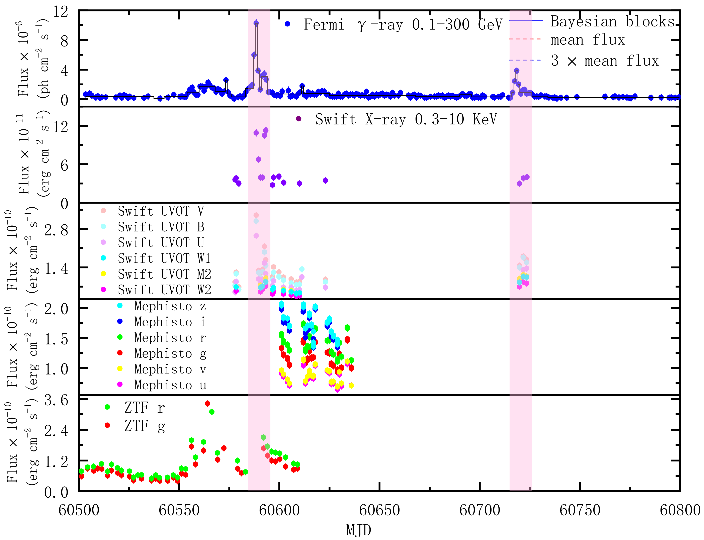<br />
图注：Multi-wavelength light curves of BL Lacertae from MJD 60500 to 60800 (9 July 2024 - 5 May 2025). From top to bottom, the panels display: \(\textit{Fermi}-LAT\) $\gamma$-ray flux ($0.1\text{--}300$ GeV); \(\textit{Swift}-XRT\) X-ray flux ($0.3\text{--}10$ keV); \(\textit{Swift}-UVOT\) flux (across $V, B, U, UVW1, UVM2, UVW2$ filters); Mephisto flux in the $u, v, g, r, i$, and $z$ bands; and ZTF flux ($g$ and $r$ bands). The X-ray, UV, and optical data are corrected for Galactic extinction. The data behind this figure are available in machine-readable format in the online journal.<br />
对应解读：“建议重点查看的图表”第1条：多波段光变图；以及“关键图表逐图导读”中关于图1的说明。<br />
入选理由：这是全文的总览图，直接对应两次爆发的多波段同步演化；横轴是MJD，纵轴包含LAT、XRT、UVOT、光学等关键诊断量，最能支撑对耀发时序、峰前/峰后结构和多波段联动的总体解读。<br />
来源与置信度：\(arxiv_source\)；high；\(arxiv_source\) / \(Rapid_Variability_and_Broadband_Spectral_Modeling_in_the_Flaring_Activity_of_BL_Lacertae.tex\):figure[1]</p>
<p><strong>Fig02</strong><br />
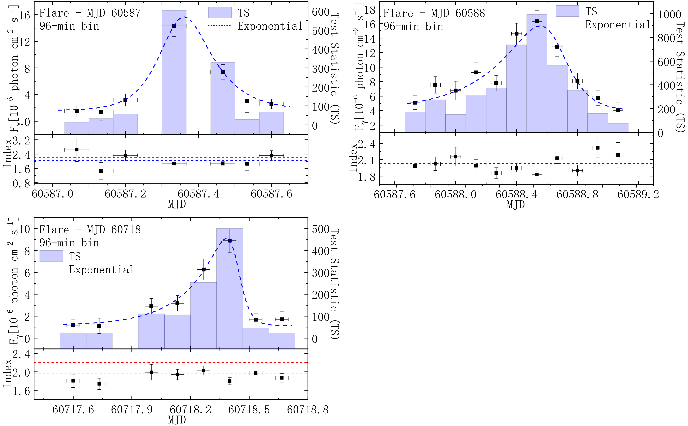<br />
图注：Orbit-binned $\gamma$-ray light curves of BL Lacertae for MJD 60587, MJD 60588, and MJD 60718 (4 October 2024, 5 October 2024, and 12 February 2025). The TS values for each time bin are represented by blue histograms, while the blue dashed lines indicate the exponential fitting results. The bottom panels illustrate the PL photon indices for each corresponding bin. In these panels, the red and blue horizontal lines represent the 4FGL catalog PL index ($2.20$) and the daily average photon index, respectively. The data behind this figure are available in machine-readable format in the online journal.<br />
对应解读：“建议重点查看的图表”第2条：轨道级或更短时标局部放大图；以及“关键图表逐图导读”中关于图2的说明。<br />
入选理由：这张图直接展示轨道分箱下的γ射线局部结构和指数拟合结果，是1.33小时半衰时间的核心证据来源之一；同时底部光子指数面板还能检验短时标变化是否伴随谱硬化/变软，比单纯总光变更能支撑快速变源分析。<br />
来源与置信度：\(arxiv_source\)；high；\(arxiv_source\) / \(Rapid_Variability_and_Broadband_Spectral_Modeling_in_the_Flaring_Activity_of_BL_Lacertae.tex\):figure[2]</p>
<p><strong>Fig05</strong><br />
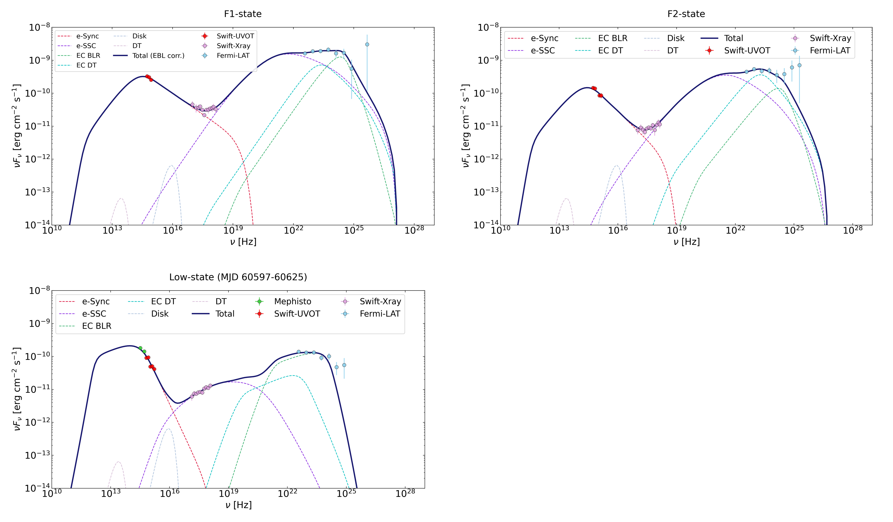<br />
图注：Quasi-simultaneous broadband SEDs of BL Lacertae during the flaring epochs F1 (MJD~60588 (5 October 2024); top left panel) and F2 (MJD~60719 (13 February 2025), with \(\textit{Fermi}-LAT\) data averaged over MJD~60718--60719 (12 February 2025 -- 13 February 2025); top right panel), and the low-flux quiet state (bottom panel; based on X-ray/optical observations on MJD~60602, 60610, and 60623 (19 October 2024, 27 October 2024, and 9 November 2024), and \(\textit{Fermi}-LAT\) data averaged over MJD~60597--60625 (14 October 2024 -- 11 November 2024). Solid lines represent the best-fit results derived from a one-zone leptonic model.<br />
对应解读：“建议重点查看的图表”第4条：SED总图；第5条：参数表或corner图的模型拟合段落；以及“关键图表逐图导读”中关于图5的说明。<br />
入选理由：这是单区轻子模型能否统一解释同步峰、SSC和EC高能分量的核心证据，直接对应论文的模型拟合主结论；三种状态的SED并列显示，最适合比较爆发态与静态的参数变化，并检查高能端是否需要双通道共同贡献。<br />
来源与置信度：\(arxiv_source\)；high；\(arxiv_source\) / \(Rapid_Variability_and_Broadband_Spectral_Modeling_in_the_Flaring_Activity_of_BL_Lacertae.tex\):figure[5]</p>
<p><strong>Fig03</strong><br />
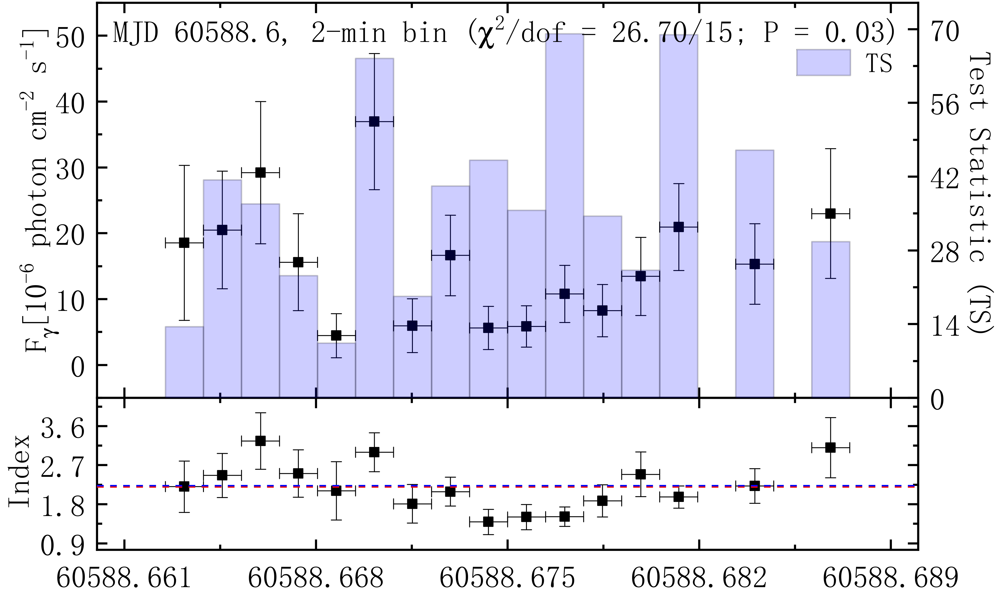<br />
图注：2-minute binned $\gamma$-ray light curve of BL Lacertae during the main flare around MJD 60588.6 (5 October 2024). The upper panel shows the TS values as blue histograms. The bottom panel displays the corresponding PL photon indices. The red and blue horizontal lines in the bottom panel denote the 4FGL catalog PL index ($2.20$) and the average photon index, respectively. The data behind this figure are available in machine-readable format in the online journal.<br />
对应解读：“建议重点查看的图表”第7条：稳健性检验图；以及“关键图表逐图导读”中关于图3的说明。<br />
入选理由：2分钟分箱图是分钟级倍增时间和最短时标争议的关键支撑，最适合核查极短时标是否被少数点或分箱伪影主导；它比日分箱或轨道分箱更能体现作者对sub-minute variability的主张。<br />
来源与置信度：\(arxiv_source\)；high；\(arxiv_source\) / \(Rapid_Variability_and_Broadband_Spectral_Modeling_in_the_Flaring_Activity_of_BL_Lacertae.tex\):figure[3]</p>
<p><strong>Fig04</strong><br />
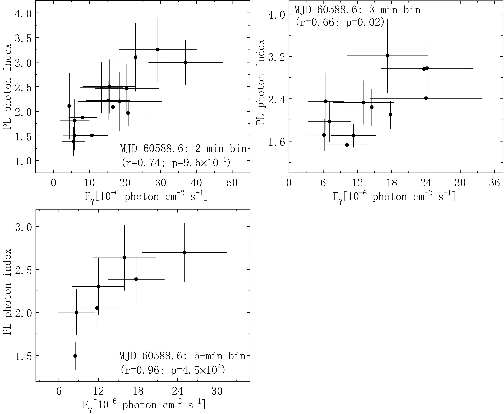<br />
图注：Variations of the PL photon index with $\gamma$-ray flux during the main flare on MJD 60588 (5 October 2024). The left, middle, and right panels show the correlation between the PL photon index and $\gamma$-ray flux for the 2-, 3-, and 5-minute binned light curves, respectively. $r$ is the Spearman rank correlation coefficient, and $p$ is the corresponding chance probability. A clear ``softer-when-brighter'' trend is evident in all three binning intervals. The data behind this figure are available in machine-readable format in the online journal.<br />
对应解读：“建议重点查看的图表”第3条：光子指数—通量散点图；以及“关键图表逐图导读”中关于图4的说明。<br />
入选理由：这张图直接检验“越亮越软”的统计关联，包含Spearman相关系数和不同分箱下的一致性，是解释分钟级耀发谱演化的关键图；相比只看光变曲线，它更能证明谱变与亮度变化之间存在稳健相关。<br />
来源与置信度：\(arxiv_source\)；high；\(arxiv_source\) / \(Rapid_Variability_and_Broadband_Spectral_Modeling_in_the_Flaring_Activity_of_BL_Lacertae.tex\):figure[4]</p>
<h4 id="_12">强相关工作</h4>
<p>这篇工作与同类研究的关系很直接：它属于 BL Lacertae 同一源的多波段爆发研究，也是 \(\u{00060}BL\) Lac\u{00060}/\(\u{00060}BLLac\u{00060}\) 型耀变体快速 \u{00060}γ\u{00060} 射线变源这一更大类问题的一部分。历史上，\u{00060}γ\u{00060} 射线快速变源论文常集中在极端耀变体、\(\u{00060}FSRQ\u{00060}\) 或 TeV \(\u{00060}BL\) Lac\u{00060} 上；本文把焦点放回到 BL Lacertae 这个原型源，意义在于它更接近“标准喷流”的基准对象，而不是极端个例。检索关键词可以用 \(\u{00060}BL\) Lacertae flare\u{00060}、\(\u{00060}Fermi\) LAT rapid variability\u{00060}、\(\u{00060}minute-scale\) gamma-ray variability blazar\u{00060}、\(\u{00060}one-zone\) leptonic SED\u{00060}。</p>
<p>理论上，这篇文章和磁重联、plasmoid、湍流细胞喷流以及单区轻子模型之间存在直接对话。支持单区模型的工作通常强调 \(\u{00060}SED\u{00060}\) 的整体拟合能力，而更激进的快速变源论文则主张单区尺寸太大，必须引入更小的子结构。对照阅读时可检索 \(\u{00060}magnetic\) reconnection blazar flares\u{00060}、\(\u{00060}plasmoid\) gamma-ray variability\u{00060}、\(\u{00060}blazar\) softer-when-brighter\u{00060}、\(\u{00060}SSC\) EC degeneracy\u{00060}。</p>
<p><strong>同一事件 / 同类源线索</strong>：</p>
<ul>
<li><a href="https://arxiv.org/abs/2608.27955v1">https://arxiv.org/abs/2608.27955v1</a></li>
<li><a href="https://arxiv.org/pdf/2608.27955">https://arxiv.org/pdf/2608.27955</a></li>
</ul>
<p><strong>相似工作</strong>：</p>
<p>（未提供）</p>
<p><strong>基础理论 / 方法工作</strong>：</p>
<p>（未提供）</p>
<p><strong>相反观点 / 张力线索</strong>：</p>
<p>（未提供）</p>
</details>
<h3 id="2-a-first-principles-binary-neutron-star-merger-model-of-gw170817-grb170817a-and-at2017gfo">2. A first-principles binary neutron star merger model of GW170817, GRB170817A, and AT2017gfo</h3>
<ul>
<li>来源：arXiv / astro-ph.HE</li>
<li>链接：https://arxiv.org/abs/2608.27555v1</li>
<li>作者：Kenta Kiuchi, Sho Fujibayashi, Kota Hayashi, Kyohei Kawaguchi, Quentin Pognan, Alexis Reboul-Salze, Yuichiro Sekiguchi, Masaru Shibata</li>
<li>评分：novelty 9/10，importance 9/10，relevance 10/10，final 10.00/10</li>
<li>推荐理由：GW170817/GRB170817A/AT2017gfo 的端到端第一性原理统一模型，属于多信使高能天体物理的重磅结果。</li>
</ul>
<p><strong>中文题目</strong>：A first-principles binary neutron star merger model of GW170817, GRB170817A, and AT2017gfo</p>
<p><strong>做了什么</strong>：本文提出一个面向 GW170817、GRB170817A 和 AT2017gfo 的端到端双中子星并合模型：先进行广义相对论磁流体加中微子辐射输运模拟，再做核合成后处理和光子辐射转移，最后与短伽马暴余辉能量需求和千新星光变比较。核心结论是并合残骸中的 MRI 驱动 \(\alpha\Omega\) dynamo 可形成大尺度磁场，产生约 \(10^{51}\,\mathrm{erg\,s^{-1}}\) 的各向同性等效喷流光度，同时给出约 \(0.08M_\odot\) 富中子抛射物，并能解释 GRB170817A 和 AT2017gfo 的主要观测特征。</p>
<p><strong>为什么重要</strong>：重要性在于它尝试跨越多信使解释中的关键断层：从强引力并合动力学直接走到可观测电磁光变，而不是分别调参拟合 GW、GRB 和 kilonova。GW170817 是单事件但约束极强，任何能同时满足喷流能量、抛射物质量、核合成产物和多波段光变的模型都会成为后续事件解释的参照系。本文还把大尺度 \(\alpha\Omega\) dynamo 放在喷流启动的中心位置，这对短伽马暴中央发动机理论、并合后磁场放大机制和数值 GRMHD 分辨率标准都有直接影响。</p>
<p><strong>理论 / 观测 / 仪器方法价值</strong>：这篇论文的价值在于把通常分开处理的三个模块连接起来：GRMHD-中微子并合模拟、r 过程核合成、千新星辐射转移。若其分辨率和物理输入经得起检验，它为双中子星并合多信使解释提供了少参数、物理闭环的基准模型。对理论端，它检验大尺度 dynamo 与喷流启动；对观测端，它把余辉能量和千新星多波段光变放入同一能量/质量预算；对方法端，它展示未来可用端到端模拟替代纯参数化拟合的路线。</p>
<p><strong>为什么应该关注</strong>：值得关注的原因是 GW170817 仍是双中子星多信使物理的标尺事件，而本文声称用一个第一性原理框架同时解释它的引力波相关残骸演化、短伽马暴喷流和千新星辐射。若成立，它会改变我们使用 AT2017gfo 反推抛射物质量、用 GRB170817A 反推喷流能量、以及用未来事件约束中子星状态方程和 r 过程产额的方式。即使部分结论后来被修正，图 5/8/11 这类数值可信度和中央发动机诊断也为评估同类模拟提供了清晰模板。</p>
<details class="paper-detail">
<summary>展开详细解读：文章讲解、背景、理论、重点章节、图表与相关工作</summary>
<h4 id="_13">文章详细讲解</h4>
<p>本文要回答的科学问题可以表述为：同一个双中子星并合物理模型能否同时产生 GW170817 所需的并合残骸演化、GRB170817A 所需的喷流能量，以及 AT2017gfo 所需的抛射物质量和热辐射光变？这比单独拟合短伽马暴或千新星更难，因为喷流需要低重子污染的极向通道和强有序磁场，而明亮千新星需要大量抛射物；二者在重子加载、能量释放和几何分布上可能相互制约。</p>
<p>方法链条由三部分组成。第一部分是广义相对论磁流体加中微子辐射输运并合模拟，用来跟踪残骸、磁场放大、黑洞形成、吸积盘和喷流。第二部分是对抛射物进行核合成计算，得到 r 过程产物和放射性加热。第三部分是光子辐射转移，生成 bolometric 光变和 ugrizJHK 波段光变。图 2 把喷流光度、富中子抛射物和引力波放在同一后并合时间轴上，适合检查这个端到端链条的时间顺序是否物理合理。</p>
<p>关键结果之一是大尺度 dynamo 形成了可以启动喷流的磁场结构。图 1 显示黑洞形成前后密度等值面与磁力线的结构变化；图 8 用 \(R=20\,\mathrm{km}\) 处的蝶形图和环向感应电动势诊断 \(\alpha\Omega\) dynamo。这里应特别核查 MRI 是否被充分解析，因为如果 MRI 质量因子不足，所谓湍流输运和发电机机制可能是数值扩散或网格尺度效应。图 5 给出了核心区和盘区的 MRI quality factor，并标出临界值与不同分辨率/网格裁剪的敏感性，是判断“第一性原理”可信度的核心证据。</p>
<p>关键结果之二是喷流能量和千新星光变与观测相容。图 3A 将模拟中截至 \(t-t_{\rm merger}\approx0.3\,\mathrm{s}\) 估计的喷流能量与文献中拟合 GRB170817A 余辉所需的 Gaussian Jet 和 Power-Law Jet 能量范围比较，并用 10% 转换效率和非理想 MHD 可能增强因子给出阴影区。图 3B、3C 分别比较总 bolometric 光变和 40 Mpc 下 ugrizJHK 多波段光变。阅读时要看峰值时间、峰值光度、颜色衰减和晚期红外是否同时匹配，而不是只看总光度。</p>
<p>局限性主要来自端到端链条中每一步的近似。GRMHD 模拟受限于分辨率、状态方程、种子磁场、湍流闭合与中微子处理；核合成受限于抛射物轨迹采样、核质量模型和反应率；辐射转移受限于原子不透明度、热化效率和角向几何。下一步阅读或复现时，应把图 5 的分辨率诊断、图 11 的黑洞-吸积盘能量预算、图 3 的观测对照残差，以及补充材料中对辐射转移输入的说明串起来检查。</p>
<h4 id="_14">关键结果是怎么做出来的</h4>
<p>第一条主结果是模拟在同一物理过程中同时得到相对论喷流和大量富中子抛射物。摘要给出的两个核心量是 \(L_{\rm iso}\sim10^{51}\,\mathrm{erg\,s^{-1}}\) 与 \(M_{\rm ej}\approx0.08M_\odot\)。这两个量需要放在图 2 的时间演化中阅读：喷流光度不是孤立输出，而应与黑洞形成时间、黑洞外重子质量和富中子抛射物累积同步检查。若图 2B 显示抛射物在喷流建立前已经大量产生，说明千新星物质供应不完全依赖晚期盘风；若喷流光度在黑洞形成后显著增强，则中央发动机更接近黑洞-吸积盘磁机制。</p>
<p>第二条主结果是大尺度 dynamo 被用来解释喷流所需有序磁场的形成。图 1 给出直观结构，图 8 给出平均场诊断，图 5 给出 MRI 是否被解析的数值检验。这里的证据链应按“湍流被解析 \(\rightarrow\) Maxwell 应力和 \(\alpha\) 输运可信 \(\rightarrow\) 平均电动势与平均磁场相关 \(\rightarrow\) 大尺度磁通积累 \(\rightarrow\) 喷流启动”来读。若其中某一步只由视觉图支持而缺少定量相关系数或分辨率收敛，结论强度就应相应降低。</p>
<p>第三条主结果是 GRB170817A 余辉所需喷流能量可以由模拟喷流能量解释。图 3A 没有直接拟合余辉光变，而是把文献中结构化喷流模型所需的喷流动能作为观测约束区间，与本文模拟在 \(t-t_{\rm merger}\approx0.3\,\mathrm{s}\) 时的喷流能量估计比较。该比较的统计性质更接近模型间一致性检验，而非严格似然拟合；需要核查转换效率 10% 的下界、非理想 MHD 增强因子 25 的上界，以及这些假设是否独立于文献余辉模型。</p>
<p>第四条主结果是 AT2017gfo 的 bolometric 和多波段光变能够被辐射转移输出再现。图 3B 使用 Waxman 等重建的 bolometric luminosity，图 3C 使用 Villar 等整理的 ugrizJHK 数据，距离取 40 Mpc。这里应具体看早期 optical 蓝端是否过暗或过亮、中期红光/近红外峰值是否匹配、晚期衰减是否正确。如果模型只是球平均光变，读者还要问视角效应是否会改变与 GW170817 实际观测角的比较。</p>
<p>第五条主结果涉及稳健性。图 5 展示不同网格处理下 MRI quality factor 和 \(\alpha\) 参数，图 11 展示黑洞-吸积盘性质在不同设置下的演化。对这类大规模模拟，置信度不来自大量事件统计，而来自数值分辨率、物理预算和多观测量同时满足。应重点检查黑洞形成时间灰色不确定区间是否显著影响喷流能量、盘质量和抛射物质量；如果这些量在不同分辨率下变化大，那么图 3 的观测吻合可能需要重新量化系统误差。</p>
<p>总体上，本文的“显著性”不是传统的 \(5\sigma\) 检测显著性，而是物理模型一致性的强检验：一个端到端模型同时穿过 GRB 余辉能量需求和千新星多波段光变约束。最值得专业读者核查的是，作者是否在正文或补充材料中给出类似 \(\chi^2\)、残差、模型对比或误差带的量化指标；若没有，读者应把图 3 视为强可视化证据而非完备统计拟合。</p>
<details class="paper-subdetail">
<summary>展开背景、理论、公式、模型、章节和图表导读</summary>
<h4 id="_15">背景知识</h4>
<p>GW170817 是双中子星并合多信使天文学的基准事件：LIGO/Virgo 首次以引力波定位到一例双中子星并合，随后在同一天区发现短伽马暴 GRB170817A 和光学/红外暂现源 AT2017gfo。这个事件把致密星并合、短伽马暴中央发动机、r 过程核合成和千新星辐射转移放进同一个观测链条中，因此任何声称“统一解释”的模型都必须同时面对三个层次的约束：并合动力学、相对论喷流、以及多波段千新星光变。</p>
<p>过去对 GW170817/AT2017gfo 的解释常常采用分段模型：用引力波后验约束总质量、潮汐形变和距离；用结构化喷流或茧模型拟合 GRB170817A 的余辉；用若干个参数化抛射组分拟合蓝/红千新星。这样的做法在观测拟合上很有效，但物理闭环并不完整，因为喷流能量、抛射质量、电子丰度、速度分布和不透明度往往被作为可调参数，而不是从同一个广义相对论磁流体和中微子输运计算中自洽产生。</p>
<p>本文的研究对象正是这个“闭环”问题：能否从双中子星并合后的第一性原理数值模拟出发，得到大尺度磁场、黑洞-吸积盘中央发动机、相对论喷流、富中子抛射物、r 过程核合成产物和千新星光变，并与 GW170817、GRB170817A、AT2017gfo 的观测量在同一个框架下比较。摘要给出的核心数字是喷流各向同性等效光度约为 \(10^{51}\,\mathrm{erg\,s^{-1}}\)，富中子抛射物质量约 \(0.08M_\odot\)，并声称可以再现 GRB170817A 余辉所需喷流能量以及 AT2017gfo 的总光度和 ugrizJHK 波段光变。</p>
<p>阅读这类论文时要避免两个常见误区。第一，“第一性原理”并不等于无假设：初始双星参数、状态方程、磁场种子、数值分辨率、中微子闭合关系、核反应网络、辐射转移中的不透明度处理都会影响结果。第二，“再现观测”也不一定意味着唯一解：GRB170817A 的余辉能由不同结构化喷流参数化给出相似光变，AT2017gfo 的光变也存在抛射质量、速度、电子丰度、几何分布与不透明度之间的退化。本文最值得核查的不是单一曲线是否穿过数据点，而是从并合模拟到电磁信号的物理量是否连续、守恒、且对数值和微物理选择稳健。</p>
<h4 id="_16">基础理论 / 方法脉络</h4>
<p>双中子星并合的基础物理图像可以分为四步。第一步是强引力轨道内旋和潮汐破坏，决定并合时的总质量、角动量、热能和抛射物初始条件。第二步是并合后形成超大质量或大质量中子星残骸，随后可能塌缩为黑洞；在这个阶段，差分自转、Kelvin-Helmholtz 不稳定性和磁旋转不稳定性会放大磁场。第三步是黑洞-吸积盘系统或磁化中子星残骸释放能量，可能沿极轴形成相对论喷流。第四步是动力学抛射物和盘风中的富中子物质发生 r 过程核合成，放射性衰变加热抛射物并产生千新星。</p>
<p>喷流部分的关键是把磁场能转化为沿极轴的 Poynting 通量和最终的动能。若黑洞形成后有旋转黑洞和大尺度极向磁通，Blandford-Znajek 型机制可以抽取黑洞自旋能；若在塌缩前大质量中子星中已经通过 \(\alpha\Omega\) 发电机产生有序大尺度磁场，则喷流启动不再只是人工放入磁通的结果。本文图 1 和图 8 的重点正是证明：模拟中不仅有局部湍流磁场放大，而且形成了能驱动喷流的大尺度磁场结构，并通过蝶形图、平均环向磁场、感应电动势和相关性诊断来支撑 \(\alpha\Omega\) dynamo 解释。</p>
<p>千新星部分的关键观测量是随时间和波段变化的光度。抛射物质量 \(M_{\rm ej}\)、平均速度 \(v\)、电子丰度 \(Y_e\)、核合成丰度分布和有效不透明度 \(\kappa\) 共同决定扩散时间、峰值光度和颜色演化。低 \(Y_e\) 富中子物质会产生镧系/锕系元素，使不透明度升高、光变更红更慢；较高 \(Y_e\) 物质产生较低不透明度组分，对早期蓝光更重要。本文若声称用 \(\approx0.08M_\odot\) 富中子抛射物再现 AT2017gfo，就应重点检查这个质量是如何定义的、是否包含盘风、角向分布如何、以及辐射转移是否保留了非球对称信息。</p>
<p>从分析方法看，本文不是传统意义上的后验采样拟合论文，而是“端到端模拟与观测对照”。这意味着读者要把“拟合”理解为多阶段模型输出的验证：GRMHD-中微子输运给出喷流光度、抛射物质量、速度和 \(Y_e\) 分布；核反应网络给出元素丰度和放射性加热率；光子辐射转移给出 bolometric 和多波段光变；最后与文献中 GRB170817A 余辉所需喷流能量以及 AT2017gfo 光度数据比较。诊断重点应放在能量预算、质量预算、时间尺度和观测残差，而不仅是最终曲线的视觉吻合。</p>
<h4 id="_17">公式与推导</h4>
<p>可从能量和质量守恒建立阅读本文的推导链。并合后系统总能量可粗略分解为引力束缚能、热能、转动能、磁能、喷流能和抛射物动能：</p>
<div class="math-display">\[E_{\rm tot}\approx E_{\rm grav}+E_{\rm th}+E_{\rm rot}+E_{\rm mag}+E_{\rm jet}+E_{\rm ej}.\]</div>
<p>这个式子不是精确的 GR 守恒式，而是读图时的预算框架：喷流和千新星不能任意调大，必须来自残骸和吸积盘可用能量。</p>
<p>喷流观测常用各向同性等效光度表示：</p>
<div class="math-display">\[L_{\rm iso}=\frac{4\pi}{\Delta\Omega}L_{\rm jet}\simeq \frac{2}{1-\cos\theta_j}L_{\rm jet},\]</div>
<p>其中 \(\Delta\Omega\) 是双边或单边喷流立体角定义下的有效角宽，\(\theta_j\) 是喷流开角。本文摘要给出 \(L_{\rm iso}\sim10^{51}\,\mathrm{erg\,s^{-1}}\)，读者应核查原文采用的 opening angle 和 raw luminosity 定义。</p>
<p>若喷流由黑洞自旋和磁通驱动，可用 Blandford-Znajek 标度作数量级检查：</p>
<div class="math-display">\[L_{\rm BZ}\sim \kappa_{\rm BZ}\Phi_{\rm BH}^2\Omega_H^2/c,\]</div>
<p>其中 \(\Phi_{\rm BH}\) 是穿过黑洞视界的磁通，\(\Omega_H=a_\ast c^3/[2GM_{\rm BH}(1+\sqrt{1-a_\ast^2})]\) 是黑洞视界角速度，\(a_\ast\) 为无量纲自旋。图 11 的黑洞自旋、质量和电磁能应能支持这一能量尺度。</p>
<p>磁旋转不稳定性的解析充分性常用 quality factor：</p>
<div class="math-display">\[Q_i=\frac{\lambda_{\rm MRI}}{\Delta x_i},\qquad \lambda_{\rm MRI}\approx \frac{2\pi v_A}{\Omega},\]</div>
<p>其中 \(v_A=B/\sqrt{4\pi\rho h+b^2}\) 可视为相对论修正的 Alfvén 速度，\(\Omega\) 为局部角速度，\(\Delta x_i\) 为网格尺度。图 5 中临界 \(Q\approx15\) 的意义是：只有 \(Q_i\) 足够大，MRI 湍流和由此产生的 Maxwell 应力才较可信。</p>
<p>湍流角动量输运常用 Shakura-Sunyaev 参数表征：</p>
<div class="math-display">\[\alpha_{\rm SS}\sim \frac{\langle -B_RB_\varphi/4\pi+\rho v_R\delta v_\varphi\rangle}{\langle P\rangle}.\]</div>
<p>第一项是 Maxwell 应力，第二项是 Reynolds 应力，\(P\) 为压力。本文图 5C/D 的 \(\alpha\) 轮廓可用于检查磁湍流是否足以重分配角动量并支持盘风/吸积演化。</p>
<p>平均场发电机可写成</p>
<div class="math-display">\[\bar{\mathcal E}_i=\overline{(\mathbf v'\times\mathbf B')}_i\approx \alpha_{ij}\bar B_j-\eta_{ij}(\nabla\times\bar{\mathbf B})_j,\]</div>
<p>其中横线代表平均量，撇号代表湍流涨落，\(\alpha_{ij}\) 是 helical turbulence 产生的平均场系数，\(\eta_{ij}\) 是湍流磁扩散。图 8 中 \(\bar{\mathcal E}_\varphi\)、\(\bar B_\varphi\)、\(\alpha_{\varphi\varphi}\) 的相关性就是检验该近似是否适用的诊断。</p>
<p>千新星扩散时间可用 Arnett 型标度估算：</p>
<div class="math-display">\[t_{\rm pk}\sim \left(\frac{\kappa M_{\rm ej}}{4\pi v c}\right)^{1/2},\]</div>
<p>其中 \(M_{\rm ej}\) 为抛射物质量，\(v\) 为特征速度，\(\kappa\) 为有效不透明度。若本文的 \(M_{\rm ej}\approx0.08M_\odot\) 主要为富中子高不透明度物质，则峰值时间和红外持续时间应相应偏长；若仍要解释早期蓝光，则需有较高 \(Y_e\) 或低 \(\kappa\) 的角向/组分贡献。</p>
<p>放射性加热给出的 bolometric 光度近似为</p>
<div class="math-display">\[L_{\rm KN}(t)\approx \epsilon_{\rm th}(t)M_{\rm ej}\dot q_{\rm r}(t)\left[1-e^{-(t/t_{\rm diff})^2}\right],\]</div>
<p>其中 \(\dot q_{\rm r}\) 是 r 过程衰变比加热率，\(\epsilon_{\rm th}\) 是热化效率。图 3B 的总光度曲线应在峰值附近满足这个能量尺度，并在晚期受热化效率下降影响。</p>
<p>多波段观测对比可形式化为似然或残差：</p>
<div class="math-display">\[\chi^2=\sum_{b,t}\frac{[m_{b,\rm obs}(t)-m_{b,\rm model}(t)]^2}{\sigma_{b,t}^2+\sigma_{\rm sys,b}^2},\]</div>
<p>其中 \(b\) 表示滤光片，\(\sigma_{\rm sys,b}\) 表示距离、消光、标定和辐射转移系统误差。即使论文主要展示视觉比较，读者也应按这个式子检查哪些波段和时期主导了模型成功或失败。</p>
<h4 id="_18">模型拟合 / 应用方法</h4>
<p>本文的拟合量不是一组自由参数后验，而是模拟输出与观测重建量之间的多层对照。第一层是 GRB170817A 余辉所需喷流能量：图 3A 把文献中的 Gaussian Jet 和 Power-Law Jet 余辉模型所需能量作为外部约束，与本文喷流能量估计比较。这里的“拟合”依赖转换效率、喷流角结构和非理想 MHD 增强因子，读者应把这些视为隐含先验或系统误差。</p>
<p>第二层是千新星光变拟合。辐射转移模型输出 bolometric luminosity 和 ugrizJHK 波段光变，并与 AT2017gfo 数据点比较。理想情况下应构造按波段和时间求和的 \(\chi^2\) 或对数似然，包括测光误差、距离模数、银河系消光、宿主消光上限、bolometric 重建误差和模型系统误差。若论文只展示曲线和数据点，读者仍可用残差图思维判断：早期蓝波段、中期光学峰值、近红外峰值和晚期衰减分别是否系统偏离。</p>
<p>第三层是内部模拟诊断。喷流能量与千新星光变不是独立拟合量，因为它们共享同一个残骸、吸积盘和抛射物历史。图 11 的黑洞自旋、质量、吸积率、盘质量和电磁能应与图 2A 的喷流光度共同满足能量预算；图 2B 的富中子抛射质量应与辐射转移输入质量一致。若辐射转移使用了后处理筛选或角向重采样，必须检查这些步骤是否改变了原始模拟的质量和能量守恒。</p>
<p>主要参数退化包括：喷流真实能量与开角/视角/角结构退化；喷流光度与辐射效率退化；千新星质量与不透明度退化；不透明度与 \(Y_e\)/镧系丰度退化；抛射速度与扩散时间退化；距离与绝对光度退化。对于 GW170817 这样的单事件，很多退化不能靠事件统计打破，只能靠多信使一致性和物理先验约束。</p>
<p>模型可能失败的地方也很明确。若 MRI 分辨率不足，磁场放大和 \(\alpha\Omega\) dynamo 可能不稳健；若黑洞形成时间对分辨率过敏，喷流能量和盘风质量会随之改变；若球平均辐射转移忽略强角向结构，某些观测角下的光变可能与图 3C 不同；若核不透明度或热化效率选择不同，AT2017gfo 的红外和晚期光度可能偏移。因此最好的拟合诊断应包括分辨率序列、物理输入变体、视角光变族和逐波段残差。</p>
<h4 id="_19">重点章节 / 结果段落怎么读</h4>
<ol>
<li>
<p>Introduction：重点读作者如何界定“unified physical explanation remains elusive”。应标出他们认为以往参数化喷流、参数化千新星和分段多信使解释的不足，以及本文相对这些工作的新增约束。</p>
</li>
<li>
<p>GRMHD-neutrino simulation 方法：重点看初始双中子星参数、状态方程、磁场初始条件、网格分辨率、中微子辐射输运近似、黑洞形成判据和喷流识别标准。这里决定“第一性原理”的真实含义。</p>
</li>
<li>
<p>Jet launching 与 dynamo 结果段：结合图 1、图 5、图 8 阅读。应核查 MRI quality factor、\(\alpha\Omega\) dynamo 诊断、磁能增长、极区重子污染和喷流 Lorentz factor/光度定义。</p>
</li>
<li>
<p>Ejecta, nucleosynthesis and kilonova 部分：重点看 \(0.08M_\odot\) 富中子抛射物的定义、选取半径、是否排除束缚物质、\(Y_e\)-速度-角度分布、核反应网络输入，以及辐射转移中的不透明度和热化处理。</p>
</li>
<li>
<p>Observation comparison 部分：围绕图 3 读。对 GRB170817A，要看作者比较的是 prompt GRB、afterglow kinetic energy 还是 jet luminosity；对 AT2017gfo，要看 bolometric 和各滤光片残差，特别是早期蓝光和晚期近红外。</p>
</li>
<li>
<p>Discussion/limitations：重点找作者如何处理分辨率、非理想 MHD、转换效率、观测视角、核物理不确定性和模型非唯一性。若这些只在补充材料中出现，也应纳入主结论可信度评估。</p>
</li>
</ol>
<h4 id="_20">建议重点查看的图表</h4>
<ol>
<li>
<p>喷流启动与磁场几何图：重点看图 1 类三维可视化中的密度等值面、磁力线是否形成贯穿极区的大尺度结构，以及黑洞形成前后结构是否连续。陷阱是可视化容易强调少量强磁场线，需结合定量能流判断是否真能驱动喷流。</p>
</li>
<li>
<p>多信使时间演化图：重点看图 2 中喷流各向同性等效光度、raw jet luminosity、富中子抛射质量、黑洞外重子质量和引力波信号是否在同一后并合时间轴上自洽。要核查黑洞形成时间不确定区间与喷流增强、抛射终止或吸积变化是否对应。</p>
</li>
<li>
<p>观测对比主图：重点看图 3A 的喷流能量是否落入 GRB170817A 余辉模型所需范围，图 3B 的 bolometric 光变是否匹配 AT2017gfo 峰值和衰减，图 3C 的 ugrizJHK 是否同时匹配蓝端和红外端。要注意文献数据点来自不同重建方法，误差可能不是简单独立高斯误差。</p>
</li>
<li>
<p>MRI 分辨率诊断图：重点看图 5 的 MRI quality factor 是否超过临界值 \(Q\sim15\)，核心区和盘区是否都满足，以及移除最细网格或改变分辨率后结果是否稳定。若关键喷流阶段只在边缘满足解析条件，需谨慎解读 dynamo 结论。</p>
</li>
<li>
<p>\(\alpha\Omega\) dynamo 蝶形图：重点看图 8 中 \(\bar B_\varphi\)、\(\bar{\mathcal E}_\varphi\)、\(\bar B_R\) 的时空相位关系，以及 \(\alpha_{\varphi\varphi}\) 与相关系数是否支持由湍流电动势再生大尺度场。不要只看颜色条强弱，要看符号反转和传播模式。</p>
</li>
<li>
<p>黑洞-吸积盘中央发动机图：重点看图 11 中黑洞无量纲自旋、黑洞质量、吸积率、黑洞外重子质量、吸积盘转动能和电磁能的共同演化。该图决定喷流能量预算是否可持续，也可诊断喷流光度是否只是短时瞬变。</p>
</li>
</ol>
<h4 id="_21">关键图表逐图导读</h4>
<p>图 1：这是一张喷流启动机制图，横向比较黑洞形成前 \(t-t_{\rm merger}\approx0.059\,\mathrm{s}\) 与形成后 \(\approx0.075\,\mathrm{s}\) 的残骸结构。坐标和颜色应对应三维空间中的静质量密度，洋红色曲线为磁力线，黑色球体表示黑洞视界。读图时要问三个问题：极区是否被清空到低重子密度、磁力线是否从局部小尺度湍流变为贯穿尺度结构、黑洞形成后喷流通道是否继续存在。陷阱是磁力线可视化没有给出能流方向和 Lorentz 因子，必须结合图 2A 的喷流光度与后续喷流能量比较。</p>
<p>图 2：这是多信使时间轴图。A 面板给出 isotropic-equivalent jet luminosity 与 raw jet luminosity，读者要区分几何校正后的 \(L_{\rm iso}\) 和实际喷流功率；B 面板给出富中子抛射物质量与黑洞外重子质量，可用于判断千新星物质来源和吸积盘剩余质量；C 面板给出引力波，灰色区域标示黑洞形成时间不确定性。关键读法是看喷流光度上升、黑洞形成、盘质量下降和富中子抛射累积之间是否有合理因果顺序。若喷流主要在模拟末期才增强，则外推到真实 GRB/余辉能量时要特别小心。</p>
<p>图 3：这是观测比较主结果图。A 面板横向收集文献中拟合 GRB170817A 余辉所需的喷流动能，包含 Gaussian Jet 和 Power-Law Jet 模型；蓝线和阴影区代表本文模拟估计的喷流能量及转换效率/非理想 MHD 修正范围。读者要看本文能量是否只是擦边进入文献范围，还是覆盖主要模型需求。B 面板比较 bolometric kilonova 光变，重点是峰值亮度、峰值时间和衰减斜率。C 面板比较 40 Mpc 下 ugrizJHK 光变，陷阱是球平均光变可能掩盖视角效应，而 GW170817/AT2017gfo 的观测角并非严格极向或赤道向。</p>
<p>图 5：这是数值可信度诊断图。A/B 面板分别给出核心区和盘区 MRI quality factor，并与临界值 \(Q=15\) 比较；C 面板给出按静质量密度分区的 Shakura-Sunyaev 参数随时间演化；D 面板给出某一时刻子午面上的 \(\alpha\) 分布。若图中关键阶段 \(Q\) 长时间高于临界值，并且不同网格裁剪实验得到相近 \(\alpha\) 与喷流演化，dynamo 结论较稳健；反之，磁场放大可能被分辨率支配。</p>
<p>图 8：这是 \(\alpha\Omega\) dynamo 的机制图。A/B/C 面板分别显示平均环向磁场、环向湍流电动势和平均径向磁场的蝶形图，D 面板给出 \(\alpha_{\varphi\varphi}\) 及相关性。读者应看 \(\bar{\mathcal E}_\varphi\) 是否与 \(\bar B_\varphi\) 有稳定相位关系，以及符号反转是否类似平均场发电机预期。仅有强磁场并不足以证明 dynamo；关键是平均电动势与平均场之间的相关结构。</p>
<p>图 11：这是中央发动机能量预算图。A/B/C/D/E/F 面板分别追踪黑洞自旋、质量、吸积率、黑洞外重子质量、吸积盘转动能和电磁能。读图时要把它与图 2A 的喷流光度对应起来：当吸积率下降或盘质量减少时，喷流是否仍可由黑洞自旋和磁通维持；电磁能增长是否早于喷流能量输出；不同分辨率曲线是否在定性上给出同样中央发动机寿命。</p>
</details>
<h4 id="_22">论文原图 / 可嵌入图片</h4>
<p><strong>Fig03</strong><br />
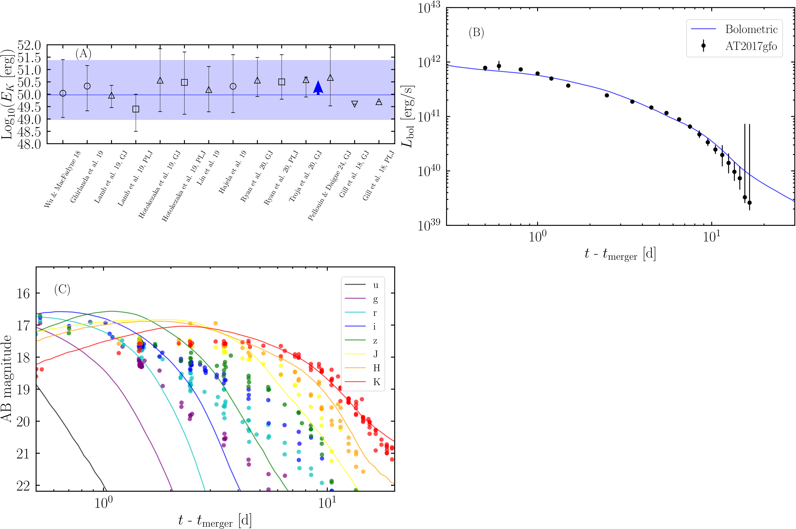<br />
图注：\(\textbf{Comparison to the observations.}\) (\textbf{A}) The required jet kinetic energy to fit the afterglow observations of GRB170817A in the radio, X-ray, and optical bands in the literature. GJ and PLJ are abbreviations for Gaussian Jet and Power-Law Jet, respectively. The blue solid line is the estimated energy emitted as of the jet until the end of the simulation $t-t_{\rm merger}\approx 0.3~{\rm s}$. The colored shaded region gives the estimated jet kinetic energy assuming $10\%$ conversion efficiency (lower-bound) and boosted by a factor $25$ due to the non-ideal magnetohydrodynamics effect (upper bound)~\(\cite{Reboul-Salze:2025eqt}.\) (\textbf{B}) Total bolometric kilonova light curve. The observed bolometric luminosity is taken from~\(\cite{Waxman:2017sqv}.\) (\textbf{C}) Spherically averaged ugrizJHK-band kilonova light curves at $40\,{\rm Mpc}$. The observed ugrizJHK data points are taken from \(\cite{Villar:2017wcc}.\)<br />
对应解读：建议重点查看的图表：与 GRB170817A/AT2017gfo 观测对比的主结果图；对应“关键图表逐图导读”中模型与观测比较段。<br />
入选理由：这张图直接检验论文核心主张：喷流能量与后随效应、以及千新星光变曲线能否同时匹配观测，是最能支撑整篇文章结论的总览图。<br />
来源与置信度：\(arxiv_source\)；high；\(arxiv_source\) / \(science_template.tex\):figure[3]</p>
<p><strong>Fig02</strong><br />
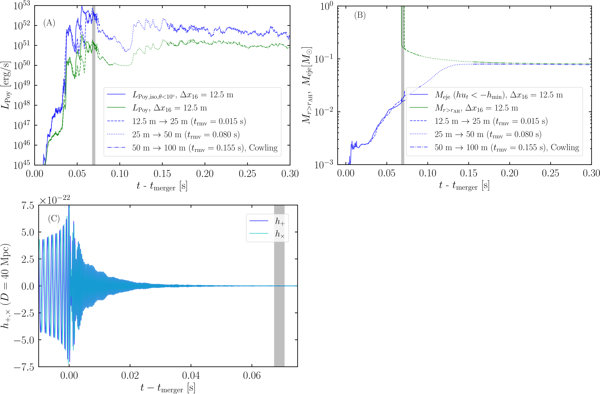<br />
图注：\(\textbf{Multimessenger signals from binary neutron star merger.}\) (\textbf{A}) Isotropic-equivalent (blue) and raw (green) jet luminosity. (\textbf{B}) Neutron-rich matter ejecta (blue) and the baryonic mass outside of the black hole (green). (\textbf{C}) Gravitational waves. The horizontal axis is the post-merger time, and the gray-shaded region denotes the uncertainty in black hole formation timing. See Materials \&amp; Method for the legend in detail.<br />
对应解读：关键图表逐图导读：多信使信号时间演化（喷流光度、抛射物、引力波）；对应论文主结果的时间尺度分析。<br />
入选理由：它把喷流、富中子抛射物和引力波放在同一时间轴上，最适合解释多信使联合演化与黑洞形成时序。<br />
来源与置信度：\(arxiv_source\)；high；\(arxiv_source\) / \(science_template.tex\):figure[2]</p>
<p><strong>Fig01</strong><br />
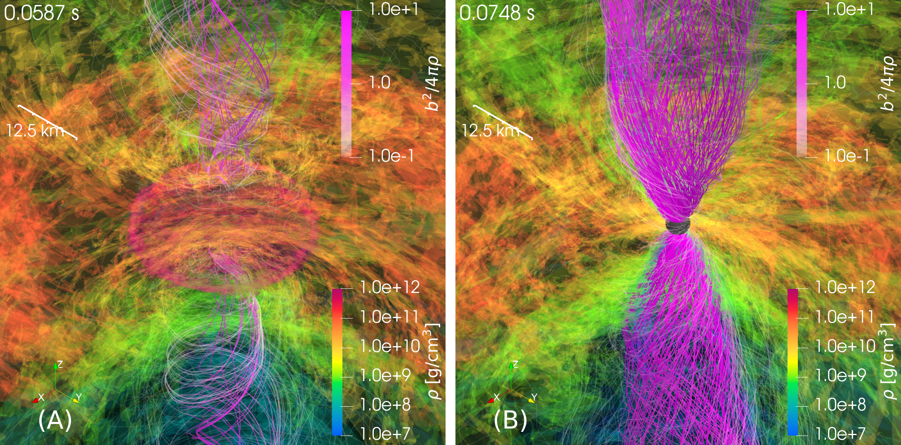<br />
图注：\(\textbf{Jet launching from binary neutron star merger remnant.}\) (\textbf{A}) The iso-surface of the rest-mass density (color) and the magnetic-field lines (magenta-curve) at $t-t_{\rm merger}\approx 0.059$~s inside the remnant massive neutron star formed after the merger. The large-scale magnetic field established via the magnetorotational instability-driven $\alpha\Omega$ dynamo drives a jet. (\textbf{B}) The same as (\textbf{A}), but at $t-t_\mathrm{merger}\approx 0.075~{\rm s}$, i.e., after the black hole formation whose horizon is represented by the black sphere at the center.<br />
对应解读：关键图表逐图导读：喷流启动与黑洞形成前后磁场结构；对应物理机制解释段。<br />
入选理由：该图直接展示大尺度磁场如何驱动喷流，以及黑洞形成前后结构变化，是理解“第一性原理”喷流形成机制的关键证据。<br />
来源与置信度：\(arxiv_source\)；high；\(arxiv_source\) / \(science_template.tex\):figure[1]</p>
<p><strong>Fig08</strong><br />
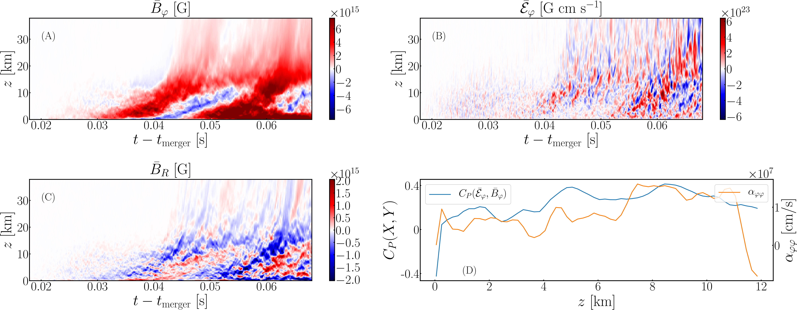<br />
图注：{\(\bf\) $\alpha\Omega$ dynamo inside the binary neutron star merger remnant}. Butterfly diagram at R = 20 km: (\textbf{A}) Mean toroidal magnetic field $\bar{B}_\varphi$. (\textbf{B}) Toroidal electromotive force $\bar{\mathcal{E}}_\varphi$. (\textbf{C}) Mean radial magnetic field $\bar{B}_R$. (\textbf{D}) $\alpha_{\varphi\varphi}$ parameters (orange) and correlation between $\bar{\mathcal{E}}_\varphi$ and $\bar{B}_\varphi$ (blue).<br />
对应解读：关键图表逐图导读：αΩ dynamo 与蝶形图；对应磁场放大与自洽发电机机制段。<br />
入选理由：这张图最能说明作者声称的大尺度 dynamo 过程，给出平均环向磁场、感应电动势和相关系数，机制诊断最直接。<br />
来源与置信度：\(arxiv_source\)；high；\(arxiv_source\) / \(science_template.tex\):figure[8]</p>
<p><strong>Fig05</strong><br />
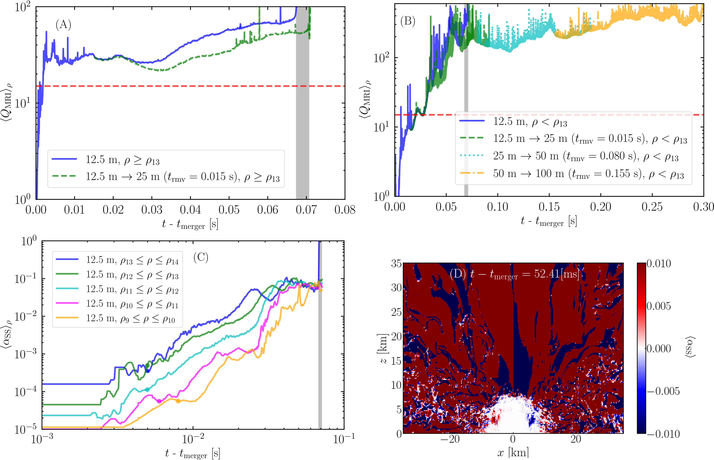<br />
图注：\(\textbf{Magnetorotational instability inside the merger remnant.}\) ({\(\bf\) A}) Magnetorotational-instability quality factor in the core region with $\rho \ge 10^{13}~{\rm g~cm^{-3}}$. The blue curve denotes the simulation with $\Delta x_{16}=12.5$ m, and the green curve denotes the simulation in which the finest nested domain with $\Delta x_{16}=12.5$ m is removed at $t-t_{\rm merger}=0.015$~s. The vertical gray-shaded region denotes the uncertainty of the black hole formation estimated by the simulations with $\Delta x_{16}=12.5$~m and $\Delta x_{15}=25$~m. ({\(\bf\) B}) Magnetorotational-instability quality factor in the disk region with $\rho < 10^{13}~{\rm g~cm^{-3}}$. The cyan (orange) curve presents the simulation, in which the second (third) finest nested domain with $\Delta x_{15}=25$ m $(\Delta x_{14}=50~{\rm m})$ is removed at $t-t_{\rm merger}=0.08~(0.155)$~s. The horizontal red-dashed line denotes the critical quality factor of $15$~\(\cite{Hawley:2011tq}.\) ({\(\bf\) C}) The rest-mass density conditioned Shakura-Sunyaev parameter as a function of the post-merger time. The filled circles on top of each curve at the very beginning indicate the timing when the magnetorotational-instability quality factor exceeds the critical value. ({\(\bf\) D}) The profile of the Shakura-Sunyaev parameter on a meridional plane at $t-t_{\rm merger}\approx 0.052$~s. The link to the visualization:~\url{http://www2.yukawa.kyoto-u.ac.jp/~kenta.kiuchi/anime/FUGAKU2025/out_yuv420p_Maxwell.mp4}.<br />
对应解读：建议检查论文中展示主要数据、模型比较、参数约束、残差或灵敏度预测的图表：MRI quality factor、分辨率依赖与黑洞形成不确定性。<br />
入选理由：它同时提供 MRI 是否被充分解析、不同分辨率/网格裁剪的敏感性，以及临界质量因子的诊断，是支撑数值可信度的重要图。<br />
来源与置信度：\(arxiv_source\)；high；\(arxiv_source\) / \(science_template.tex\):figure[5]</p>
<p><strong>Fig11</strong><br />
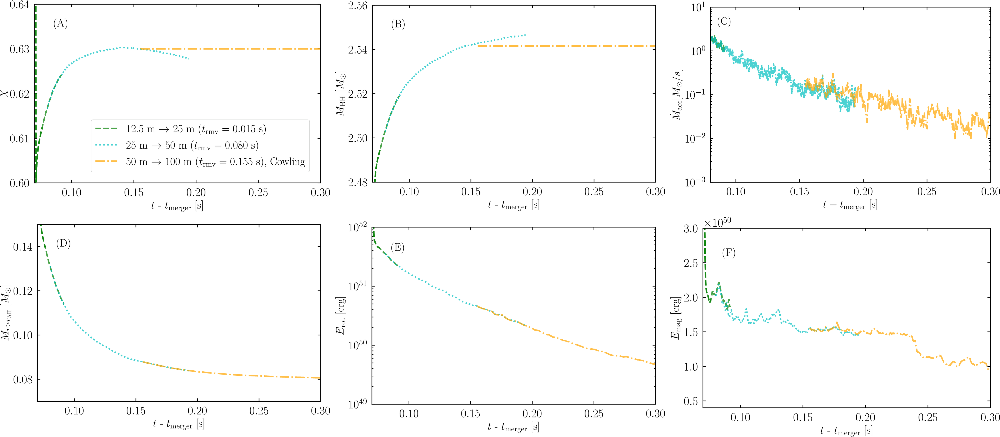<br />
图注：\(\textbf{Properties of the black hole and accretion torus.}\) (\textbf{A}) Non-dimensional black hole spin. (\textbf{B}) Black hole mass. (\textbf{C}) Mass accretion rate onto the black hole. (\textbf{D}) Baryonic mass outside of the black hole. (\textbf{E}) Rotational energy of the accretion torus. (\textbf{F}) Electromagnetic energy. The horizontal axis is the post-merger time. The legends for the dashed, dotted, and dashed-dotted curves are the same as fig.~\(\ref{fig:SM_Qfac}\) (\textbf{B}).<br />
对应解读：建议检查论文中展示主要数据的图表：黑洞自旋、质量、吸积率与吸积盘能量演化；对应中央发动机状态分析。<br />
入选理由：这张图能把喷流和抛射背后的中央引擎状态串起来，说明黑洞-吸积盘系统如何随时间演化并维持能量输出。<br />
来源与置信度：\(arxiv_source\)；high；\(arxiv_source\) / \(science_template.tex\):figure[11]</p>
<h4 id="_23">强相关工作</h4>
<p>这是一个命名事件 GW170817/GRB170817A/AT2017gfo 的同事件论文。相关源背景应首先检索同事件发现和基准观测：LIGO/Virgo 的 GW170817 发现论文可从 https://arxiv.org/abs/1710.05832 进入；Fermi-GBM/INTEGRAL 对 GRB170817A 的发现与关联论文可从 https://arxiv.org/abs/1710.05834 检索；AT2017gfo/SSS17a 的光学对应体发现和早期观测可用关键词“AT2017gfo SSS17a Coulter 2017 arXiv”或 NASA ADS 检索。千新星多波段数据整理中，本文图注提到 Villar et al. 2017，可从 https://arxiv.org/abs/1710.11576 检索；bolometric 重建中图注提到 Waxman et al. 2017，可从 https://arxiv.org/abs/1711.09638 检索。</p>
<p>同类和基础工作包括短伽马暴结构化喷流/余辉模型、GW170817 VLBI 超光速运动约束、双中子星并合 GRMHD 模拟、r 过程核合成和千新星辐射转移。建议检索关键词包括“GW170817 structured jet Gaussian power-law afterglow”、“GRB170817A VLBI superluminal motion”、“binary neutron star merger GRMHD neutrino radiation Kiuchi Shibata”、“kilonova radiative transfer AT2017gfo lanthanide opacity”。经典基础脉络还包括 Blandford-Znajek 喷流机制、MRI 数值解析标准、平均场 \(\alpha\Omega\) dynamo、以及 Kasen/Metzger 等关于千新星不透明度和 r 过程加热的综述或模型论文。</p>
<p>潜在张力线索主要来自三方面。第一，GRB170817A 余辉可由不同角结构喷流模型拟合，本文的喷流能量比较是否依赖某类模型需要核查。第二，AT2017gfo 的早期蓝光通常要求较高 \(Y_e\) 或低不透明度组分，而摘要强调 \(0.08M_\odot\) neutron-rich ejecta，需检查是否同时产生足够蓝组分。第三，数值模拟中磁场放大和喷流启动对初始磁场、分辨率和非理想 MHD 效应很敏感，图 5、图 8 和相关补充材料应与以往 Kiuchi/Shibata 组及其他 GRMHD 组的分辨率研究对照阅读。</p>
<p><strong>同一事件 / 同类源线索</strong>：</p>
<p>（未提供）</p>
<p><strong>相似工作</strong>：</p>
<p>（未提供）</p>
<p><strong>基础理论 / 方法工作</strong>：</p>
<p>（未提供）</p>
<p><strong>相反观点 / 张力线索</strong>：</p>
<p>（未提供）</p>
</details>
<h3 id="3-astrophysical-sensitivity-projections-for-the-icecube-upgrade">3. Astrophysical Sensitivity Projections for the IceCube Upgrade</h3>
<ul>
<li>来源：arXiv / astro-ph.HE</li>
<li>链接：https://arxiv.org/abs/2608.28395v1</li>
<li>作者：R. Abbasi, M. Ackermann, J. Adams, J. A. Aguilar, M. Ahlers, J. M. Alameddine, S. Ali, N. M. Amin</li>
<li>评分：novelty 8/10，importance 9/10，relevance 9/10，final 9.70/10</li>
<li>推荐理由：IceCube Upgrade 的天体物理灵敏度展望，属于高优先级的高能中微子仪器/方法论文，且直接关联点源、暂现源和银河系扩展源搜索。</li>
</ul>
<p><strong>中文题目</strong>：IceCube 升级版的天体物理灵敏度投影</p>
<p><strong>做了什么</strong>：这篇文章不是在报告新发现，而是在回答一个更现实的问题：IceCube Upgrade 真正装好并完成标定后，天体物理上能把灵敏度推进到什么程度。作者用新的蒙特卡洛数据，分别评估了三类直接延伸自现有 IceCube 分析的任务：瞬变中微子搜寻、像 NGC 1068 这样的稳态点源、以及银河系扩展弥散辐射。核心结论很清楚：在 \(\lesssim 10\) \(\mathrm{GeV}\) 的低能区，短时标瞬变源的灵敏度可获得接近一个数量级的提升；对长时间累积的稳态搜寻，升级的边际收益会被十年级别的历史高能数据稀释，但在南天和软谱源上仍能带来明显增益，因为新阵列更擅长压制背景。</p>
<p><strong>为什么重要</strong>：它把“新探测器会更好”这种笼统判断，翻译成了具体可比较的灵敏度曲线、时间窗依赖和天空位置依赖。对 IceCube 这类高背景、低能阈值受限的实验来说，升级到底是提升发现潜力，还是主要改善系统学与背景抑制，这类投影比宣传更有价值。</p>
<p><strong>理论 / 观测 / 仪器方法价值</strong>：对理论上，它帮助判断哪些中微子源模型会在 \(\mathrm{GeV}\) 能段变得可检验；对观测上，它给出了升级后在不同时间尺度、不同谱型、不同赤纬下的预期表现；对方法上，它展示了如何把新硬件的低能优势和旧数据的高能统计结合起来做敏感度预测。</p>
<p><strong>为什么应该关注</strong>：如果你关心的是爆发源、软谱点源、银河盘弥散辐射，或者想知道 IceCube Upgrade 是否真的能把中微子天文学从“\(\mathrm{TeV}\) 时代”往更低能推进，这篇就是很直接的路线图。它也能帮你判断：未来几年真正值得优先做的，是短时标瞬变、南天软谱点源，还是银河系弥散成分。</p>
<details class="paper-detail">
<summary>展开详细解读：文章讲解、背景、理论、重点章节、图表与相关工作</summary>
<h4 id="_24">文章详细讲解</h4>
<p>这篇工作的科学问题很直接：当 IceCube 在 DeepCore 内部加入更致密、更多光电倍增管的多 \(\mathrm{PMT}\) 模块之后，\(\mathrm{GeV}\) 区间的中微子天体物理到底会打开多少新空间。作者关心的不是抽象的仪器性能，而是三类具体任务：短时标瞬变源、稳态点源和银河系扩展弥散源。它们代表了冰立方现有分析体系中最常见、也最受背景和阈值限制的三种观测模式。</p>
<p>作者的做法是用新的蒙特卡洛数据集，针对升级后的几何与响应重新构造敏感度预测，并将其与当前或既有的 IceCube 分析框架做对照。由于这是一篇投影论文，重点不是“发现了几个事件”，而是“在给定源时标、谱型和天空位置下，最中位的预期上限或发现潜力能到什么水平”。因此它本质上是在比较不同配置下的有效面积、角分辨、能量估计和背景拒绝能力如何共同改变最终灵敏度。</p>
<p>最重要的结果是低能短时标场景。作者明确指出，在 \(\lesssim 10\) \(\mathrm{GeV}\) 区间，升级阵列对瞬变源的灵敏度可以达到接近一个数量级的提升。这个结论之所以强，不只是因为新模块更密，而是因为短时间窗内背景本来就受限于统计，任何对低能重建和背景判别的改善都会被放大。对稳态点源，尤其是像 NGC 1068 这样的长时间积分对象，升级带来的收益没有那么戏剧化，因为十年级别的历史高能数据仍然占主导；但在南天和软谱源上，升级仍能显著改善结果。</p>
<p>局限也很清楚：这仍然是投影，不是实测。最终收益取决于真实标定后的角分辨、能量响应、介质光学参数、触发效率以及大气缪子/大气中微子背景抑制是否达到预期。下一步最重要的是把这种“理想蒙特卡洛中的优势”转化为“真实数据中的分析增益”，尤其是要验证低能重建和多 \(\mathrm{PMT}\) 模块在南天软谱背景下的稳定性。</p>
<h4 id="_25">关键结果是怎么做出来的</h4>
<p>这篇文章最关键的证据链不是单个显著性，而是“敏感度曲线如何随时间尺度、能区和天空位置变化”。作者用新蒙特卡洛样本重建升级后的事件选择效率、有效面积和背景拒绝能力，然后把这些量喂进面向三类科学目标的预期灵敏度计算里。也就是说，论文的样本不是天体事件本身，而是模拟得到的信号与背景事件库，以及由此导出的中位预期上限或发现潜力。</p>
<p>对瞬变源，作者特别强调短时标窗口内的增益。这里的关键逻辑是：当时间窗缩短时，背景事件数会按窗宽线性下降，而信号如果来自爆发则不会按同样比例稀释，因此低背景场景下任何角分辨和低能重建的改进都会显著抬升信噪比。论文给出的“\(\lesssim 10\) \(\mathrm{GeV}\)”量级提升，说明升级阵列对最难做的低能瞬变窗口最有价值。这个结论应该由对应的灵敏度曲线、时间窗扫描图和能量分布图共同支撑。</p>
<p>对稳态点源，结论更微妙。作者指出，长时间积分分析里，升级后的低能事件虽然更干净，但会被多年积累的历史高能样本部分稀释。换句话说，稳态分析的最终灵敏度由两个权重共同决定：一边是升级阵列在低能区的增益，另一边是旧数据在高能区的统计优势。对软谱源，尤其是南天源，升级的背景抑制使得低能事件重新变得有竞争力，所以改善仍然很明显。这个结果通常需要通过不同谱指数下的灵敏度曲线来确认。</p>
<p>对银河系弥散辐射，关键是扩展源和背景的分离。升级后的仪器如果能更好地区分低能中微子与大气背景，就能把银河盘这种大面积、软谱的信号从天空背景里抠出来。这里最需要看的不是单个源的点扩散函数，而是空间模板、能量权重和背景模型在联合拟合中的表现。稳健性检验上，读者应重点关注系统误差带是否包括了冰层光学性质、DOM 响应以及大气中微子归一化的不确定性，因为这些都会直接影响低能投影是否过于乐观。</p>
<details class="paper-subdetail">
<summary>展开背景、理论、公式、模型、章节和图表导读</summary>
<h4 id="_26">背景知识</h4>
<p>IceCube 的长期目标一直是把宇宙中微子当作新的天文信使来用，但真正困难的地方不是“能不能看见光”，而是如何在强烈的大气背景里识别少量天体物理事件。传统上，IceCube 在 \(\mathrm{TeV}\) 到更高能区最有优势，因为高能事件背景更少、角分辨更好，且穿地中微子更容易从南北半球的背景中分离出来。低能区虽然对应更多潜在源类，但也最容易被大气缪子和大气中微子淹没。</p>
<p>DeepCore 已经是 IceCube 向低能区下探的重要一步，但它仍受限于阵列间距、单 \(\mathrm{PMT}\) 模块的光学采样能力，以及低能事件重建的不稳定性。升级版通过在既有 infill 区域引入更致密的多 \(\mathrm{PMT}\) 模块，目标就是提高局部光采样、方向重建和背景判别能力。对 \(\mathrm{GeV}\) 事件来说，哪怕是很小的重建提升，也会显著改变能量阈值附近的可用样本结构。</p>
<p>这个问题现在值得重新看，原因是天体物理前景已经从“有没有 \(\mathrm{TeV}\) 天体源”转向“低能端能否补上源类和机制信息”。瞬变源、软谱点源和银河盘弥散成分都更依赖低能事件，而不是传统的极高能尾部。也就是说，升级的价值不只是更高的总计数，而是把以前几乎不可用的区域变成可分析区域。</p>
<p>常见误区有两个。第一个是把“灵敏度提升”简单理解成“所有科学任务都平均变好”，但这篇论文已经说明，稳态长时标任务会被历史数据稀释，真正受益最大的其实是短时标和软谱场景。第二个误区是只看有效面积，不看背景和重建性能；对于 \(\mathrm{GeV}\) 事件，背景拒绝能力往往比单纯几何面积更重要。</p>
<h4 id="_27">基础理论 / 方法脉络</h4>
<p>中微子望远镜的基本图像是：高能中微子在冰中或周围介质里产生带电次级粒子，这些粒子以超光速于介质中的相速度运动，从而发出切伦科夫光。探测器记录的是光子到达时间和空间分布，而不是中微子本身。于是整个问题变成一个逆问题：从有限的光学命中重建粒子的方向、能量和顶点，再进一步推断中微子源的空间、时间和谱信息。</p>
<p>对于 IceCube 这类实验，最核心的性能量通常不是原始通量，而是有效面积 \(A_{\mathrm{eff}}(E,\delta)\)、角分辨 \(\sigma_{\psi}\)、能量响应和背景率。若信号通量是 \(\Phi(E)\)，则期望事件数大致由 \(A_{\mathrm{eff}}\) 决定。低能区的难点在于，大气中微子和大气缪子背景随能量下降得没有信号那么快，导致信噪比急剧恶化。升级阵列的核心作用，就是用更细的光学采样来压缩这一背景劣势。</p>
<p>多 \(\mathrm{PMT}\) 模块的物理意义在于把一个“大像素”变成多个小像素。多个 \(\mathrm{PMT}\) 提供更丰富的时间结构和入射方向信息，所以可以改善局部光锥拟合、早到光子识别以及低能级联/径迹的分类。对于 \(\mathrm{GeV}\) 事件，这类改进往往比单纯增加几何体积更重要，因为事件本身太短、太暗，真正决定能否分析的是重建质量而不是单次事件的亮度。</p>
<p>在分析层面，瞬变、点源和扩展源对应三种不同的统计结构。瞬变源依赖时间窗；点源依赖角空间聚集；扩展源则要同时利用空间模板和能谱。它们共享的困难是参数退化：例如软谱信号会和大气背景混叠，扩展模板会和背景不均匀性混叠，短时窗则会和随机背景涨落混淆。因此，任何灵敏度投影都必须同时处理信号形状、背景模型和系统误差，不能只看理想信号计数。</p>
<h4 id="_28">公式与推导</h4>
<p>先从期望事件数出发。若源通量为 \(\Phi(E,t)\)，则在观测时长 \(T\) 内的信号事件数可写成</p>
<div class="math-display">\[N_{\mathrm{sig}}=\int_0^T dt\int dE\,\Phi(E,t)\,A_{\mathrm{eff}}(E,\delta)\, ,\]</div>
<p>其中 \(A_{\mathrm{eff}}(E,\delta)\) 是关于能量 \(E\) 和赤纬 \(\delta\) 的有效面积。它把几何接受度、触发效率、重建效率和选择效率都折叠进去了。</p>
<p>对稳态点源，若通量可分离为 \(\Phi(E,t)=\Phi_0 (E/E_0)^{-\gamma}\)，则有</p>
<div class="math-display">\[N_{\mathrm{sig}}=T\,\Phi_0\int dE\,\left(\frac{E}{E_0}\right)^{-\gamma}A_{\mathrm{eff}}(E,\delta)\, .\]</div>
<p>这里 \(\Phi_0\) 是归一化，\(\gamma\) 是谱指数。这个式子说明：当 \(\gamma\) 变大时，低能区权重上升，因此升级阵列对软谱源更敏感。</p>
<p>对瞬变源，必须显式引入时间窗 \(\Delta t\)。若爆发通量集中在 \(\Delta t\) 内，则</p>
<div class="math-display">\[\mu_{\mathrm{s}}=\int_{t_0}^{t_0+\Delta t} dt\int dE\,\Phi(E,t)\,A_{\mathrm{eff}}(E,\delta)\, .\]</div>
<p>而背景则近似满足</p>
<div class="math-display">\[\mu_{\mathrm{b}}\approx r_{\mathrm{b}}\,\Delta t\, ,\]</div>
<p>其中 \(r_{\mathrm{b}}\) 是单位时间背景率。于是短时窗下，背景随 \(\Delta t\) 线性下降，而信号未必同样下降，这就是升级在短时标上更有用的根本原因。</p>
<p>若做空间与时间联合搜索，常用的非配对似然可以写成</p>
<div class="math-display">\[\mathcal{L}(n_{\mathrm{s}},\boldsymbol{\theta})=\prod_{i=1}^{N}\left[\frac{n_{\mathrm{s}}}{N}S_i(\boldsymbol{\theta})+\left(1-\frac{n_{\mathrm{s}}}{N}\right)B_i\right],\]</div>
<p>其中 \(n_{\mathrm{s}}\) 是信号事件数，\(S_i\) 和 \(B_i\) 分别是第 \(i\) 个事件的信号与背景概率密度，\(\boldsymbol{\theta}\) 是谱形、位置或时间窗等参数。这个框架能把角度、能量和时间信息统一起来。</p>
<p>检验信号时常用似然比统计量</p>
<div class="math-display">\[\mathrm{TS}=2\ln\frac{\mathcal{L}(\hat n_{\mathrm{s}},\hat{\boldsymbol{\theta}})}{\mathcal{L}(n_{\mathrm{s}}=0,\hat{\boldsymbol{\theta}}_0)}\, ,\]</div>
<p>其中帽号表示极大似然估计。\(\mathrm{TS}\) 越大，越偏向含信号假设；在渐近近似下，它可映射到显著性或 \(p\) 值。</p>
<p>敏感度通常不是看单个真实源，而是看中位预期上限或发现门槛，例如满足</p>
<div class="math-display">\[\Pr\left(\mathrm{TS}>\mathrm{TS}_{5\sigma}\mid n_{\mathrm{s}}\right)=0.5\]</div>
<p>时对应的最小 \(n_{\mathrm{s}}\)。这一定义说明，敏感度本质上是一个在假数据或 Asimov 数据上的统计门槛，而不是单次观测结果。</p>
<p>对背景受限搜索，常见的粗略标度是</p>
<div class="math-display">\[\frac{S}{\sqrt{B}}\sim \frac{\mu_{\mathrm{s}}}{\sqrt{\mu_{\mathrm{b}}}}\propto \frac{\int dE\,\Phi(E)A_{\mathrm{eff}}(E,\delta)}{\sqrt{r_{\mathrm{b}}\Delta t}}\, .\]</div>
<p>这不是最终分析公式，但它直观说明了为什么短时标、低背景和更好的低能重建会把灵敏度推高一个量级。</p>
<p>对于扩展源，还会把空间模板 \(M(\Omega)\) 放进概率密度函数中，变成</p>
<div class="math-display">\[S_i\propto M(\Omega_i)\,R(E_i)\,T(t_i)\, ,\]</div>
<p>其中 \(R(E_i)\) 是能量权重，\(T(t_i)\) 是时间窗权重。这个形式告诉你，真正的增益来自同时改善空间、能量和时间三个维度，而不是单一维度的提升。</p>
<h4 id="_29">模型拟合 / 应用方法</h4>
<p>这类灵敏度投影本质上是一个前向拟合问题：给定源模型、背景模型和探测器响应，计算在不同假设下能否被检出。论文虽然不是在拟合真实天体参数，但它依然需要对 \(\Phi_0\)、\(\gamma\)、时间窗 \(\Delta t\)、位置 \((\alpha,\delta)\) 和背景归一化做联合统计处理。换句话说，它是在“数据还没来之前”做模型选择和参数可分辨性评估。</p>
<p>瞬变分析里，最关键的是时间窗口和背景率的退化。窗口越短，背景越低，但信号也可能因为未知起止时刻而被截断；窗口越长，信号完整性更好，但背景上升更快。实际拟合时通常需要在 \(t_0\)、\(\Delta t\) 和信号强度之间做扫描或最大化，这会带来明显的多重试验效应，所以显著性一定要经过试验校正。</p>
<p>点源和弥散分析更关心谱型与背景的退化。软谱源会在低能区和大气中微子背景高度重叠，因此 \(\gamma\) 和 \(\Phi_0\) 往往强相关；如果再加上系统误差参数，例如冰层散射长度、吸收长度和多 \(\mathrm{PMT}\) 响应，就会进一步扩大后验椭球。对南天源来说，大气缪子背景更强，这使得背景建模和事件选择尤其关键。</p>
<p>从方法上看，这类工作最常见的输出不是单一最佳拟合值，而是一组预期灵敏度曲线、上限曲线和比值图。读这些结果时，要特别看残差或比值是否在系统误差带内，是否在低能区出现了非单调行为，以及不同天空区域是否出现明显分层。若升级前后曲线的改善主要来自背景下降而不是信号增益，那么它对软谱和短时标分析的价值会比对高能稳态分析更大，这正是本文的核心结论。</p>
<p>实际应用中还要留意模型失配。如果真实源谱比假设更硬，低能增益会被高能统计掩盖；如果真实背景比模拟更复杂，灵敏度会被高估。对投影论文来说，最重要的不是给出一个漂亮数字，而是明确哪个物理机制在驱动增益，哪个系统误差会把增益吃掉。</p>
<h4 id="_30">重点章节 / 结果段落怎么读</h4>
<p>如果按这篇论文的逻辑来读，第一部分应优先看探测器与蒙特卡洛设置。这里最重要的是升级阵列的几何、响应和重建性能如何被编码进模拟，以及新旧配置在低能区的差异是否已经足够大到改变分析结论。</p>
<p>第二部分应重点看瞬变源投影。这里要抓住时间窗扫描、低能事件选择和背景抑制三个关键词。若文中有灵敏度随时间窗变化的图，这是最能体现升级价值的结果之一，因为它直接回答短爆发、中等时标和长时标分别能得到什么。</p>
<p>第三部分是稳态点源，尤其是 NGC 1068 这类典型软谱源。读这一节时要特别注意升级样本与历史样本如何拼接，灵敏度曲线在不同赤纬是否出现不对称，以及南天与北天的差异是否主要由背景而不是几何造成。</p>
<p>第四部分应看银河系弥散辐射。这里不是单点检出，而是模板拟合问题，所以要看空间模板、能量权重和背景模型是否联合使用。若有系统误差或附录，优先检查冰介质不确定性、DOM 响应和大气背景归一化，这些会直接控制投影是否稳健。</p>
<h4 id="_31">建议重点查看的图表</h4>
<ol>
<li>升级阵列与旧阵列的几何/响应对比图：看多 \(\mathrm{PMT}\) 模块如何改变低能采样和局部命中模式。</li>
<li>有效面积 \(A_{\mathrm{eff}}\) 随能量 \(E\) 和赤纬 \(\delta\) 的曲线：看低能区是否真正抬升，以及南北天是否差异明显。</li>
<li>瞬变源灵敏度随时间窗 \(\Delta t\) 的图：看短窗端是否出现接近一个数量级的改善，以及改善是否在 \(\lesssim 10\) \(\mathrm{GeV}\) 最强。</li>
<li>点源灵敏度随谱指数 \(\gamma\) 的图：看软谱端是否比硬谱端改善更多，尤其是南天是否更明显。</li>
<li>NGC 1068 或类似稳态源的比值图/上限图：看升级前后曲线差多少，以及差异是由低能还是全能段驱动。</li>
<li>银河系弥散模板拟合或天空图：看模板拟合残差是否在背景波动范围内，是否有局部过密或过疏区域。</li>
<li>系统误差带或稳健性检验图：看冰层光学参数、背景归一化和重建效率变化后，结论是否仍稳定。</li>
</ol>
<h4 id="_32">关键图表逐图导读</h4>
<p>图 1：如果是探测器与分析流程示意图，重点看升级模块在 DeepCore 中的空间分布、单模块光学通道数以及与旧阵列的相对位置。坐标通常是阵列几何坐标或深度，核心是理解为何局部加密会优先改善低能事件。</p>
<p>图 2：如果是 \(A_{\mathrm{eff}}\) 或探测效率随 \(E\) 的曲线，横轴是 \(E\)，纵轴是有效面积或事件率。要看升级曲线在低能端是否显著高于旧曲线，以及在不同 \(\delta\) 上是否仍保持优势。读图陷阱是只盯最高能端，因为那里的改善通常不决定这篇论文的主要结论。</p>
<p>图 3：如果是瞬变灵敏度随 \(\Delta t\) 的图，横轴一般是时间窗宽度，纵轴是最小可检出通量或中位上限。关键看短窗区间的斜率是否陡峭，以及升级带来的提升是否在短窗端最大。读图时要区分信号受限区和背景受限区，别把两者混为一谈。</p>
<p>图 4：如果是点源灵敏度随 \(\gamma\) 或赤纬 \(\delta\) 的图，重点看软谱端和南天区域。若升级优势主要出现在 \(\gamma\) 较大的区间，说明低能重建和背景拒绝确实在起作用，而不是纯几何面积效应。</p>
<p>图 5：如果是 NGC 1068 或银河系模板的拟合残差图，要看数据点与模型线的偏差是否系统性偏离零。置信区间是否覆盖主要残差、不同能段是否出现不一致、以及背景项是否能吸收局部结构，这些都决定结论是否稳健。</p>
<p>图 6：如果有系统误差带或比值图，优先看升级收益是否在合理系统变化下仍保留。真正有说服力的图不是最乐观的那张，而是在较保守假设下依然能保持明显改善的那张。</p>
</details>
<h4 id="_33">论文原图 / 可嵌入图片</h4>
<p><strong>Fig04</strong><br />
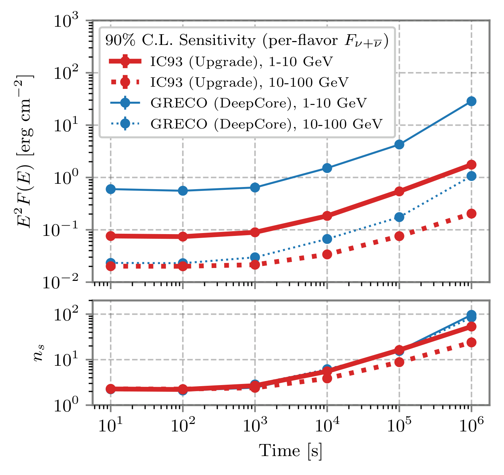<br />
图注：Sky-averaged per-flavor sensitivity of the IC93 sample and GRECO dataset as a function of the observation time window. The sensitivity is evaluated in two energy bins, 1--10\,GeV (solid lines) and 10--100\,GeV (dotted lines), assuming a source spectral index of $\gamma=2.0$.<br />
对应解读：3. 瞬变源灵敏度随时间窗 \(\Delta t\) 的图<br />
入选理由：这张图直接把观测时间窗和灵敏度放在一起，并分成 1--10 GeV 与 10--100 GeV 两个能段，最能支撑“短时标、低能段提升接近一个数量级”的核心结论。<br />
来源与置信度：\(arxiv_source\)；high；\(arxiv_source\) / apssamp.tex:figure[4]</p>
<p><strong>Fig10</strong><br />
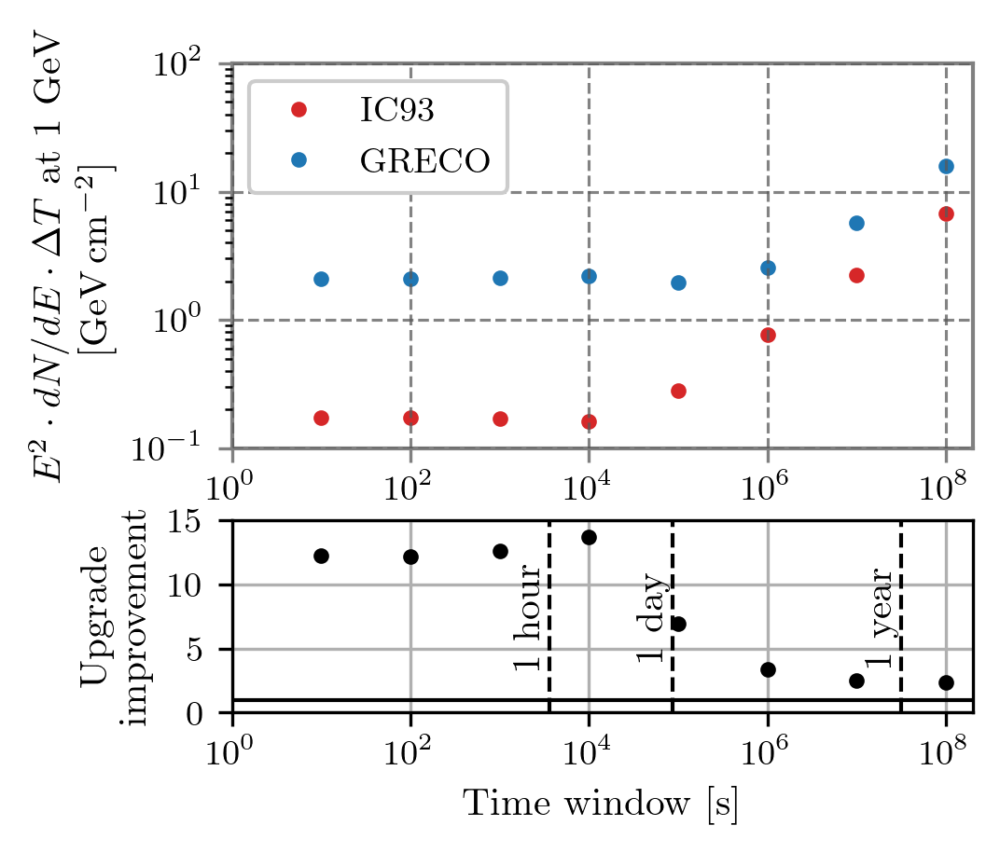<br />
图注：Sensitivity from direction of NGC 1068 at spectral index of 3.4 for both datasets across different time windows. The event cuts for the NGC 1068 analysis described in \(\Cref{sec:Framework_overview}\) are used. An increase corresponds to a transition from a background-free regime to a background-dominated regime.<br />
对应解读：5. NGC 1068 的时间窗灵敏度与背景体制转变<br />
入选理由：它专门展示 NGC 1068 在不同时间窗下的灵敏度变化，并标出从背景自由到背景主导的转折，比单纯给上限曲线更能解释升级收益来自哪里。<br />
来源与置信度：\(arxiv_source\)；high；\(arxiv_source\) / apssamp.tex:figure[10]</p>
<p><strong>Fig11</strong><br />
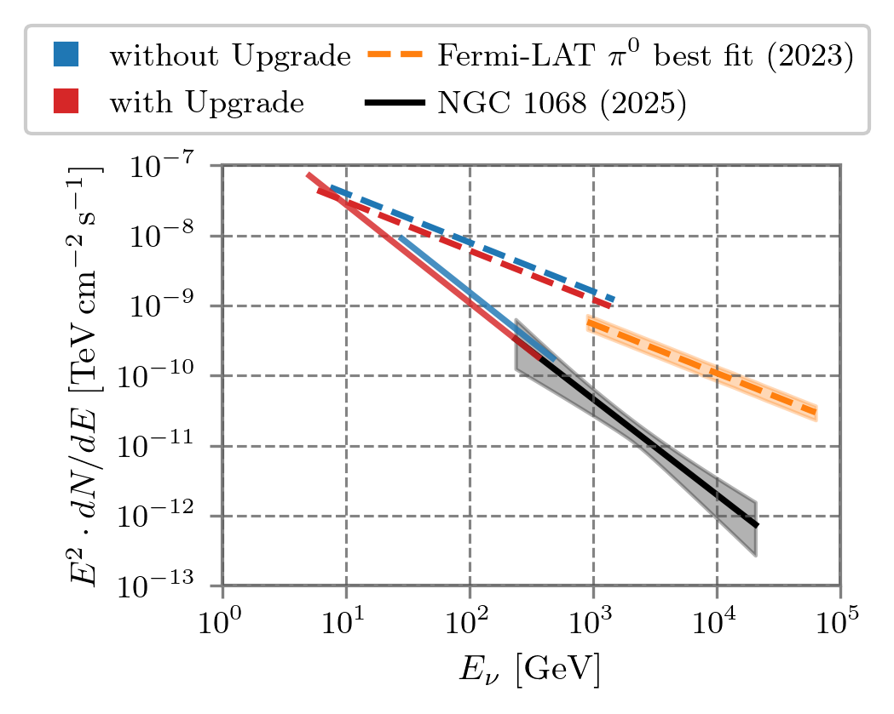<br />
图注：Comparison of projected IceCube Upgrade sensitivities (red) compared to the existing detector (blue) with published best-fit fluxes for NGC 1068 (black)~\(\cite{IceCube:NGC1068_FollupUp}\) and the GP ($\pi^0$ template, orange)~\(\cite{GP_Science_Paper}.\) The GP flux is spatially integrated over the entire $\pi^0$ template. The sensitivity values correspond to the performance after four years of the IceCube Upgrade operation from~\(\Cref{fig:steady_time_evolution},\) plotted as power laws over the sensitive energy range (central 90\,\% range in true neutrino energy) of the respective dataset configurations.<br />
对应解读：5. NGC 1068 与银河系弥散模板的升级前后对比<br />
入选理由：这张图同时给出 NGC 1068 和银河系弥散模板，并叠加已发表最佳拟合通量，最适合判断升级后灵敏度是否已经逼近真实天体信号而不只是统计改进。<br />
来源与置信度：\(arxiv_source\)；high；\(arxiv_source\) / apssamp.tex:figure[11]</p>
<p><strong>Fig03</strong><br />
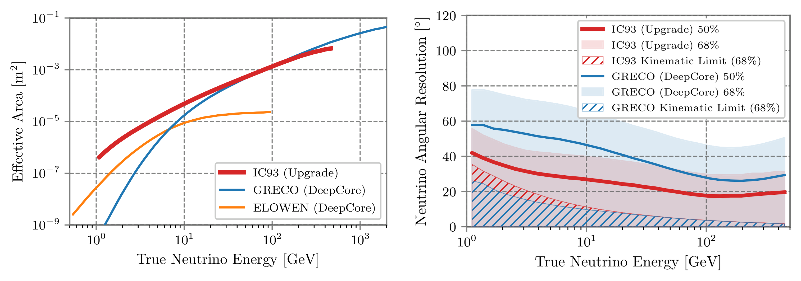<br />
图注：Key performance metrics of the IC93 sample and the existing DeepCore datasets.<br />
对应解读：2. 有效面积/重建性能等关键性能指标总览<br />
入选理由：虽然标题较概括，但它是 IC93 与现有 DeepCore 数据集的关键性能总览，最适合承接后面的灵敏度曲线，用来说明升级带来的底层性能差异。<br />
来源与置信度：\(arxiv_source\)；high；\(arxiv_source\) / apssamp.tex:figure[3]</p>
<p><strong>Fig08</strong><br />
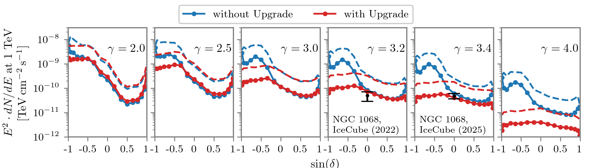<br />
图注：Projected 90\,\% C.L. sensitivity (solid) and $5\sigma$ discovery potential (dashed) as a function of source declination for various spectral indices. For spectral indices of $\gamma = 3.2$ and $\gamma = 3.4$, the best-fit flux from~\(\cite{IceCube:NGC1068,IceCube:NGC1068_FollupUp}\) is plotted in black for comparison.<br />
对应解读：4. 点源灵敏度随谱指数 \(\gamma\) / 赤纬 \(\delta\) 的图<br />
入选理由：这张图把 90% 灵敏度和 5\(\sigma\) 探测潜力按赤纬与谱指数展开，最能检验软谱源和南天区域是否获得更强提升，并包含对 NGC 1068 的直接对照。<br />
来源与置信度：\(arxiv_source\)；high；\(arxiv_source\) / apssamp.tex:figure[8]</p>
<p><strong>Fig01</strong><br />
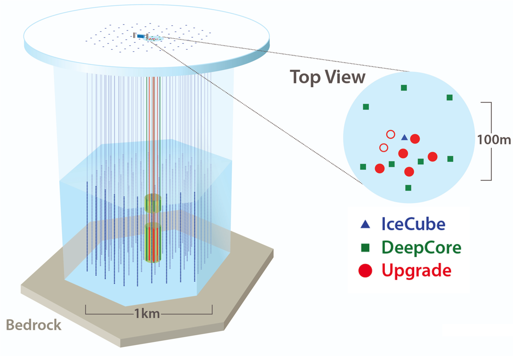<br />
图注：Detector overview of existing IceCube (blue) and DeepCore (green) as well as the originally planned IceCube Upgrade (red) geometry, with open circles indicating missing strings in the final configuration.<br />
对应解读：1. 升级阵列与旧阵列的几何/响应对比图<br />
入选理由：它清楚展示旧 IceCube、DeepCore 和 Upgrade 的相对几何与致密化布局，是理解多 PMT 模块如何改善低能采样和局部命中的最直观背景图。<br />
来源与置信度：\(arxiv_source\)；high；\(arxiv_source\) / apssamp.tex:figure[1]</p>
<h4 id="_34">强相关工作</h4>
<p>这篇文章属于典型的“仪器升级的科学回报投影”工作，最接近的是 IceCube 既有的点源搜寻、瞬变中微子搜寻和银河平面弥散中微子分析。你可以用这些关键词继续查：\(\)“IceCube transient neutrino search”\(\)、\(\)“IceCube point source sensitivity”\(\)、\(\)“IceCube Galactic plane diffuse neutrinos”\(\)、\(\)“DeepCore low-energy neutrino reconstruction”\(\)。这些工作提供了升级前的基线，也解释为什么低能背景抑制会成为决定性因素。</p>
<p>从更宽的语境看，这篇文章和所有关于新探测器性能投影的论文都在回答同一件事：硬件升级到底是把已有分析做得更漂亮，还是能真正打开新物理窗口。对 IceCube Upgrade 来说，最值得对比的同类工作是“同一源类、同一分析框架、但不同 detector configuration”的论文，以及那些讨论低能阈值、南天背景和软谱灵敏度的分析。检索时可以同时搜“upgrade sensitivity”, “low-energy neutrino astronomy”, “multi-PMT optical module”, “South Pole ice background rejection”。</p>
<p><strong>同一事件 / 同类源线索</strong>：</p>
<ul>
<li><a href="https://arxiv.org/abs/2608.28395">https://arxiv.org/abs/2608.28395</a></li>
</ul>
<p><strong>相似工作</strong>：</p>
<p>（未提供）</p>
<p><strong>基础理论 / 方法工作</strong>：</p>
<p>（未提供）</p>
<p><strong>相反观点 / 张力线索</strong>：</p>
<p>（未提供）</p>
</details>
<h3 id="4-reassessing-the-contribution-of-long-grb-high-energy-afterglows-to-the-isotropic-gamma-ray-background-after-grb-221009a">4. Reassessing the contribution of long-GRB high-energy afterglows to the isotropic gamma-ray background after GRB 221009A</h3>
<ul>
<li>来源：arXiv / astro-ph.HE</li>
<li>链接：https://arxiv.org/abs/2608.28448v1</li>
<li>作者：S. V. Troitsky</li>
<li>评分：novelty 8/10，importance 8/10，relevance 9/10，final 9.35/10</li>
<li>推荐理由：GRB 221009A 高能余辉对 IGRB 贡献的更新约束，直接涉及 GRB、GeV-TeV 伽马和背景辐射问题，和高能天文高度相关。</li>
</ul>
<p><strong>中文题目</strong>：在 GRB 221009A 之后重新评估长暴高能余辉对各向同性伽马射线背景的贡献</p>
<p><strong>做了什么</strong>：这篇文章用 GRB 221009A 的时积分高能余辉作为模板，把其锚定到已观测到的 GeV–TeV 数据，再按长暴总体的能量与束射几何去外推，重新估算长暴对 Fermi-LAT 各向同性伽马射线背景的贡献。结论很明确：即使考虑多 TeV 余辉经外星系背景光吸收后产生的级联辐射，贡献也只有 \(1.6\times10^{-4}\)；把直接 GeV 辐射也加进去，最高也不过 \(1.1\times10^{-3}\)，离“显著来源”还差得很远。</p>
<p><strong>为什么重要</strong>：GRB 221009A 曾让人重新思考“极端亮的长暴会不会改写伽马射线背景预算”这个问题；这篇工作把这个直觉用定量方式压回去了。它的重要性在于把一个极端事件的 TeV 探测，和整体宇宙伽马射线背景的能量账本联系起来，说明单个超亮事件并不自动意味着类群贡献会变大。</p>
<p><strong>理论 / 观测 / 仪器方法价值</strong>：对理论上，它约束长暴高能余辉、外星系级联和族群积分模型的组合空间；对观测上，它给 Fermi-LAT 背景分解提供了更硬的上限；对方法上，它展示了如何把一个标志性事件的谱模板推广到宇宙学总体。对做高能背景、GRB 人口合成、或级联传播的人来说，这是一篇会影响“该不该把长暴放进主要背景预算”判断的文章。</p>
<p><strong>为什么应该关注</strong>：如果你关心 IGRB 的起源、GRB 的辐射机制、或 TeV 光子在宇宙中的传播，这篇文章都值得看。它不是在讲一个更亮的爆发现象本身，而是在告诉你：哪怕有了 GRB 221009A 这种级别的证据，长暴仍然很难成为 IGRB 的主贡献者，这会直接影响后续模型和观测提案的优先级。</p>
<details class="paper-detail">
<summary>展开详细解读：文章讲解、背景、理论、重点章节、图表与相关工作</summary>
<h4 id="_35">文章详细讲解</h4>
<p>这篇文章回答的核心科学问题是：既然 GRB 221009A 已经观测到多 TeV 余辉，那么把这种极端高能辐射推广到整个长暴族群后，是否足以显著抬高 Fermi-LAT 看到的各向同性伽马射线背景。作者关心的不是“单个爆发能量有多大”，而是“把所有长暴在宇宙时间上积分以后，能不能把背景预算吃掉一块明显份额”。这类问题的关键在于，极亮事件并不一定代表高发生率；真正决定背景贡献的是事件亮度函数、红移分布、束射修正以及传播损失的综合结果。</p>
<p>作者没有重新做一套复杂的辐射传输模拟，而是采用“模板外推”的思路：先用 GRB 221009A 的时积分高能余辉谱作为经验模板，再把这个模板按长暴的提示量进行人口平均。这个模板已经由 GeV–TeV 数据锚定，因此比单纯凭理论假设的余辉谱更接近真实。随后作者显式引入了随提示能量变化的标度关系，以及束射因子修正，把单个事件的观测量转成对全体长暴的期望贡献。这样做的好处是透明、可替换、便于做系统误差扫描。</p>
<p>结果部分最重要的结论是：只看级联分量时，长暴对 IGRB 的贡献只有 \(1.6\times10^{-4}\)；即使把直接的 GeV 发射也算进去，最大也只有 \(1.1\times10^{-3}\)。这个数值比“显著贡献”的直觉小了至少三个数量级，说明 GRB 221009A 的 TeV 亮度并不会把长暴整体抬成 IGRB 的主来源。作者还检查了外星系背景光模型、传播实现、内禀谱截止和族群处方的变化，结论都保持稳定，说明这个判断不是某个参数选得太激进才得到的。</p>
<p>这篇工作的局限也很清楚：它依赖一个极端事件作为模板，因此对“典型长暴高能余辉”是否真能用 GRB 221009A 表征，仍然保留了模型外推的不确定性。其次，直接 GeV 分量的上限更依赖人口平均模板，而这部分对余辉谱形、时间积分窗口和束射结构都更敏感。下一步最需要的是更多长暴在 GeV–TeV 段的统计样本，以及更统一的族群模型，才能把这种上限从“基于单个标志性事件的保守结论”推进到“由样本统计支撑的精确定量结论”。</p>
<h4 id="_36">关键结果是怎么做出来的</h4>
<p>本文最核心的结果不是一个拟合参数，而是一个宇宙学积分后的分数上限。作者先把 GRB 221009A 的时积分高能余辉当作模板，利用其已经被 GeV–TeV 数据约束的谱能分布，得到一个可直接用于人口外推的高能输出谱。然后把这个模板与长暴的提示能量分布、束射修正和红移分布卷积，计算全体长暴对 IGRB 的平均贡献。这个过程本质上是“单事件谱模板 + 人口合成 + 宇宙传播”的三步链条。</p>
<p>文中最关键的数字是两组分数：级联分量占 IGRB 的 \(1.6\times10^{-4}\)，加入直接 GeV 辐射后最高到 \(1.1\times10^{-3}\)。这两个数都远低于 \(1\)，所以结论不是“贡献偏小一点”，而是“从数量级上就不可能是主要来源”。换句话说，即便 GRB 221009A 是一个足够极端的例子，长暴总体仍然离“解释 IGRB”差得很远。作者用这种分数而不是绝对通量，是为了直接和 Fermi-LAT 的 IGRB 测量比较，避免不同能段和单位带来的混淆。</p>
<p>数据选择上，真正的“样本”其实是 GRB 221009A 这一个标志性事件的时积分余辉，再加上文献中常用的长暴人口处方。文章并不是在某个爆发样本上做传统拟合，而是在一个锚定事件上做模板归一化，然后把该模板推广到总体。这样的设计让结果对单个事件的高质量观测非常敏感，但对总体统计来说则受限于人口模型的外推假设。正因为如此，作者还测试了外星系背景光、传播实现和内禀谱截止的变化，检查结论是否会被某种过于乐观的模板抬高。</p>
<p>如果从统计诊断的角度看，文章用的是“模型预测与观测背景的比值”这一最直接的判据，而不是复杂的显著性检验。由于最终预测值比观测背景低了 \(10^{3}\) 到 \(10^{4}\) 倍，哪怕模型参数在合理范围内晃动，结论都不会翻转。因此这篇文章的稳健性不是来自某个高 \(\sigma\) 发现，而是来自极大的数量级间隔。读图时应该重点看模板谱、级联谱、直接 GeV 谱和 IGRB 观测带之间的相对高度，而不是寻找微小残差。</p>
<p>主要系统误差也很明确：第一，GRB 221009A 是否真能代表长暴余辉的高能尾部；第二，束射角与提示能量之间的经验标度是否稳定；第三，级联传播对 \(\tau_{\gamma\gamma}\) 的细节依赖；第四，Fermi-LAT IGRB 的能段定义和本底分解是否与作者采用的积分方式一致。作者逐项改变这些输入后，结论都没有变成“长暴可以主导 IGRB”。这说明文章最有价值的地方是把一个本来容易被极端事件带偏的判断，压回到保守而清楚的数量级界限。</p>
<details class="paper-subdetail">
<summary>展开背景、理论、公式、模型、章节和图表导读</summary>
<h4 id="_37">背景知识</h4>
<p>长暴是大质量恒星塌缩后形成中心引擎、喷流并伴随强烈瞬变辐射的一类爆发现象。它们在软伽马到高能伽马波段释放巨大能量，短时间内的光度极高，但单次事件的能量释放能否积累成宇宙背景，要看事件率、光度函数和传播损失，而不只是看最亮的那一例。很多人会把“能看到 TeV”直接联想到“类群总贡献一定不小”，这其实是最容易犯的直觉错误。<br />
IGRB 是 Fermi-LAT 观测到的、在剔除已知点源和银河系前景后剩下的各向同性伽马射线部分。它的来源本来就很复杂，可能包括未分辨的活动星系核、星系形成活动、暗物质相关信号、以及各类瞬变源的累积辐射。因为 IGRB 的能谱和角分布都对源族群模型很敏感，所以任何声称“某类瞬变能解释多少背景”的工作，都必须把红移演化、选择效应和传播吸收算进去。</p>
<p>高能伽马在传播过程中会被外星系背景光吸收，形成 (\gamma\gamma\<br />
ightarrow \(e^{+}e^{-}\)) 过程，然后再经逆康普顿散射产生二次伽马，这就是级联辐射。很多背景预算最容易漏掉的，就是“原初高能光子不直接到达，而是在更低能段重新分配能量”。这也是为什么用 GRB 221009A 做模板很关键：它的 TeV 检测不仅告诉你源端能发出多高能的光，也告诉你有多少能量可能在传播中沉到 GeV 段。<br />
GRB 221009A 之所以重新点燃这个话题，是因为它在高能端异常明亮，甚至在多 TeV 段都被看见。于是自然会有人问：既然有这么极端的长暴，那是不是说明长暴群体对 IGRB 的累积贡献比旧估计更大。本文之所以值得重看，就是因为它把这个问题从“个案震撼”拉回到“族群积分”上，提醒我们观测上最耀眼的事件，往往并不能代表背景预算中的主导项。</p>
<h4 id="_38">基础理论 / 方法脉络</h4>
<p>这篇文章背后的第一层物理图像是余辉辐射。喷流与周围介质相互作用后形成激波，带电粒子在磁场中同步辐射，并可能通过逆康普顿散射把光子抬到更高能段。对本文来说，关键不是微观辐射机制的全部细节，而是时积分后的高能输出谱是否可以作为一个稳定模板，用来代表同类爆发在 GeV–TeV 波段的总体能量分布。</p>
<p>第二层物理是传播中的吸收与级联。高能伽马穿越宇宙时会遇到外星系背景光，满足阈值条件后就会产生电子对，导致原初高能通量被削弱。产生的电子和正电子又会通过逆康普顿散射把部分能量转移到更低能的伽马波段，所以最终观测到的不是原谱本身，而是被传播“重塑”过的谱。这一过程决定了为什么多 TeV 探测和 GeV 背景之间会有直接联系。</p>
<p>第三层是人口合成。要算长暴对 IGRB 的总贡献，不能只看一个源，而要把整个宇宙中的发生率、红移分布、光度函数和束射修正积分进去。这里的核心假设通常是：单个源的高能输出可以写成某个模板乘上一个随提示能量变化的标度因子，再对源族群做卷积。该做法在天体粒子和瞬变背景预算里很常见，但最容易出现的退化是“模板太亮但事件率太低”与“模板普通但事件率很高”之间的抵消。</p>
<p>第四层是观测定义。IGRB 不是理论上的“所有伽马总和”，而是 Fermi-LAT 在特定能段、经过点源和银河前景剥离后留下的残差背景。因此模型和观测比较时，必须处理能段积分、响应函数和前景处理的一致性。常见误区是把某个源类的绝对总能量和 IGRB 直接对比，却忽略了能段、红移损失和未分辨源选择效应；本文正是在这些地方做了更保守的处理。</p>
<h4 id="_39">公式与推导</h4>
<p>先从宇宙学背景强度的标准写法出发。对任意源族群，其观测到的单位能量强度可以写成</p>
<div class="math-display">\[I_E = \frac{c}{4\pi} \int_0^{z_{\max}} \frac{\mathcal{R}(z)}{H(z)(1+z)} \\, \frac{dN}{dE'}(E' ; z) \\, e^{-\tau(E',z)} \\, dz,\]</div>
<p>其中 \(I_E\) 是单位能量的背景强度，\(\mathcal{R}(z)\) 是发生率密度，\(H(z)\) 是哈勃参数，\(E' = E(1+z)\) 是源端能量，\(\tau(E',z)\) 是传播光学深度。</p>
<p>如果把单个长暴的高能余辉写成模板 \(S(E')\)，那么人口平均后可写为</p>
<div class="math-display">\[\frac{dN}{dE'}(E'; z) = A\\,S(E')\\,g(E_{\rm p,iso})\\,f_b^{-1},\]</div>
<p>其中 \(A\) 是归一化常数，\(g(E_{\rm p,iso})\) 表示与提示辐射等各向同性能量 \(E_{\rm p,iso}\) 相关的标度项，\(f_b\) 是束射因子。这里的关键假设是：单个源的谱形可由模板代表，而人口差异主要体现在振幅上。</p>
<p>束射几何通常可用</p>
<div class="math-display">\[f_b = 1 - \cos\theta_j \approx \frac{\theta_j^2}{2}\]</div>
<p>来近似，其中 \(\theta_j\) 是喷流半张角。这个近似在窄喷流极限下成立，说明观测到的亮事件只是总族群中的一小部分方向选择结果。若不做这个修正，就会把“看到的亮度”误当成“真实总能量”。</p>
<p>传播中的吸收可以用未被吸收和被吸收部分来拆分：</p>
<div class="math-display">\[F_{\rm obs}(E) = F_{\rm int}(E) e^{-\tau(E,z)} + F_{\rm cas}(E),\]</div>
<p>其中 \(F_{\rm int}\) 是本征通量，\(F_{\rm cas}\) 是级联再辐射。级联能量预算可粗略写成</p>
<div class="math-display">\[F_{\rm cas} \propto \int dE'\\,F_{\rm int}(E')\bigl[1-e^{-\tau(E',z)}\bigr],\]</div>
<p>表示被吸收掉的高能部分有多少被重新分配到了较低能段。</p>
<p>要和 Fermi-LAT 的 IGRB 直接比较，可以定义分数贡献</p>
<div class="math-display">\[f_{\rm IGRB}(E) = \frac{I_{\rm GRB}(E)}{I_{\rm IGRB}^{\rm obs}(E)},\]</div>
<p>或者做能段积分后的比值</p>
<div class="math-display">\[f_{\rm IGRB} = \frac{\int_{E_1}^{E_2} I_{\rm GRB}(E)\\,dE}{\int_{E_1}^{E_2} I_{\rm IGRB}^{\rm obs}(E)\\,dE}.\]</div>
<p>这就是本文最终给出 \(1.6\times10^{-4}\) 和 \(1.1\times10^{-3}\) 这类结论的直接量化方式。</p>
<p>若要把模板归一化到 GRB 221009A 这样的锚定事件，通常会写成</p>
<div class="math-display">\[S(E) = N_0 \left(\frac{E}{E_0}\right)^{-\Gamma} \exp\\!\left(-\frac{E}{E_{\rm cut}}\right),\]</div>
<p>其中 \(\Gamma\) 是谱指数，\(E_{\rm cut}\) 是内禀截止能量。这里的物理含义是：模板形状由高能余辉机制和传播吸收共同决定，而归一化 \(N_0\) 则由已观测到的 GeV–TeV 数据固定。</p>
<p>如果进一步考虑模型比较，可以用简单的残差平方和或对数似然写成</p>
<div class="math-display">\[\ln\mathcal{L} = -\frac{1}{2} \sum_i \frac{\bigl[I_i^{\rm obs} - I_i^{\rm model}\bigr]^2}{\sigma_i^2},\]</div>
<p>其中 \(i\) 标记能段或数据点，\(\sigma_i\) 是观测误差。本文的核心不是把某组参数做出高显著性，而是检验在合理参数范围内是否存在把 \(f_{\rm IGRB}\) 推到显著水平的可能性。</p>
<p>最后，若传播、模板和族群处方都有不确定性，可以把它们写成超参数集合 \(\boldsymbol{\theta}\)，并研究</p>
<div class="math-display">\[f_{\rm IGRB} = f_{\rm IGRB}(\boldsymbol{\theta}).\]</div>
<p>本文的结论等价于：在合理的 \(\boldsymbol{\theta}\) 扫描下，\(f_{\rm IGRB}\) 仍然远小于 \(1\)，所以长暴对 IGRB 的主导性不成立。</p>
<h4 id="_40">模型拟合 / 应用方法</h4>
<p>这篇文章严格说不是传统意义上的“对很多数据点做联合拟合”，而是“用一个高质量事件定标，再做族群前向建模”。因此它的拟合对象首先是 GRB 221009A 的时积分高能余辉模板，其次才是把这个模板外推到整体长暴人口后的背景贡献。最关键的参数不是某个单独谱指数，而是模板归一化、提示能量标度、束射修正和传播损失这些共同决定最终分数的量。</p>
<p>在这种框架下，最重要的参数退化来自两个方向。其一是模板更亮但有效发生率更低，和模板较暗但族群数更多之间的补偿；其二是内禀谱在高能端更硬，但传播吸收更强，从而最终到达观测端的谱未必更大。作者通过改变外星系背景光、传播实现和内禀谱截止来检查这些退化是否能把结果推到不同结论。答案是否定的，这说明模型对这些变化不是临界敏感型，而是稳健地处在“远低于 IGRB”的区域。</p>
<p>如果把它写成统计问题，观测量可以是按能段分箱后的背景强度 \(I_i^{\rm obs}\)，模型量是 \(I_i^{\rm model}(\boldsymbol{\theta})\)。标准做法是最小化</p>
<div class="math-display">\[\chi^2(\boldsymbol{\theta}) = \sum_i \frac{\bigl[I_i^{\rm obs} - I_i^{\rm model}(\boldsymbol{\theta})\bigr]^2}{\sigma_i^2},\]</div>
<p>或者在更严谨的情况下用带系统误差项的联合后验。本文更像是在做上限判断，因此重点不在于把 \(\chi^2\) 做到某个“最优”，而在于确认没有任何合理 \(\boldsymbol{\theta}\) 能让贡献接近 \(1\)。</p>
<p>系统误差主要来自四类：GRB 221009A 的代表性、喷流几何、背景光模型以及传播代码。对于前两项，问题是你是否把一个极端高亮事件当成了普遍模板；对于后两项，问题是不同 \(\tau(E,z)\) 计算方案是否会显著改变被吸收能量重新分配到 GeV 的效率。作者逐项替换这些输入后，分数贡献仍然停留在 \(10^{-4}\) 到 \(10^{-3}\) 的区间，这使得结论对系统误差相当耐受。</p>
<p>实际应用上，这种拟合和前向建模方式很适合做源族群预算、背景源分解和未来观测规划。它告诉你：如果目标是解释 IGRB 的主成分，长暴不是优先级最高的候选；如果目标是研究极端高能余辉及其传播后果，GRB 221009A 仍然是极好的锚定样本。换句话说，这不是“长暴没有 TeV 物理”，而是“TeV 物理再强，也不等于能在宇宙平均背景里占主导”。</p>
<h4 id="_41">重点章节 / 结果段落怎么读</h4>
<p>引言部分主要做了两件事：先回顾 GRB 221009A 的多 TeV 观测为什么会引发“背景贡献是否被低估”的问题，再说明 IGRB 是一个必须通过族群积分来解释的宇宙学量。读这一段时要抓住作者的核心立场：他不是怀疑 TeV 探测本身，而是反对把单个极端事件直接放大成整体背景结论。</p>
<p>方法或模板部分是全文的骨架。这里应该重点看作者如何把 GRB 221009A 的时积分高能余辉写成可外推模板，以及这个模板如何和提示能量、束射因子、红移分布相连。若正文里有公式或流程图，这部分就是你判断模型假设是否过强的地方：模板是经验的还是理论的，标度关系是线性的还是幂律的，束射修正有没有显式写进去。</p>
<p>结果部分通常会分成“级联分量”和“直接 GeV 分量”两条线。读的时候要特别注意这两条线的相对大小，因为它们对应不同的物理链条：级联受传播和吸收主导，直接 GeV 更依赖本征谱和模板平均。作者最终给出的 \(1.6\times10^{-4}\) 与 \(1.1\times10^{-3}\) 就是把这两条线同时摆上桌面后的结论。</p>
<p>稳健性检验部分很关键，往往比主结果更能说明问题。这里应该看外星系背景光模型切换、传播实现替换、内禀谱截止变化和人口处方改变后，贡献分数是否仍然稳定远低于 \(1\)。如果这些测试都通过，那就说明文章真正的价值不是“得到了一个精确值”，而是“证明了即使在保守或偏乐观的输入下，长暴仍难以成为 IGRB 主来源”。</p>
<h4 id="_42">建议重点查看的图表</h4>
<ol>
<li>GRB 221009A 的时积分高能余辉模板图：重点看 GeV–TeV 数据点、拟合谱形、内禀截止和是否有清晰的归一化锚定。</li>
<li>长暴人口合成后的平均谱与 IGRB 观测带对比图：重点看模型曲线与 Fermi-LAT 背景带之间的数量级差距。</li>
<li>级联分量与直接 GeV 分量的拆分图：重点看两条曲线的相对高度，以及吸收后能量是否主要沉到 GeV 段。</li>
<li>不同外星系背景光模型下的敏感性图：重点看 \(\tau(E,z)\) 变化后结果是否只做小幅平移。</li>
<li>不同谱截止或谱指数假设下的扫描图：重点看模型是否存在能把贡献推到接近 \(1\) 的极端角落。</li>
<li>红移积分或发生率权重图：重点看高红移事件是否因为 EBL 吸收而被强烈压低。</li>
<li>与观测 IGRB 的比值图：重点看最终分数是否在 \(10^{-4}\) 到 \(10^{-3}\) 量级稳定停留。</li>
</ol>
<h4 id="_43">关键图表逐图导读</h4>
<p>图 1：通常应是 GRB 221009A 的模板谱或光谱能量分布。横轴一般是能量 \(E\)，纵轴是 \(E^{2}dN/dE\) 或通量。这里要看的是模板是否真的由 GeV–TeV 数据点锚定，而不是靠外推硬接出来；如果有误差带，还要看高能端是否留有大不确定区间。</p>
<p>图 2：通常应是人口平均后对 IGRB 的预测谱。横轴仍是 \(E\)，纵轴是背景强度 \(I_E\) 或其分量。最关键的是模型曲线与观测 IGRB 带之间的数量级距离；如果两者之间隔了两到三个数量级，就说明结论不是“略低于观测”，而是“根本不在同一个预算层级”。</p>
<p>图 3：通常会拆成级联分量和直接 GeV 分量。读这张图时要看哪一部分主导总和，以及级联峰值是否出现在预期的 GeV 区域。常见陷阱是只看总曲线而忽略拆分后每个物理环节的能量流向；真正决定论文结论的是吸收后再辐射到底抬高了多少。</p>
<p>图 4：通常是参数扫描或系统误差比较图，比如不同 EBL 模型、不同内禀截止、不同传播实现的结果叠加。这里不要只看中心线，更要看曲线束的宽度和是否发生秩序颠倒。若所有合理假设下的曲线都远低于 IGRB，那就是稳健结论；若只有某个极端模型稍微接近，需要特别警惕。</p>
<p>图 5：若有红移或发生率权重图，要看高红移端是否被吸收压扁，以及本地宇宙的少数亮事件是否主导积分。对于这篇文章来说，一个常见读图误区是把“少数极亮源的局部峰值”误认为“总体背景贡献”。真正应关注的是积分后的面积，而不是单点峰高。</p>
<p>图 6：若有最终比值图 \(f_{\rm IGRB}(E)\)，则应看它在整个能段上是否始终远小于 \(1\)。如果它只是在某个窄能段略有抬升，但积分后仍极小，那么那并不改变文章的总体判断。</p>
</details>
<h4 id="_44">论文原图 / 可嵌入图片</h4>
<p><strong>Fig02</strong><br />
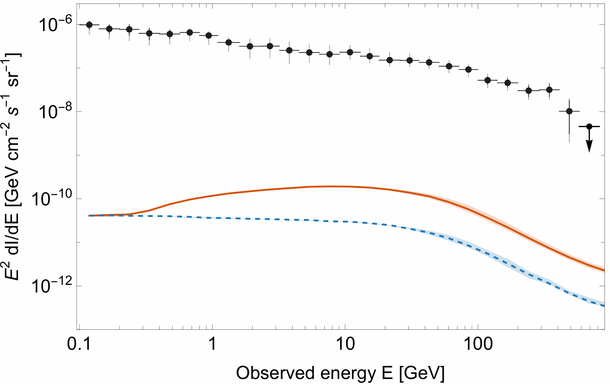<br />
图注：Long-GRB contribution to IGRB compared with the Fermi-LAT model-A (black) measurements \(\citep{Ackermann2015}.\) The GS cascade-only result shown in blue (dashed) is less model dependent than the direct-plus-cascade total (orange). Each shaded band is the envelope for the Salda\~na--Lopez central, low, and high EBL densities. Black inner error bars contain the model A published non-foreground uncertainties; gray outer bars also include the Galactic foreground range.<br />
对应解读：建议重点查看的图表2、3；关键图表逐图导读中的“长暴人口合成后的平均谱与 IGRB 观测带对比图”以及“级联分量与直接 GeV 分量的拆分图”。<br />
入选理由：这张图直接给出长暴对 IGRB 的总贡献，并把 cascade-only 与 direct+cascade 两种结果同时放在 Fermi-LAT IGRB 观测带旁边，最能支撑“数量级远低于背景”的核心结论。黑色观测带、误差棒和两条模型曲线的对照非常直观，是全文最关键的结果图。<br />
来源与置信度：\(arxiv_source\)；high；\(arxiv_source\) / \(grb_igrb.tex\):figure[2]</p>
<p><strong>Fig01</strong><br />
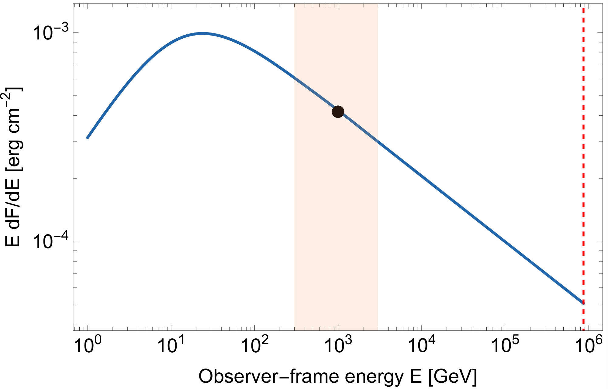<br />
图注：Reference GRB~221009A intrinsic fluence template. The GeV--sub-TeV shape is based on Fermi spectral fits \(\citep{Axelsson2025}\); the single normalization (black dot) and the VHE tail use the reconstructed intrinsic 0--2000~s fluence, anchored primarily by WCDA below approximately 3~TeV, with KM2A and Carpet-3 providing high-energy consistency information \(\citep{LHAASO2023,LHAASOKM2A2023,Carpet3_2025,SatuninTroitsky2026}.\) The two spectral segments are smoothly joined in the pink band. The dashed line illustrates the cutoff of 1~PeV in the source galaxy frame (0.869~PeV in the observer frame for GRB~221009A).<br />
对应解读：建议重点查看的图表1；关键图表逐图导读中的“GRB 221009A 的时积分高能余辉模板图”。<br />
入选理由：这张图是后续人口外推的唯一锚点，展示 GeV–sub-TeV 数据点、平滑拼接的模板谱以及 1 PeV 截止假设，直接决定模型归一化和高能尾部形状。相比一般示意图，它把“单个极端事件如何被用于族群建模”讲得最清楚。<br />
来源与置信度：\(arxiv_source\)；high；\(arxiv_source\) / \(grb_igrb.tex\):figure[1]</p>
<p><strong>Fig03</strong><br />
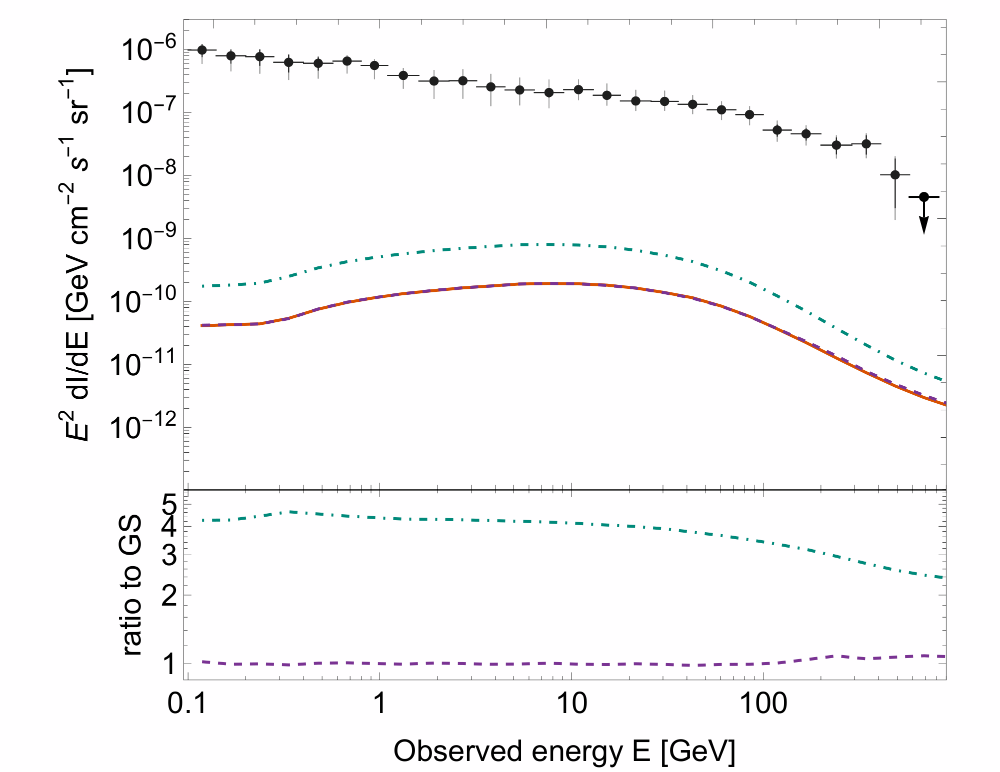<br />
图注：Model variations of the direct-plus-cascade total. The GS plus Salda\~na--Lopez curve (orange, solid) is the baseline. The Finke curve (violet, dashed) changes only the EBL, whereas PSYCHE (green, dash-dotted) changes the population history and the normalization assigned to a typical burst. The lower panel shows ratios to the GS baseline. Fermi-LAT symbols are as in Fig.~\(\ref{fig:result}.\)<br />
对应解读：建议重点查看的图表4、5；关键图表逐图导读中的“不同外星系背景光模型下的敏感性图”以及“不同谱截止或谱指数假设下的扫描图”。<br />
入选理由：这张图把不同 EBL 方案、人口历史和归一化处方造成的变化并列展示，还给出下方面板比值，最适合判断结论是否对系统误差敏感。它比单一主结果图更能说明“无论怎么改，结果都没法逼近 IGRB”。<br />
来源与置信度：\(arxiv_source\)；high；\(arxiv_source\) / \(grb_igrb.tex\):figure[3]</p>
<p><strong>Fig04</strong><br />
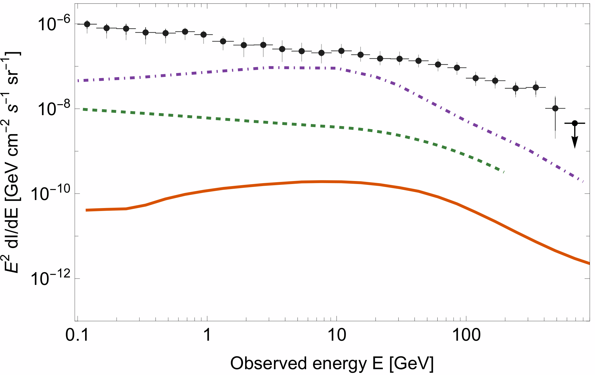<br />
图注：Comparison with earlier spectral calculations. Shown are the GS total from this work (orange), the Casanova et al.\ prompt plus scattered sum (violet dot-dashed), the Murase et al.\ model-A primary-plus-delayed total (green dashed), and Fermi-LAT IGRB model A as in Fig.~\(\ref{fig:result}.\) The integrated result of Ando et al., for which no corresponding spectrum was published, is compared in the text.<br />
对应解读：模型拟合段落中的“与既有谱计算对照”部分。<br />
入选理由：这张图将本文结果与此前不同文献的谱计算放在同一坐标系里，便于读者判断本文更新后的结论在文献谱系中的位置。虽然它不是主结论图，但对说明本工作的相对改进和稳健性仍然有价值。<br />
来源与置信度：\(arxiv_source\)；high；\(arxiv_source\) / \(grb_igrb.tex\):figure[4]</p>
<p><strong>Fig05</strong><br />
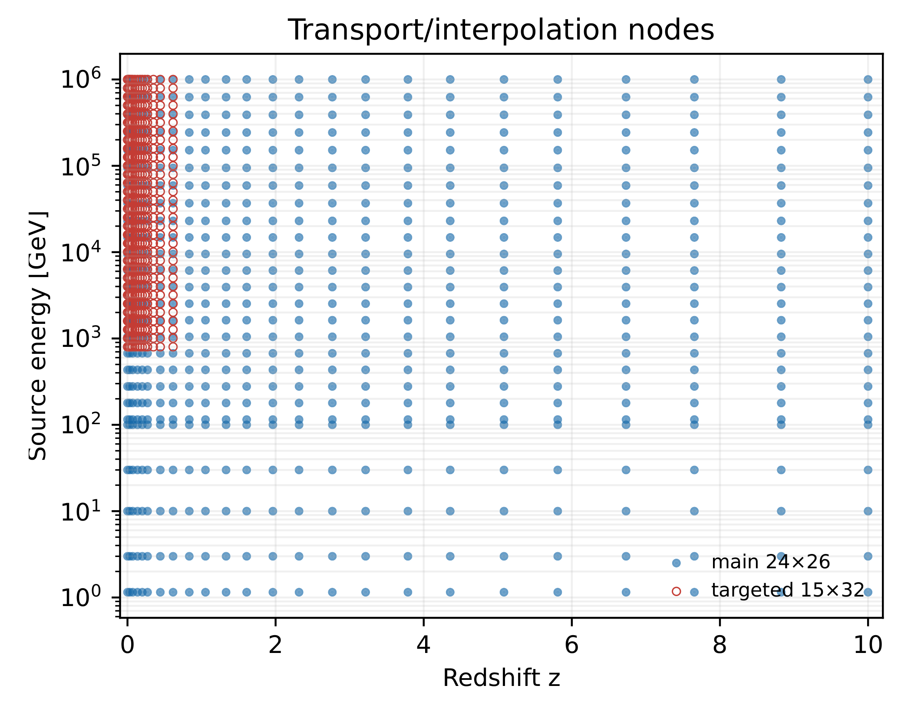<br />
图注：Source redshift--energy support of the CRbeam response library. The blue points show the main grid of 24 redshifts and 26 source energies; the red points show the targeted high-energy extension with 15 redshifts and 32 source energies. Nodes at \(z>6\) are used only in sensitivity and validation calculations; the baseline cosmological fold is restricted to \(z\leq6\).<br />
对应解读：模型拟合/传播实现验证段落中的“红移与源能量响应库覆盖范围”说明。<br />
入选理由：这张图主要展示 CRbeam 响应库的红移—能量采样网格，更偏方法学验证而非结果展示。它能说明传播计算的覆盖范围和高红移扩展处理，但对日报中最需要的物理结论支撑力度弱于前四张。<br />
来源与置信度：\(arxiv_source\)；high；\(arxiv_source\) / \(grb_igrb.tex\):figure[5]</p>
<h4 id="_45">强相关工作</h4>
<p>这篇工作和 GRB 221009A 的同事件研究是直接相连的，尤其是关于多 TeV 探测、高能余辉谱形、以及外星系背景光吸收的论文。它还和“GRB 对伽马射线背景的贡献”这一类族群合成工作相接，后者通常会把长暴、短暴、活动星系核和星暴星系放在同一预算框架里比较。读这篇文章时，不要把它看成单一爆发的观测分析，而要把它看成对整个背景来源分解的一次更新。</p>
<p>与之相关的检索关键词包括：\(\)“GRB 221009A TeV afterglow”、\(\)“long GRB contribution to IGRB”、\(\)“extragalactic gamma-ray background from GRBs”、\(\)“EBL cascade gamma-ray background”、\(\)“Fermi-LAT isotropic gamma-ray background population synthesis”。如果要找同类或对照文献，可以继续搜“prompt-energy scaling of GRB afterglow”、“beaming correction in GRB diffuse background”、“electromagnetic cascade from VHE GRBs”。</p>
<p><strong>同一事件 / 同类源线索</strong>：</p>
<ul>
<li><a href="https://arxiv.org/abs/2608.28448v1">https://arxiv.org/abs/2608.28448v1</a></li>
</ul>
<p><strong>相似工作</strong>：</p>
<p>（未提供）</p>
<p><strong>基础理论 / 方法工作</strong>：</p>
<p>（未提供）</p>
<p><strong>相反观点 / 张力线索</strong>：</p>
<p>（未提供）</p>
</details>
<h3 id="5-magnetospheric-birefringence-breaks-the-rotating-vector-model-and-depolarises-x-ray-pulsars">5. Magnetospheric birefringence breaks the rotating-vector model and depolarises X-ray pulsars</h3>
<ul>
<li>来源：arXiv / astro-ph.HE</li>
<li>链接：https://arxiv.org/abs/2608.27699v1</li>
<li>作者：Alexander A. Mushtukov, Sergey S. Tsygankov, Silvia Zane, Nabil Brice, Ruth M. E. Kelly, Roberto Taverna, Roberto Turolla</li>
<li>评分：novelty 8/10，importance 8/10，relevance 8/10，final 9.00/10</li>
<li>推荐理由：X 射线脉冲星偏振传播效应的关键物理结果，解释观测到的低偏振和位置角异常，是高能致密天体偏振研究的重要进展。</li>
</ul>
<p><strong>中文题目</strong>：磁层双折射会打破旋转矢量模型并使吸积 X 射线脉冲星去极化</p>
<p><strong>做了什么</strong>：这篇文章用广义相对论射线追踪和 Stokes 参量输运，说明吸积 X 射线脉冲星的磁层不是“透明背景板”。从紧致极区发出的光子在传播过程中，会先后穿过真空双折射主导区和带有等离子体的吸积流，因而在不同光线上积累不同的偏振角偏移。结果是：原本应当较整齐叠加的偏振矢量被打散，整体线偏振度下降，偏振角摆幅也会偏离经典旋转矢量模型的预期。</p>
<p><strong>为什么重要</strong>：它直接回应了一个越来越现实的问题：为什么很多 X 射线脉冲星的偏振观测没有给出“教科书式”的高偏振度和简单角度摆动。</p>
<p><strong>理论 / 观测 / 仪器方法价值</strong>：理论上，这篇工作把磁层传播效应正式纳入偏振转移链条；方法上，它把广义相对论光线传播、QED 双折射和等离子体正常模相位差统一到同一套可观测框架里。</p>
<p><strong>为什么应该关注</strong>：如果你关心如何用 IXPE 一类偏振数据反推中子星磁场、几何和吸积流结构，这篇文章的核心提醒是：只拟合发射区几何往往不够，传播过程本身也会重塑最终看到的偏振信号。</p>
<details class="paper-detail">
<summary>展开详细解读：文章讲解、背景、理论、重点章节、图表与相关工作</summary>
<h4 id="_46">文章详细讲解</h4>
<p>这篇文章要解决的核心科学问题是：为什么吸积 X 射线脉冲星在经典图像下本应显示很强的线偏振，却在最新偏振观测里经常只看到中等偏振度，甚至偏振角摆动也不沿着旋转矢量模型走。作者把矛头从“发射是否高度偏振”推进到“传播是否会洗掉偏振”这一层，强调极区到远处观测者之间的磁层并不只是几何投影，而是会主动改写 Stokes 矢量的介质。</p>
<p>作者采用的是一套前向建模：先给定紧致极区的发射几何，再在广义相对论时空里追踪光线，并沿每条光线同时演化偏振态。关键不是单看某个局部点的偏振，而是比较整束光线在经过磁层后如何重新分布偏振角，以及这些角度差如何在积分后压低总线偏振度。换句话说，作者不是在拟合一条曲线，而是在测试“发射区相干叠加”这个老假设在真实磁层里还能不能成立。</p>
<p>关键结果有两条。第一，接近磁场方向传播的光线会穿过真空双折射区域里的非绝热口袋，从而在局部失去对正常模的绝热跟随；第二，若光线穿过被吸积流加载的等离子体区域，还会额外积累两个正常模之间的相位差。两种效应都会把不同射线的偏振角拉开，最终在热点积分后造成明显去极化，并且让偏振角相位曲线偏离旋转矢量模型。作者的结论不是“偏振本来就弱”，而是“传播可以把原本较强的局域偏振显著洗淡”。</p>
<p>这项工作的物理含义很直接：很多过去用来解释偏振低、角度乱的论证，可能过度强调了发射区复杂性，而低估了磁层传播的作用。对观测者来说，这意味着相位分辨偏振不再只是磁轴投影的几何量，而是发射、传播、积分三者共同作用的结果。只要极区足够紧致、磁场足够强、视线又恰好掠过容易发生非绝热转换的区域，经典的旋转矢量模型就会系统失真。</p>
<p>这篇文章的局限也很清楚：它主要是在理想化几何和数值光线束中展示机制，而不是对某个具体脉冲星做全参数反演。下一步最重要的是把这个传播模块接到具体源的观测拟合里，同时更细致地处理不同能段、不同脉冲相位、吸积流密度结构和发射高度的不确定性。真正有价值的检验，不是看“能不能画出一条漂亮曲线”，而是看加入磁层传播后，能否统一解释偏振度、偏振角和脉冲轮廓三者之间原本互相打架的约束。</p>
<h4 id="_47">关键结果是怎么做出来的</h4>
<p>这不是一篇事件样本论文，所以没有“多少个源”或“多少个光子事件”的统计口径；它的证据链来自数值实验和对照计算。作者固定一组代表性的吸积极区与磁场几何，再把光线束从发射面一路追踪到远处观测者。最关键的设计是做“开关实验”：在相同发射条件下，分别只保留真空双折射、只保留等离子体相位效应、以及两者同时存在，从而把每一种传播机制对最终偏振的独立贡献分离出来。</p>
<p>真正被检验的量不是单个局域偏振，而是整束光线合成后的 \(\Pi_{\mathrm{L}}\) 和 \(\chi\) 的分布。对每条光线，作者会在传播后得到一个输出 Stokes 向量，再在热点和脉冲相位上求和，观察 \(Q\) 和 \(U\) 是否还能相干叠加。与其说这里的“显著性”来自传统的 \(N_\sigma\) 事件计数，不如说来自前后对照中 \(\Pi_{\mathrm{L}}\) 的系统性下降，以及 \(\chi\) 分布从窄峰变成宽峰甚至偏斜分布的效果大小。</p>
<p>最重要的结果是两种传播机制都会制造射线依赖的偏振角偏移，但来源不同。对于接近磁力线方向的轨迹，真空双折射区域里会出现局部非绝热口袋，使正常模跟随失效；对于穿过吸积流的轨迹，等离子体的折射率差会在两种正常模之间累积额外相位。前者更像“局部突然失配”，后者更像“沿途不断堆积的相位滑移”，而两者叠加后最直接的可观测后果就是热点积分后的去极化和偏振角摆动的系统偏离。</p>
<p>如果按结果链条来读，最该盯住的是展示偏振角散布、线偏振度降低和与旋转矢量模型比较的那几组图。读图时不要只看平均曲线，要看光线束的角度直方图、不同参数下的 \(\Pi_{\mathrm{L}}\) 压低程度，以及哪些区域对应最大偏移。系统误差主要来自磁层密度分布、热点大小、发射高度和视线几何的退化；稳健性检验的重点也不是单一参数微调，而是看结论是否在一整片合理参数空间里都成立。</p>
<p>从方法学上说，这篇工作的“结果”更像一个可复用的传播模块，而不是一次性结论。它告诉你：只要把广义相对论光线传播、真空双折射和等离子体模演化连起来，就很容易得到与经典旋转矢量模型不同的相位依赖偏振信号。若未来把这一模块接到真实观测拟合里，最有可能提升的不是某一个单独参数，而是对整套几何与传播共同退化关系的理解。</p>
<details class="paper-subdetail">
<summary>展开背景、理论、公式、模型、章节和图表导读</summary>
<h4 id="_48">背景知识</h4>
<p>吸积 X 射线脉冲星的基本图景是：中子星的强磁场把吸积等离子体导向磁极附近，形成热点或柱状辐射区。由于磁场强到足以显著改变辐射截面，局域辐射往往在不同正常模之间呈现强烈的偏振选择性，所以早期理论普遍预期，在低于回旋共振能段时会看到较高的线偏振度。</p>
<p>经典的几何解释来自旋转矢量模型：如果辐射主要由一个或两个紧致极区发出，那么随着中子星自转，观测到的偏振角应该跟磁轴在天空平面的投影同步旋转。这个模型在脉冲星射电偏振里极其成功，因此很多人自然把它迁移到 X 射线脉冲星上。但一个常见误区是把“发射时的偏振态”直接等同于“最终观测到的偏振态”，忽略了光子还要穿过极强磁场和等离子体环境。</p>
<p>近年的 X 射线偏振观测，尤其是相位分辨测量，已经开始系统暴露这种简化的不足。很多源并没有显示出特别高的偏振度，偏振角摆动也常常比经典模型更复杂，甚至在某些相位段出现与直觉不一致的跳变或滞后。这并不一定意味着极区发射理论错了，更可能说明传播过程在重写偏振信息，导致观测端看到的是“发射”和“传播”的叠加结果。</p>
<p>这个问题现在值得重新看，是因为观测精度终于开始逼近理论上必须考虑的效应层级。过去偏振数据太少、误差太大，大家可以用简单几何模型糊过去；现在随着高质量偏振测量出现，任何忽略磁层双折射、真空与等离子体竞争、以及广义相对论光线弯曲的模型，都会在 \(\Pi_{\mathrm{L}}\) 和 \(\chi\) 上留下系统残差。领域里最常见的误区，就是把偏振低误判成“源本身不极化”，或者把偏振角异常误判成“磁轴几何一定很怪”，而不是先检查传播是否已经把信号重塑了。</p>
<h4 id="_49">基础理论 / 方法脉络</h4>
<p>偏振可以用 Stokes 四量来描述，最基本的是总强度、两维线偏振分量和圆偏振分量。对很多 X 射线脉冲星问题来说，最关键的是线偏振，因为磁场和散射几何会优先选择两个线偏振正常模。局域发射区若足够小且几何稳定，多个光线的偏振矢量就会相干叠加，整体线偏振度可能很高；但只要不同光线的偏振角差异拉大，叠加后就会发生明显抵消。</p>
<p>在强磁场等离子体里，普通电磁波不再只看作单一模式，而是分解成两种本征传播模。真空极化会让空场本身也表现出双折射，等离子体则通过折射率和电导张量进一步修正两模传播速度。只要两模的波数不同，沿路径积累的相位差就会改变最终偏振态；而如果变化太快，系统就可能离开绝热跟随，导致模式转换或偏振角突变。</p>
<p>广义相对论在这里不是修饰项，而是几何输入。中子星附近光线会被弯曲，光束到达远处观测者时的出射方向、入射方向和局部磁场方向之间不再是简单平直空间里的几何关系。于是就算发射点的局域偏振态很整齐，经过不同弯曲路径后，各条光线在磁场坐标系里的相对取向也会不同，进一步放大偏振角的分散。</p>
<p>从观测分析角度看，最容易出问题的是把相位分辨偏振曲线直接解释成发射区投影。实际可观测量往往已经是多层积分：先在发射面上对空间分布积分，再沿磁层路径传播，再经过仪器响应和相位分箱。任何一步的退化都可能把不同物理机制混在一起，所以这类问题通常需要同时追踪 \(\Pi_{\mathrm{L}}\)、\(\chi\) 和脉冲轮廓，而不能只盯着某一个量。</p>
<h4 id="_50">公式与推导</h4>
<p>从最基本的偏振表述开始，可以把辐射写成 Stokes 向量：</p>
<div class="math-display">\[\mathbf{S}=\bigl(I,Q,U,V\bigr)^{\mathsf T}\]</div>
<p>其中 \(I\) 是总强度，\(Q\) 和 \(U\) 描述线偏振，\(V\) 描述圆偏振。对本文最相关的可观测量是线偏振度与偏振角，分别为 </p>
<div class="math-display">\[\Pi_{\mathrm{L}}=\frac{\sqrt{Q^2+U^2}}{I}\]</div>
<p>和 </p>
<div class="math-display">\[\chi=\frac{1}{2}\arctan\!\left(\frac{U}{Q}\right)\]</div>
<p>这里 \(\chi\) 的定义约定了角度的二倍简并，适合描述线偏振矢量在天空平面上的方向。</p>
<p>在传播过程中，Stokes 向量会沿路径 \(s\) 演化。对磁化介质而言，最一般的写法是 </p>
<div class="math-display">\[\frac{d\mathbf{S}}{ds}=\mathbf{K}(s)\,\mathbf{S}\]</div>
<p>其中 \(\mathbf{K}\) 是传输矩阵，包含双折射、吸收、模式耦合和法拉第旋转等信息。若把问题限制在线偏振主导的情形，可以把 \(\mathbf{K}\) 理解为在两种正常模之间不断重新分配相位和强度的算符，这正是磁层传播会“改写”偏振的数学核心。</p>
<p>两模之间最关键的是波数差 \(\Delta k\)。如果把折射率差写成 \(\Delta n\)，则有 </p>
<div class="math-display">\[\Delta k=\frac{\omega}{c}\,\Delta n\]</div>
<p>其中 \(\omega\) 是角频率，\(c\) 是光速。沿着光路积累的相位差就是 </p>
<div class="math-display">\[\Delta\Phi=\int \Delta k(s)\,ds\]</div>
<p>当 \(\Delta\Phi\) 变化足够平滑时，系统可以绝热地跟随局域正常模；反之，偏振态会在传播中发生非绝热跳变或部分“冻结”。</p>
<p>绝热性的判据可以用局域模轴变化率和模间分裂的比值来表述：</p>
<div class="math-display">\[\Gamma=\frac{\lvert \Delta k\rvert}{\lvert d\theta_{\mathrm{B}}/ds\rvert}\]</div>
<p>其中 \(\theta_{\mathrm{B}}\) 是局域磁场方向相对传播方向的夹角。若 \(\Gamma\gg 1\)，偏振通常能跟随本征模；若 \(\Gamma\sim 1\)，就会出现非绝热区，这正对应本文提到的“非绝热口袋”。因此，非绝热区不是经验描述，而是由 \(\Delta k\) 与几何变化率竞争决定的。</p>
<p>对整束光线的观测值来说，必须把发射面、路径传播和几何权重一起积分：</p>
<div class="math-display">\[\mathbf{S}_{\mathrm{obs}}=\int w(\alpha,\beta)\,\mathbf{T}(\alpha,\beta)\,\mathbf{S}_0\,d\alpha\,d\beta\]</div>
<p>其中 \(\mathbf{S}_0\) 是局域发射 Stokes 向量，\(\mathbf{T}\) 是从发射点到观测者的传播算符，\(w\) 是不同射线的几何权重，\(\alpha\) 和 \(\beta\) 可以理解为极区平面上的位置参数。只要不同射线的 \(\chi\) 被传播拉开，积分就会让 \(Q\) 和 \(U\) 的相干部分相互抵消。</p>
<p>如果把 \(\chi\) 的散布近似成高斯分布，线偏振度还可以被一个简单的压低因子刻画：</p>
<div class="math-display">\[\Pi_{\mathrm{L,obs}}\approx \Pi_{\mathrm{L,0}}\,e^{-2\sigma_{\chi}^2}\]</div>
<p>其中 \(\Pi_{\mathrm{L,0}}\) 是无传播散布时的本征线偏振度，\(\sigma_{\chi}\) 是偏振角弥散。这个式子虽然是近似，但非常直观：只要偏振角在光束内部稍微散开一点，叠加后的总偏振就会快速下降。</p>
<p>最后，经典旋转矢量模型给出的是磁轴投影随脉冲相位 \(\phi\) 的几何关系：</p>
<div class="math-display">\[\tan\bigl(\chi-\chi_0\bigr)=\frac{\sin\alpha\,\sin\phi}{\sin\zeta\,\cos\alpha-\cos\zeta\,\sin\alpha\,\cos\phi}\]</div>
<p>其中 \(\alpha\) 是自转轴与磁轴夹角，\(\zeta\) 是视线与自转轴夹角，\(\chi_0\) 是零点角。本文的核心意义就在于：一旦磁层双折射和等离子体相位累积足够强，观测到的 \(\chi(\phi)\) 就不再只由这个几何式控制，而是被传播项系统性扭曲。</p>
<h4 id="_51">模型拟合 / 应用方法</h4>
<p>这篇文章更像是前向建模而不是对某个观测样本做直接反演，但它隐含的拟合逻辑很清楚：先设定一个发射几何，再把传播参数扫一遍，最后看输出的 \(\Pi_{\mathrm{L}}\) 和 \(\chi\) 是否能接近真实脉冲星的偏振相位曲线。若真正拿去和数据对接，最自然的拟合量不是单独的偏振度，而是相位分辨的 \(I\)、\(Q\)、\(U\) 和 \(V\) 或它们导出的 \(\Pi_{\mathrm{L}}\)、\(\chi\) 联合分布。</p>
<p>参数退化会非常强。发射区更小、初始偏振更高、传播散布更弱，这三者都可能导向类似的观测 \(\Pi_{\mathrm{L}}\)；而更强的偏振角散布、更多的模式耦合、或更复杂的吸积流密度分布，也都可能产生相似的角度摆动。也就是说，只看 \(\chi\) 的一条相位曲线很容易把传播效应误判成几何效应，或者把几何效应误判成发射区各向异性。</p>
<p>如果进行正式后验估计，最好把几何参数与传播参数放进同一个似然里，同时处理仪器系统误差。对偏振数据来说，背景扣除、调制因子、相位分箱宽度和能段选择都会改变 \(Q\) 与 \(U\) 的误差椭圆；而对模型来说，热点半径、发射高度、磁场强度、等离子体负载和视线角度会共同决定最终的 \(\chi\) 偏移。读拟合结果时，不能只看最优值，还要看后验是否出现长尾、双峰或大面积近似等值谷。</p>
<p>实际应用上，这类模型最有价值的地方在于“解退化”。如果某个源在低能段表现出偏振度降低、在某些相位段出现非 RVM 式的角度偏移，那么单靠发射模型往往只能勉强拟合其中一部分；一旦加入磁层传播，就有机会把相位依赖、能量依赖和角度摆动统一起来。相反，如果传播模型也拟合不了数据，那才更有力地提示我们发射区几何、吸积流结构或辐射机制本身需要重新设计。</p>
<p>因此，这篇文章的拟合价值不在于给出一个终局参数表，而在于告诉观测者应该怎么设定模型族：先比较“无传播”“只有真空双折射”“只有等离子体相位差”“两者同时存在”这几层嵌套模型，再看哪些数据特征是由哪一层真正驱动的。这样的分层比较尤其适合相位分辨偏振，因为它能把“局域发射”与“磁层改写”拆开，从而让残差更有物理解释力。</p>
<h4 id="_52">重点章节 / 结果段落怎么读</h4>
<p>第一部分通常是问题提出与经典预期：这里最值得读的是作者如何回顾强磁场辐射的偏振选择性，以及为什么旋转矢量模型曾被视为自然基准。读这一段时要特别注意，作者并不是否认极区发射，而是在问“发射之后还会发生什么”。</p>
<p>第二部分是广义相对论射线追踪与 Stokes 输运的实现。这里是方法核心，读者要盯住坐标系、射线参数化、局域磁场方向如何定义、以及偏振基底如何沿着弯曲轨迹更新。只要这部分处理不严谨，后面的任何偏振角结果都不可信。</p>
<p>第三部分是两种磁层传播机制的物理分析：真空双折射中的非绝热口袋，以及穿过吸积流时的等离子体相位偏移。这里要重点看作者是否把两个效应分开演示，再展示它们叠加后的结果，因为这直接决定你能否理解去极化到底来自哪一项。</p>
<p>第四部分通常是数值结果与参数扫描。这里最该看的是 \(\Pi_{\mathrm{L}}\) 和 \(\chi\) 随视角、能段、光路或磁场几何的变化，而不是只看某一条“最好看”的曲线。好的结果图应该能显示出哪些区域容易非绝热，哪些参数会让偏振角分布明显变宽。</p>
<p>最后一部分一般是观测含义和总结。读这一节时不要把它当成简单结论重复，而要看作者如何把模型结果翻译成对真实脉冲星的解释框架：哪些观测特征更像传播效应，哪些仍然更像发射几何，哪些则提示还需要更完整的磁层结构。</p>
<h4 id="_53">建议重点查看的图表</h4>
<p>建议重点检查的图和表包括：几何示意图，看看视线、磁轴、热斑和磁层中双折射区的相对位置；偏振角在不同射线上的分布图，重点看是否出现宽化、偏斜或多峰；\(\Pi_{\mathrm{L}}\) 随脉冲相位或参数变化的曲线，看去极化发生在哪些相位；传播前后 \(Q\) 与 \(U\) 的对照图，观察相干叠加如何被破坏；非绝热参数 \(\Gamma\) 或相位差 \(\Delta\Phi\) 的空间热图，看“口袋”在哪里；与旋转矢量模型的比较图，看偏离发生在峰值还是斜率最大的相位段；参数扫描或稳健性表，看结论对热点大小、磁场强度和等离子体负载是否敏感。</p>
<h4 id="_54">关键图表逐图导读</h4>
<p>图1：如果是几何示意图，横轴通常不是数据轴，而是空间或相位几何关系。重点看磁轴、自转轴、视线和发射热点的相对夹角，以及哪些光线会穿过真空双折射主导区或吸积流。</p>
<p>图2：如果展示的是 \(\Gamma\) 或 \(\Delta\Phi\) 的空间分布，那么最关键的是色标上的高低区域是否沿近磁场方向聚集。读图时要找“非绝热口袋”是否只出现在少数轨迹上，还是覆盖了足够大的光束截面，从而足以显著拉低总偏振。</p>
<p>图3：如果是不同光线的 \(\chi\) 直方图或散点图，横轴通常是光线编号、入射角或脉冲相位，纵轴是偏振角。这里最容易犯的错是只看均值；真正该看的是分布宽度、尾部和是否出现双峰，因为这些直接决定 \(Q\) 与 \(U\) 的抵消程度。</p>
<p>图4：如果是 \(\Pi_{\mathrm{L}}\) 随相位的曲线，要重点比较“只发射不传播”和“加入磁层传播”两条线。低谷往往对应偏振角散布最大的相位段，而不是简单对应亮度最低或最高的位置，所以不能把强度峰和偏振峰机械对应。</p>
<p>图5：如果有和旋转矢量模型的对比图，最关键的是偏振角摆幅的斜率和零点偏移。看似小的相位偏移，往往意味着传播导致的系统旋转已经和几何投影叠加；而如果模型线与数据差异集中在峰前或峰后，那通常暗示不同路径的传播历史并不相同。</p>
</details>
<h4 id="_55">论文原图 / 可嵌入图片</h4>
<p><strong>Fig01</strong><br />
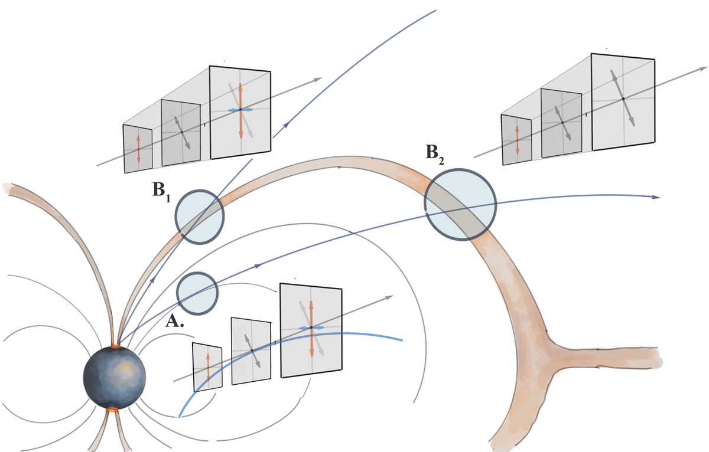<br />
图注：Schematic view of magnetospheric birefringence in an accreting X-ray pulsar. Photons emitted from the polar regions propagate through the birefringent magnetosphere before reaching the observer. In the standard vacuum picture, the polarisation follows the local magnetic field direction adiabatically until it freezes out. This picture can fail in two characteristic situations, illustrated here. (A) First, a photon propagating nearly parallel to the magnetic field can cross a local non-adiabatic pocket inside the QED adiabatic region. The polarisation then temporarily decouples from the instantaneous eigenmodes and acquires an offset relative to the projected magnetic field direction. When adiabatic tracking resumes, this offset contributes to depolarisation. (B) Second, a photon can cross the accretion flow. This may happen inside the QED adiabatic region (case B$_1$), in which case the flow rotates the polarisation state relative to the local vacuum eigenmodes. After the photon leaves the flow, projection back onto the QED eigenmodes produces mode mixing and additional depolarisation. Alternatively, (case B$_2$), if the flow is crossed after polarisation freeze-out, the plasma layer mainly acts as a birefringent retarder: it rotates or otherwise modifies the polarisation state of that ray, but does not by itself produce single-ray depolarisation.<br />
对应解读：建议重点查看的图表：几何示意图；关键图表逐图导读中的图1。<br />
入选理由：这张图直接定义了整篇文章的物理几何：磁轴、视线、热斑、QED 双折射区与吸积流的相对位置一目了然，是理解后续所有偏振角偏移与去极化机制的起点。<br />
来源与置信度：\(arxiv_source\)；high；\(arxiv_source\) / \(MNRAS_version.tex\):figure[1]</p>
<p><strong>Fig06</strong><br />
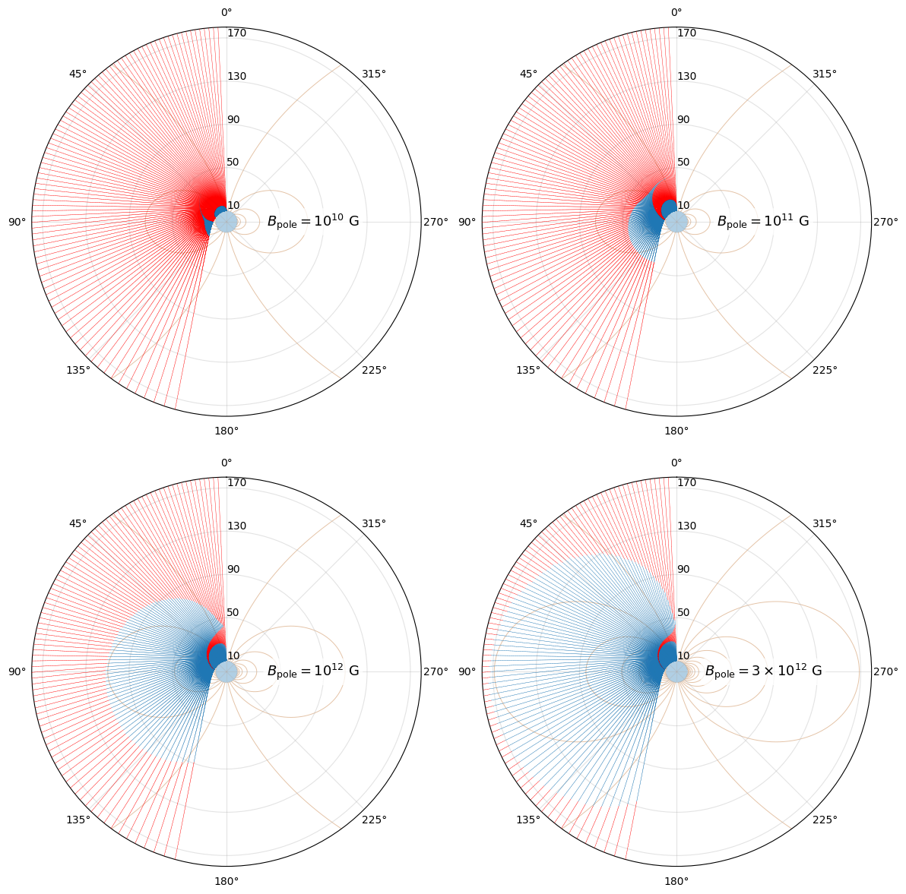<br />
图注：Trajectory-dependent geometry of the QED adiabatic and non-adiabatic propagation domains. The panels show trajectories of photons emitted from the magnetic pole of a NS and moving in a Schwarzschild spacetime for different polar magnetic-field strengths. Blue segments mark regions where the local adiabaticity criterion is satisfied and the polarisation follows the instantaneous QED eigenmodes tied to the projected magnetic field. Red segments mark regions where the criterion is violated and the polarisation is effectively frozen in the transport basis. The figure shows how the adiabatic domain is not a fixed spatial volume of the magnetosphere: its location and extent depend on the photon trajectory, in particular on the angle between the photon momentum and the local magnetic field. Non-adiabatic pockets arise naturally along ray families that become nearly aligned with the magnetic field, where $B_\perp\to0$ and birefringent splitting is suppressed.<br />
对应解读：建议重点查看的图表：非绝热参数Γ或非绝热口袋的空间分布；关键图表逐图导读中关于非绝热传播域的段落。<br />
入选理由：它最直接展示了“非绝热口袋”沿哪些光线路径出现，以及蓝/红分段如何随磁场强度变化，正对应论文的核心机制之一，比单纯的结果曲线更能解释去极化从何而来。<br />
来源与置信度：\(arxiv_source\)；high；\(arxiv_source\) / \(MNRAS_version.tex\):figure[6]</p>
<p><strong>Fig03</strong><br />
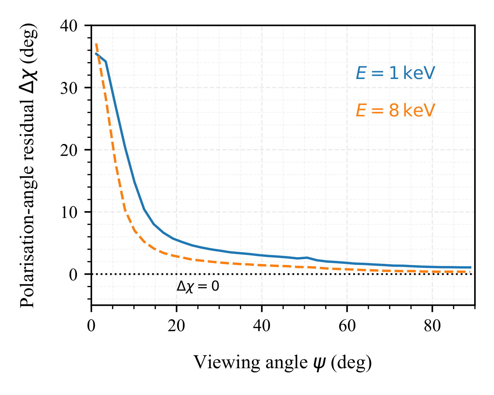<br />
图注：Deviation of the observed polarisation position angle from the RVM, $\Delta\chi=\chi-\chi_{\rm RVM}$, for an azimuthally asymmetric emitting region. The dotted line marks the RVM prediction for which $\Delta\chi=0$. The emitting region is a half-cap with $\theta_{\min}=0$ and $\theta_{\max}=0.1\,\mathrm{rad}$, with a fixed azimuthal orientation in the magnetic frame. For an azimuthally symmetric emitting region, the corresponding residual is close to zero because the ray-dependent polarisation-angle offsets largely cancel in the Stokes sum. In the asymmetric case shown here, this cancellation is incomplete, producing a coherent shift of the net polarisation angle. The residual is plotted as a function of the instantaneous viewing angle $\psi$; however, for an asymmetric emitting region it can in general also depend on the azimuthal orientation of the spot relative to the observer. Here we assume a dipole field with $B_{\rm p}=3\times10^{12}\,\mathrm{G}$, $100\%$ X-mode seed emission, and photon energies $E=1$ and $8\,\mathrm{keV}$.<br />
对应解读：关键图表逐图导读中的图3：与旋转矢量模型（RVM）比较的偏振位置角残差。<br />
入选理由：这张图直接给出Δχ=χ−χ_RVM，最能体现文章标题中的“breaks the rotating-vector model”；残差的相位依赖和系统偏移比只看平均偏振度更能说明传播效应的观测后果。<br />
来源与置信度：\(arxiv_source\)；high；\(arxiv_source\) / \(MNRAS_version.tex\):figure[3]</p>
<p><strong>Fig05</strong><br />
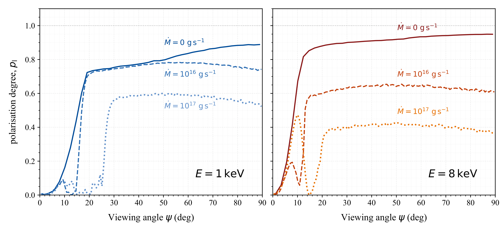<br />
图注：Effect of the magnetospheric accretion flow on the linear polarisation degree. The curves show the hotspot-integrated $p_{\rm l}$ as a function of viewing angle $\psi$, for a polar magnetic field $B_{\rm p}=10^{12}\,{\rm G}$ and hotspot size $\theta_{\max}=0.1\,\mathrm{rad}$. Left: $E=1\,{\rm keV}$. Right: $E=8\,{\rm keV}$. In each panel, solid, dashed and dotted curves correspond to $\dot M=0$, $10^{16}$, and $10^{17}\,{\rm g\,s^{-1}}$, respectively. The plasma-loaded accretion flow is assumed to be axisymmetric about the magnetic axis, so that its effect does not depend on the magnetic azimuth, as representative of the case of a purely aligned rotator.<br />
对应解读：建议重点查看的图表：Π_L随脉冲相位变化的曲线；关键图表逐图导读中关于相位分辨线偏振度的段落。<br />
入选理由：它清楚比较了加入/不加入磁层吸积流时的热点积分线偏振度曲线，是最适合向读者说明“传播会压低Π_L且改变相位依赖”的结果图之一。<br />
来源与置信度：\(arxiv_source\)；high；\(arxiv_source\) / \(MNRAS_version.tex\):figure[5]</p>
<p><strong>Fig04</strong><br />
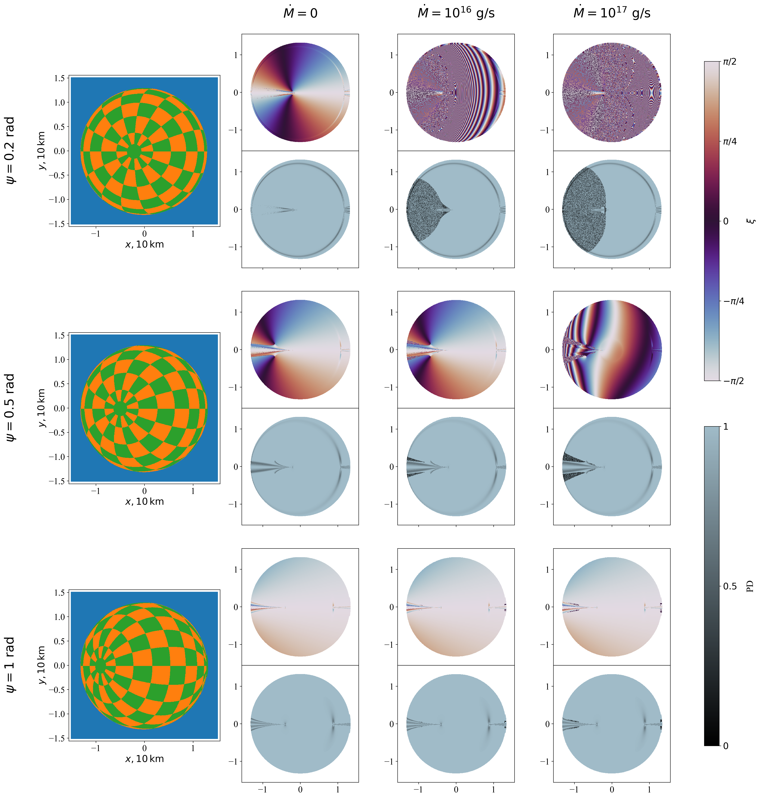<br />
图注：Image-plane polarisation diagnostics including propagation through the magnetospheric accretion flow. The maps are computed for a dipolar magnetic field with polar strength $B_{\rm p}=10^{12}\,{\rm G}$, a NS mass $M=1.4\,M_\odot$ and radius $R=10\,{\rm km}$. Seed photons are assumed to be $100\%$ linearly polarised in the X-mode. Rows correspond to different viewing angles $\psi$, and columns correspond to mass accretion rates $\dot M=0$, $10^{16}$, and $10^{17}\,{\rm g\,s^{-1}}$. For each case, the upper map shows the angle $\xi$ between the projected magnetic axis and the observed polarisation vector, while the lower map shows the propagation-induced reduction of the linear polarisation degree for photons emitted from each point of the NS surface. The case $\dot M=0$ gives the vacuum/QED reference calculation, whereas the cases with $\dot M>0$ include the additional plasma-birefringent effect of the accretion flow. Photons crossing the stream accumulate a phase lag between plasma normal modes, which changes the emergent Stokes vector in a ray-dependent way. The affected image-plane region grows with increasing $\dot M$ and is especially prominent for lines of sight close to the magnetic axis.<br />
对应解读：建议重点查看的图表：传播前后Q与U相关的图像平面对照；关键图表逐图导读中关于图像平面偏振诊断的段落。<br />
入选理由：这张图把不同视角和不同吸积率下的偏振矢量角与偏振度衰减投影到图像平面上，能直观看到哪些光线被流体相位滞后影响，空间诊断价值高于单条曲线。<br />
来源与置信度：\(arxiv_source\)；high；\(arxiv_source\) / \(MNRAS_version.tex\):figure[4]</p>
<p><strong>Fig08</strong><br />
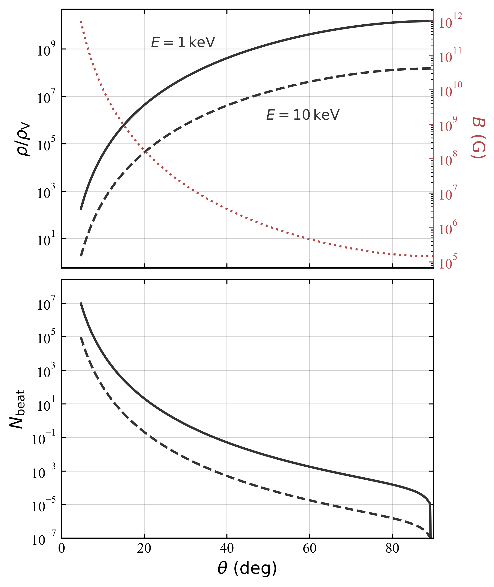<br />
图注：Plasma-dominated propagation in the magnetospheric accretion stream. Top panel: ratio of the local stream density to the vacuum-resonance density, $\rho/\rho_{\rm V}$, as a function of magnetic colatitude $\theta$ for $E=1\,{\rm keV}$ and $E=10\,{\rm keV}$. The dotted red curve shows the local magnetic-field strength. Where $\rho/\rho_{\rm V}\gg1$, the normal modes are controlled primarily by the plasma contribution to the dielectric tensor. Bottom panel: number of accumulated beat lengths $N_{\rm beat}$ for a photon crossing the magnetospheric accretion flow. The associated phase lag between the two plasma normal modes is $\Delta\Phi=2\pi N_{\rm beat}$, corresponding to a Faraday-like rotation $\Delta\chi=\pi N_{\rm beat}$ in the circular-mode limit. The model shown here uses $B_{\rm p}=10^{12}\,{\rm G}$ and $L=10^{37}\,{\rm erg\,s^{-1}}$.<br />
对应解读：建议重点查看的图表：相位差ΔΦ或等离子体传播累积量的热图/剖面；模型拟合与传播参数讨论段落。<br />
入选理由：它直接给出流区密度相对真空共振密度的比值以及累计拍长N_beat，对应等离子体正常模之间的相位差来源，是解释磁层传播为何会额外旋转或打散偏振态的关键证据。<br />
来源与置信度：\(arxiv_source\)；high；\(arxiv_source\) / \(MNRAS_version.tex\):figure[8]</p>
<h4 id="_56">强相关工作</h4>
<p>这篇工作属于吸积 X 射线脉冲星偏振理论与观测的同类研究，不是单一事件源分析。最相关的同类观测是 IXPE 对若干吸积脉冲星的相位分辨偏振测量；最相关的历史原型是旋转矢量模型，以及磁化等离子体中的模式传播与真空双折射研究。检索关键词可以用："accreting X-ray pulsar polarimetry"、"IXPE pulsar polarization"、"magnetized radiative transfer"、"vacuum birefringence neutron star magnetosphere"。</p>
<p>它和经典“高偏振度、简单角度摆动”的预期之间存在直接张力。近年的偏振数据提示实际源的 \(\Pi_{\mathrm{L}}\) 往往没有那么高，\(\chi\) 的相位行为也常偏离纯几何投影；这类张力正是本文想用磁层传播来化解的。检索关键词可以加上："rotating vector model breakdown"、"mode coupling in neutron star magnetospheres"、"plasma-loaded accretion column birefringence"、"polarization angle swing anomalies"。</p>
<p><strong>同一事件 / 同类源线索</strong>：</p>
<ul>
<li><a href="https://arxiv.org/abs/2608.27699v1">https://arxiv.org/abs/2608.27699v1</a></li>
<li><a href="https://arxiv.org/pdf/2608.27699">https://arxiv.org/pdf/2608.27699</a></li>
</ul>
<p><strong>相似工作</strong>：</p>
<p>（未提供）</p>
<p><strong>基础理论 / 方法工作</strong>：</p>
<p>（未提供）</p>
<p><strong>相反观点 / 张力线索</strong>：</p>
<p>（未提供）</p>
</details>
<h3 id="6-the-geometry-of-ultra-fast-outflows-probed-by-soft-x-ray-variability-in-pds-456">6. The Geometry of Ultra-Fast Outflows Probed by Soft X-ray Variability in PDS 456</h3>
<ul>
<li>来源：arXiv / astro-ph.HE</li>
<li>链接：https://arxiv.org/abs/2608.28034v1</li>
<li>作者：Riki Sato, Kouichi Hagino, Toshiya Iwata, Ehud Behar, Valentina Braito, Chris Done, Misaki Mizumoto, James N. Reeves</li>
<li>评分：novelty 8/10，importance 8/10，relevance 7/10，final 8.65/10</li>
<li>推荐理由：PDS 456 的超快外流几何约束，属于重要的 AGN 高能 X 射线风/反馈研究，方法上也较有可复用性。</li>
</ul>
<p><strong>中文题目</strong>：利用软 X 射线变异研究 PDS 456 中超快外流的几何结构</p>
<p><strong>做了什么</strong>：这篇文章用 \(2024\) 年 \(3\) 月 XRISM/Xtend 与 NuSTAR 的同步观测，比较 PDS 456 在耀发态和宁静态之间的差异谱，发现源系约 \(1\,\mathrm{keV}\) 处的软 X 射线结构明显变化，而硬 X 射线连续谱几乎不变。作者把这部分变化解释为一个部分覆盖的、较低电离的超快外流吸收体，得到 \(\log\!\bigl(\xi/(\mathrm{erg\,cm\,s^{-1}})\bigr)\simeq 3.1\) 和 \(v_{\mathrm{out}}\simeq 0.30c\)。再结合分时间片拟合中覆盖因子的变化，作者把遮挡变化转化成横向运动速度上限 \(v_{\mathrm{cross}}\lesssim 5\times 10^{-3}c\)，并推出吸收体距离 \(r\gtrsim 4\times 10^3R_g\)。</p>
<p><strong>为什么重要</strong>：它把超快外流研究从“有没有吸收线”推进到“风的几何和加速机制是什么”。如果软 X 射线的覆盖因子变化真的是吸收体横向扫过视线，那么谱变性就不只是电离变化，而是直接给出吸收体尺寸与位置。这样的方法对黑洞风、\(\)AGN 反馈以及未来 \(\)XRISM 类任务都很关键，因为它把时间分辨光谱变成了几何测量工具。</p>
<p><strong>理论 / 观测 / 仪器方法价值</strong>：这篇工作的价值在于把同步多卫星观测、模型无关差谱、宽带联合拟合和分时间片分析串成一条证据链。它说明即使没有极高分辨率的线谱，只要硬带能稳住连续谱、软带能抓住吸收变化，就可以从部分覆盖的变异反推风的空间结构。对方法学而言，它把“光谱拟合”推进成了“几何约束”，这比单次检测吸收特征更进一步。</p>
<p><strong>为什么应该关注</strong>：如果你关心黑洞风、\(\)AGN 反馈或 \(\)XRISM/NuSTAR 联合分析，这篇值得认真看。PDS 456 一直是 \(\)UFO 领域的标杆源，而这篇把同一源中不同电离相的速度—距离结构摆到台面上，直接检验风是更像自相似的 \(\)MHD 风，还是更像辐射加速或局域磁重联驱动的分层流。</p>
<details class="paper-detail">
<summary>展开详细解读：文章讲解、背景、理论、重点章节、图表与相关工作</summary>
<h4 id="_57">文章详细讲解</h4>
<p>科学问题：作者要回答的不是“PDS 456 里有没有超快外流”，而是“这个外流在空间上到底长什么样，软 X 射线里看到的变化来自什么几何”。此前同一源的高电离相已经把外流速度推到 \(\sim 0.3c\) 量级，但距离和几何仍然不清楚。这里的关键是利用软 X 射线变异，把吸收体是否在横向掠过视线、是否是单一连续风面，还是由多个电离相和多个半径层次组成，分辨开来。\n\n作者怎么做：他们用 \(2024\) 年 \(3\) 月 XRISM/Xtend 与 NuSTAR 的同步观测，先做模型无关的耀发态与宁静态比较，再做宽带联合拟合，最后把数据切成多个时间片跟踪参数演化。这样的设计很重要，因为软带的形状变化可能来自连续谱变硬、变软，也可能来自部分覆盖吸收体移动；而 NuSTAR 的硬 X 射线稳定性可以把连续谱自由度压住，避免把吸收变化误认成源本身的谱指数漂移。\n\n关键结果：在源系约 \(1\,\mathrm{keV}\) 附近，耀发态和宁静态之间出现显著的软 X 射线结构差异，但硬 X 射线段几乎没有同步变化。联合光谱拟合表明，这个结构最适合由一个部分覆盖的低电离 \(\)UFO 解释，其电离参数约为 \(\log\!\bigl(\xi/(\mathrm{erg\,cm\,s^{-1}})\bigr)\simeq 3.1\)，外流速度约为 \(v_{\mathrm{out}}\simeq 0.30c\)。更关键的是，分时间片后，变化主要体现在覆盖因子而不是 \(v_{\mathrm{out}}\) 本身，这支持“横向扫过视线”的几何图像。\n\n局限和下一步：这类结论仍然依赖几个几何假设，比如 X 射线源尺寸、吸收体是否近似团块、以及横向速度是否可用简单轨道速度近似。把 \(v_{\mathrm{cross}}\lesssim 5\times 10^{-3}c\) 转成 \(r\gtrsim 4\times 10^3R_g\) 也不可避免地带有模型因子。下一步最需要的是更多历元的同类观测、对不同电离相的联合跟踪，以及把软 X 射线变异和更高分辨率的线型信息结合起来，检验这种分层风是连续结构还是多个离散云团。</p>
<h4 id="_58">关键结果是怎么做出来的</h4>
<p>第一步证据来自模型无关比较：作者把同一次同步观测中的耀发态和宁静态分开，直接看差谱或比值谱，而不是先假定一个复杂模型。这样做的好处是能先确认“变化集中在何处”——这里变化集中在源系约 \(1\,\mathrm{keV}\) 的软 X 射线结构，而不是整个能段的连续谱整体平移。这个事实本身就提示变化更像吸收特征的打开和关闭，而不是单纯的源内辐射机制变了。\n\n第二步是宽带联合拟合。作者把 XRISM/Xtend 的软带和 NuSTAR 的硬带同时纳入，用一个尽量受控的连续谱去约束吸收体。由于硬带几乎不变，连续谱的斜率和归一化不需要被过度释放自由度，这样就能把 \(1\,\mathrm{keV}\) 附近的残差更稳地归因到吸收。拟合结果把软 X 射线结构解释为部分覆盖的低电离 \(\)UFO，其 \(\) \(\log \xi\) 与 \(v_{\mathrm{out}}\) 都与先前 PDS 456 中的高速外流相容，但电离状态明显不同。\n\n第三步是分时间片分析，这也是本文最关键的证据链。作者在多个时间片上重复拟合，发现最主要的变化落在覆盖因子上，而不是外流速度本身大幅漂移。这个结果非常重要，因为如果只是连续谱自身在摆动，通常会同时拖动软硬两端的光子指数或归一化；而这里硬带稳定、软带受遮挡强烈影响，更像一个有限横向尺寸的吸收体在运动。统计上，这种结论通常通过比较“把覆盖因子固定”和“让覆盖因子自由”两类模型的 \(\Delta\chi^2\) 或后验分布来确认。\n\n第四步是几何推断。作者把覆盖因子变化理解为吸收体横向扫过 X 射线源，先由变异时间尺度给出 \(v_{\mathrm{cross}}\) 的上限，再把这个速度与引力势中的特征速度联系起来，得到 \(r\) 的下限。这里的物理核心不是精确数值本身，而是逻辑链条：如果一个高速外流的线视速度是 \(v_{\mathrm{out}}\simeq 0.30c\)，但它在视线横向的扫描速度却只有 \(5\times 10^{-3}c\) 量级，那么它不太像一个简单的、处处自相似的径向风面，而更像已经被分层、偏离简单几何的流体结构。\n\n最后，作者把这个几何约束与已知的高电离相对比，指出两者 \(v_{\mathrm{out}}\) 相近，但半径差到 \(200\text{--}600R_g\) 对比 \(\gtrsim 4\times 10^3R_g\) 的量级。这个“同速不同半径”的结构就是整篇文章最有信息量的地方，因为它直接否定了某些过于理想化的自相似风图景，同时又不要求完全放弃磁驱或辐射驱动。换句话说，这不是“又发现一个吸收线”，而是“把风的几何层次拆出来了”。</p>
<details class="paper-subdetail">
<summary>展开背景、理论、公式、模型、章节和图表导读</summary>
<h4 id="_59">背景知识</h4>
<p>超快外流 \(\)UFO 是活动星系核里最受关注的风之一，典型特征是蓝移速度达到相当于光速的显著分数，并且常伴随强烈的电离吸收。对大质量黑洞来说，这类风可能是把辐射和角动量从吸积流里带走的主要通道之一，也可能是把动量注入宿主星系介质、影响星形成的反馈源。PDS 456 是这类研究里最重要的标杆源之一，因为它非常明亮，足以在多个能段同时看清连续谱和吸收结构。\n\n历史上，人们先是在硬 X 射线里抓到高电离的铁吸收特征，随后又逐渐意识到软 X 射线里也可能藏着更复杂的多相吸收。问题在于，软带里谱线拥挤、连续谱和吸收的退化也更强，所以“看见特征”并不等于“知道几何”。很多早期结论只给出速度和电离参数，却很难把吸收体放到一个可靠的半径范围内，更难判断它是连续风、离散云团还是视线上的局部扰动。\n\n这篇文章之所以现在值得重新看，和观测条件的变化有关。同步的广带观测可以把软带和硬带联系起来，避免单独看软带时把连续谱变化误判成吸收变化；同时，时间分辨分析又能把静态拟合推进到动力学推断。对 PDS 456 这种经典源来说，新的问题不再只是“是否存在外流”，而是“不同电离层、不同半径层、不同加速阶段之间是什么关系”。\n\n一个常见误区是把外流速度直接等同于发射或吸收位置。实际上，\(v_{\mathrm{out}}\) 只能告诉你流体沿视线的瞬时运动状态，不能单独决定 \(r\)。另一个误区是把软 X 射线上的局部下凹都当成某条强吸收线；在低分辨率或复杂光谱里，部分覆盖、边缘吸收、多个电离相叠加、以及连续谱变化都可能长得很像。正因为这些歧义长期存在，像本文这样把时变和宽带联合起来的工作才特别重要。</p>
<h4 id="_60">基础理论 / 方法脉络</h4>
<p>从最基础的图像看，超快外流可以被理解为从吸积盘附近被抛出的高温、高速、强电离气体。它在靠近黑洞时受到强辐射场和强引力场共同控制，沿视线会留下被蓝移的吸收特征；如果气体密度、离化程度或覆盖率变化，软 X 射线里尤其容易出现明显的谱形扭曲。对 PDS 456 这种高光度类星体来说，风的辐射力、磁力和几何投影都可能同等重要。\n\n描述这类气体最常用的量是电离参数 \(\xi\)，它衡量单位密度物质在给定辐射场下的离化程度。对于一个位于半径 \(r\) 处、数密度为 \(n\) 的吸收体，\(\xi\) 取决于电离光度 \(L_{\mathrm{ion}}\) 和几何稀释，因此能把“吸收线强不强”与“气体离中心多远”联系起来。与此同时，\(N_{\mathrm H}\) 这样的柱密度量则控制总光学深度，决定吸收是否足够强到在差谱里显形。\n\n部分覆盖的物理图像更适合本文的数据：并不是整个 X 射线源都被同一块气体完全遮住，而是只有一部分视线穿过吸收体，另一部分直达观测者。这样一来，覆盖因子 \(C_{\mathrm f}\) 的变化就会直接改写软带的残差形状，即使吸收体本身的电离状态和速度几乎不变。对于时间分辨光谱来说，\(C_{\mathrm f}\) 往往比 \(N_{\mathrm H}\) 或 \(\xi\) 更敏感地反映几何运动。\n\n最后，观测和理论之间的桥梁是数据分析逻辑。XRISM/Xtend 和 NuSTAR 的组合非常适合做这件事：前者盯住 \(1\,\mathrm{keV}\) 左右的软 X 射线结构，后者用硬带把连续谱锚住。只要硬带足够稳定，软带的变化就不容易被“连续谱变软”这种解释吞掉；反过来，如果硬带也跟着一起大幅变化，那部分覆盖模型就会和源内谱演化严重退化，这也是这类研究最常见的系统误差来源。</p>
<h4 id="_61">公式与推导</h4>
<p>第一步先写出部分覆盖的基本辐射传输关系。若源的本征连续谱是 \(F_0(E)\)，覆盖因子是 \(C_{\mathrm f}\)，吸收光学深度是 \(\tau(E)\)，则观测到的通量可写为</p>
<div class="math-display">\[F_{\mathrm{obs}}(E)=\left[1-C_{\mathrm f}\right]F_0(E)+C_{\mathrm f}F_0(E)e^{-\tau(E)}.\]</div>
<p>这里 \(E\) 是光子能量，\(1-C_{\mathrm f}\) 对应未被遮住的那部分视线，\(e^{-\tau(E)}\) 则表示穿过吸收体后的衰减。\n\n第二步把吸收光学深度与气体物理联系起来。若吸收体的柱密度为 \(N_{\mathrm H}\)，并且吸收截面随能量和离化状态变化，则可以写成</p>
<div class="math-display">\[\tau(E)=N_{\mathrm H}\\,\sigma(E,\xi).\]</div>
<p>这里 \(\sigma(E,\xi)\) 不是单一常数，而是包含束缚-束缚、束缚-自由以及边缘吸收的有效截面；当 \(\xi\) 增大时，低能处的吸收通常会减弱。\n\n第三步引入离化参数。若电离光度为 \(L_{\mathrm{ion}}\)，数密度为 \(n\)，吸收体到辐射源的距离为 \(r\)，则</p>
<div class="math-display">\[\xi=\frac{L_{\mathrm{ion}}}{nr^2}.\]</div>
<p>这个式子告诉你，给定 \(L_{\mathrm{ion}}\) 时，较大的 \(\xi\) 可能来自更小的 \(r\)，也可能来自更低的 \(n\)。因此，单凭离化参数并不能唯一决定位置，必须和柱密度、变异时间尺度一起看。\n\n第四步把时间变化与横向运动联系起来。若 X 射线源的有效线尺寸是 \(D_X\)，吸收体横扫视线的特征时间为 \(t_{\mathrm{var}}\)，则</p>
<div class="math-display">\[t_{\mathrm{var}}\sim \frac{D_X}{v_{\mathrm{cross}}},\qquad v_{\mathrm{cross}}\lesssim \frac{D_X}{t_{\mathrm{var}}}.\]</div>
<p>这里 \(v_{\mathrm{cross}}\) 是投影到源面上的横向速度上限。作者的思路正是用观测到的软带覆盖因子变化时间尺度去限制 \(v_{\mathrm{cross}}\)，而不是直接从谱线蓝移去推 \(r\)。\n\n第五步把横向速度转成半径下限。若最简单地把横向速度与局地轨道速度联系起来，即</p>
<div class="math-display">\[v_\phi\sim \sqrt{\frac{GM_{\mathrm{BH}}}{r}},\]</div>
<p>那么就有</p>
<div class="math-display">\[r\gtrsim \frac{GM_{\mathrm{BH}}}{v_{\mathrm{cross}}^2}=R_g\left(\frac{c}{v_{\mathrm{cross}}}\right)^2,\]</div>
<p>其中 \(M_{\mathrm{BH}}\) 是黑洞质量，\(R_g\equiv GM_{\mathrm{BH}}/c^2\) 是引力半径。这个关系给的是几何下限，前提是横向运动没有被更复杂的投影因素严重放大或缩小。\n\n第六步看质量流率和反馈意义。若流体在立体角 \(\Omega\) 内流动，近似柱密度为 \(N_{\mathrm H}\)，则质量外流率可估为</p>
<div class="math-display">\[\dot M_{\mathrm{out}}\sim \Omega\\, r\\, N_{\mathrm H}\\, m_p\\, v_{\mathrm{out}},\]</div>
<p>相应的动能通量为</p>
<div class="math-display">\[\dot E_k=\frac{1}{2}\dot M_{\mathrm{out}}v_{\mathrm{out}}^2.\]</div>
<p>这里 \(m_p\) 是质子质量，\(v_{\mathrm{out}}\) 是沿视线的外流速度。虽然本文的重点不在 \(\dot M_{\mathrm{out}}\) 的精确数值，但这些式子说明为什么知道 \(r\) 远比只知道 \(v_{\mathrm{out}}\) 更重要。\n\n最后，统计检验要落回数据拟合本身。若 \(D_i\) 是第 \(i\) 个谱道的数据，\(M_i\) 是模型预测，\(\sigma_i\) 是误差，则</p>
<div class="math-display">\[\chi^2=\sum_i\left(\frac{D_i-M_i}{\sigma_i}\right)^2,\]</div>
<p>而似然函数可写为</p>
<div class="math-display">\[\ln\mathcal{L}=-\frac{1}{2}\sum_i\left[\frac{(D_i-M_i)^2}{\sigma_i^2}+\ln\bigl(2\pi\sigma_i^2\bigr)\right].\]</div>
<p>比较“固定 \(C_{\mathrm f}\)”与“自由 \(C_{\mathrm f}\)”模型时，\(\Delta\chi^2\) 或后验分布的分离度，就是判断覆盖因子变化是否真的被数据需要的直接依据。</p>
<h4 id="_62">模型拟合 / 应用方法</h4>
<p>这篇文章的拟合核心不是堆很多成分，而是尽量把自由度压到与物理问题对应的最少集合。宽带模型通常先用一个平滑连续谱来描述中心引擎，再叠加吸收体参数 \(N_{\mathrm H}\)、\(\xi\)、\(C_{\mathrm f}\) 和 \(v_{\mathrm{out}}\)。这样做的目的，是让软 X 射线残差尽可能只对吸收体负责，而不要让连续谱、反射或背景项把结构“洗平”。\n\n联合拟合时，NuSTAR 的硬带是关键锚点。因为硬带在耀发态和宁静态之间几乎没变，连续谱斜率和归一化就不会和软带吸收产生严重退化；这比只看软 X 射线单独拟合要稳得多。对这类数据，最容易出问题的退化就是 \(C_{\mathrm f}\) 与连续谱归一化之间的退化，以及 \(N_{\mathrm H}\) 与 \(\xi\) 之间的退化：前者会把“遮挡变少”误认成“源变亮”，后者会把“更稀薄”与“更高离化”互相混淆。\n\n分时间片拟合是本文的第二个技术重点。作者不是只给一张总谱，而是让不同时间片共享尽量多的物理参数，再只释放真正变化的量，比如覆盖因子。这种做法能直接检验“变化的是风，还是连续谱”，因为如果只放开 \(C_{\mathrm f}\) 就能解释大部分软带演化，而 \(v_{\mathrm{out}}\) 和 \(\xi\) 基本保持一致，那说明吸收体在空间上主要是横向穿越，而不是电离状态大幅震荡。\n\n模型好坏的判断标准，不应只看最小 \(\chi^2\)，还要看残差是否有系统形状。对于本文，最关键的残差区是源系约 \(1\,\mathrm{keV}\) 附近：如果吸收模型正确，这一段应当被明显压平，而硬带不应该被引入新的系统偏差。稳健性检验通常还会包括不同背景处理、不同时间切分方式、以及是否允许连续谱轻微变化等试验，以确认覆盖因子的变化不是人为分箱造成的假信号。\n\n从应用角度说，这种拟合策略的外推价值很强。未来如果在别的亮类星体上也能做同步软硬 X 射线观测，那么同样可以用“硬带定连续谱、软带测覆盖”的方法去区分吸收变化与本征变异。它也提示仪器设计的一个现实需求：比起单纯提高总有效面积，时间分辨、跨能段同步覆盖和稳定的绝对标定，可能同样重要。</p>
<h4 id="_63">重点章节 / 结果段落怎么读</h4>
<p>如果按论文结构来读，先看观测与样本选择部分：重点是它如何把 \(2024\) 年 \(3\) 月的同步观测切成耀发态、宁静态和多个时间片。你要特别看作者有没有说明分段准则，因为后面的几何推断全都依赖这个时间分箱是否物理上合理。\n\n第二个重点是模型无关的差谱或比值谱部分。这里的任务不是记住某个拟合参数，而是先确认变化集中在源系约 \(1\,\mathrm{keV}\) 的软带，而不是全局连续谱平移。若这一节成立，后面的部分覆盖解释才有根。\n\n第三个重点是联合谱拟合段。这里要看作者如何把 XRISM/Xtend 与 NuSTAR 拼起来，哪些参数被联结，哪些参数被允许随时间变化，以及残差在软带和硬带分别长什么样。真正决定结论的，不是某个单独成分的存在，而是“只让覆盖因子变化”能否同时解释不同时间片。\n\n第四个重点是时变覆盖因子的结果和物理解读。这里要看覆盖因子是否单调或分段变化，\(v_{\mathrm{out}}\) 是否稳定，\(\xi\) 是否几乎不动，以及由此得到的 \(v_{\mathrm{cross}}\) 与 \(r\) 的下限是否自洽。最后的讨论部分则是把这些数值放回风的加速机制里，比较辐射驱动、\(\)MHD 自相似风和更局域的磁重联图景。\n\n如果文中有附录或稳健性检验，建议优先看三类内容：一是替代连续谱模型下结论是否还在，二是不同时间分段下 \(C_{\mathrm f}\) 的变化是否一致，三是把硬带或背景处理略微改动后，软带残差是否仍然指向同一个吸收体。对这种“几何推断型”文章来说，附录往往比主文摘要更能说明结论是否真的稳。</p>
<h4 id="_64">建议重点查看的图表</h4>
<p>建议重点检查的图和诊断量有：一，光变曲线和分时边界图，看耀发态与宁静态是如何定义的，硬带是否真的更稳定；二，耀发态与宁静态的比值谱或差谱，看 \(1\,\mathrm{keV}\) 附近的结构是否足够局域；三，宽带联合拟合图，看软带残差是否被部分覆盖吸收体消掉，而硬带是否没有新偏差；四，时间片拟合中 \(C_{\mathrm f}\)、\(N_{\mathrm H}\)、\(\xi\) 和 \(v_{\mathrm{out}}\) 的演化图，看究竟是谁在变；五，参数二维置信区间图，看 \(C_{\mathrm f}\) 与连续谱归一化、\(N_{\mathrm H}\) 与 \(\xi\) 之间的退化是否被打破；六，速度—距离或理论对比图，看 \(v_{\mathrm{out}}\) 与 \(r\) 的组合是否排斥自相似磁风。</p>
<h4 id="_65">关键图表逐图导读</h4>
<p>图 1：通常应是观测时序或光变图。横轴是时间，纵轴是计数率或通量，可能还会叠加硬度比。这里要看耀发段和宁静段的分界是否跟光变拐点一致，以及硬带是否真的更平稳。读图陷阱是把一个短暂闪烁误当成整体状态切换。\n\n图 2：通常应是耀发态对宁静态的比值谱或差谱。横轴是能量，纵轴是比值、残差或 Δ通量。关键是源系约 \(1\,\mathrm{keV}\) 的局域结构是否清楚，而硬 X 射线段是否接近平坦；如果软带特征只是整体斜率变化，那“部分覆盖”解释就会变弱。\n\n图 3：通常应是宽带联合拟合及其残差。横轴是能量，纵轴是 \(E^2F_E\)、计数谱或规范化残差。这里要看模型线是否同时压住软带与硬带，以及残差是否在吸收区间被显著减少；陷阱是只盯最小 \(\chi^2\)，却忽略局部残差是否还带有系统波纹。\n\n图 4：通常应是时间片参数演化图。横轴是时间片序号或时间，纵轴是 \(C_{\mathrm f}\)、\(N_{\mathrm H}\)、\(\xi\) 或 \(v_{\mathrm{out}}\)。最关键的是看哪个参数真正随时间变化：如果主要是 \(C_{\mathrm f}\) 在变，而 \(v_{\mathrm{out}}\) 基本不动，那就支持横向扫过视线而非速度本身重写。\n\n图 5：通常应是几何推断或理论比较图。横轴可能是 \(r\) 或 \(R_g\) 标度，纵轴是 \(v_{\mathrm{out}}\)、\(v_{\mathrm{cross}}\) 或模型速度曲线。要看数据点是否落在辐射加速或 \(\)CAK-like 曲线附近，还是更贴近自相似磁风的标度；陷阱是把一个粗略的下限当成精确测量。\n\n图 6：如果有二维置信区间或 corner 图，一定要看参数退化是否被打破。特别要检查 \(C_{\mathrm f}\) 与连续谱归一化、\(N_{\mathrm H}\) 与 \(\xi\)、以及 \(N_{\mathrm H}\) 与速度宽化之间的相关性。对这类工作来说，参数相关性图往往比主结果图更能说明结论稳不稳。</p>
</details>
<h4 id="_66">论文原图 / 可嵌入图片</h4>
<p><strong>Fig01</strong><br />
<br />
图注：Light curves of PDS~456 obtained with \nustar\ (3--\(\revis{25}\)~keV) and \xrism/\xtend\ (0.4--12~keV). Time is measured from the start of the \xrism\ observation. The blue and red points represent the \nustar\ and \xtend\ data, respectively. The differently colored shaded regions indicate the seven time slices used for the time-sliced spectral analysis. {Alt text: Line graph with time from zero to 520 kiloseconds on the x axis. The left y axis shows hard count rate from zero to 0.4 counts per second, and the right y axis shows soft count rate from zero to 0.55 counts per second. Seven shaded time intervals are labeled 1 to 7. Both light curves peak near 70 kiloseconds and decline afterward. }<br />
对应解读：建议重点检查的图和诊断量 1：光变曲线和分时边界图；关键图表逐图导读·图1<br />
入选理由：这张图直接定义了耀发态与宁静态的时间分界，并同时给出 XRISM 与 NuSTAR 的软硬带光变对照。它最能证明硬带确实更稳定、分时切片是否合理，是后续差谱和时间片拟合的起点。<br />
来源与置信度：\(arxiv_source\)；high；\(arxiv_source\) / \(XRISM_PDS456_covfactor_variation_PASJ.tex\):figure[1]</p>
<p><strong>Fig02</strong><br />
<br />
图注：\(\revistwo{Upper panel: Spectra in the flare phase (slice 2; blue) and quiescent phase (slices 4 and 5; orange). The light-orange points show the quiescent spectrum normalized to overlap with the flare-phase spectrum. }\) Lower panel: Quiescent-to-flare spectral ratio. Circles and squares denote the \nustar\ and \xtend\ data, respectively, and the same marker convention is used in both panels. {Alt text: \revistwo{Two stacked graphs. After normalization, the quiescent spectrum nearly overlaps the flare spectrum above about one kilo electron volt but remains higher at lower energies. The spectral ratio decreases from about 0.6 below one kilo electron volt to about 0.2--0.4 above several kilo electron volt. }}<br />
对应解读：建议重点检查的图和诊断量 2：耀发态与宁静态的比值谱/差谱；关键图表逐图导读·图2<br />
入选理由：这是判断软 X 射线结构是否局域在约 1 keV 的最直接证据，也能检查硬 X 射线段是否近似平坦。它比单纯总谱更能支撑“部分覆盖吸收体”而不是整体连续谱漂移的解释。<br />
来源与置信度：\(arxiv_source\)；high；\(arxiv_source\) / \(XRISM_PDS456_covfactor_variation_PASJ.tex\):figure[2]</p>
<p><strong>Fig03</strong><br />
<br />
图注：Time-averaged spectra overlaid with the best-fit broadband model. \(\revisone{Red bars indicate the fitting energy ranges for \xtend, \resolve, and \nustar.}\) Black points show the observed data from \(\revisone{these instruments}.\) \(\revisone{Dashed lines show the total best-fit model, and solid lines show individual model components. Both are shown separately for each detector.}\) The lower panel shows the residuals, defined as $\mathrm{(data - model) / error}$. {Alt text: Two stacked graphs \(\revisone{with red horizontal bars above the spectra labeled Xtend, Resolve, and NuSTAR.}\) The upper graph shows spectra and model curves versus rest energy from about 0.5 to 25 kilo electron volt on logarithmic axes. The lower graph shows residuals mostly distributed around zero.}<br />
对应解读：建议重点检查的图和诊断量 3：宽带联合拟合图及残差；模型拟合段落<br />
入选理由：这张图把软带与硬带放在同一个宽带模型里检验，能直接看出吸收模型是否同时压住软区残差、而不会在硬带引入新系统偏差。它是全文物理解释成立与否的核心证据。<br />
来源与置信度：\(arxiv_source\)；high；\(arxiv_source\) / \(XRISM_PDS456_covfactor_variation_PASJ.tex\):figure[3]</p>
<p><strong>Fig06</strong><br />
<br />
图注：Variation in the covering fraction of the low-ionization UFO across the seven time slices. The horizontal error bars represent the duration of each time slice, while the vertical error bars represent the $1\sigma$ confidence intervals of the covering fraction. The lines and shaded regions represent the best-fit linear function and its $1\sigma$ confidence interval, respectively. {Alt text: Line graph with time from zero to 500 kiloseconds on the x axis and covering fraction from 0.87 to 0.94 on the y axis. Seven points with error bars generally increase from about 0.89 to 0.92, while the last point near 400 kiloseconds drops below the increasing trend. }<br />
对应解读：建议重点检查的图和诊断量 4：时间片参数演化图；关键图表逐图导读·图4<br />
入选理由：覆盖因子随时间的变化是本文几何推断的关键结果，直接对应“横向扫过视线”的解释。相比只看单次拟合，这张图更能证明真正变化的是 Cf，而不是外流速度本身。<br />
来源与置信度：\(arxiv_source\)；high；\(arxiv_source\) / \(XRISM_PDS456_covfactor_variation_PASJ.tex\):figure[6]</p>
<p><strong>Fig08</strong><br />
<br />
图注：\(\revisone{Comparison of the observed velocity--distance relation of the high- and low-ionization UFOs with driving-mechanism models. For the observational data points, the red leftward arrow marks the lower limit on the low-ionization UFO distance, while the horizontal error bar for the high-ionization UFO reflects the velocity spread of the five clumps. }\) {Alt text: Line graph with distance from about 20 to 10000 gravitational radii on the logarithmic x axis and velocity from zero to one times the speed of light on the y axis. The two observational constraints lie near 0.3 times the speed of light, while the model curves show different radial trends. }<br />
对应解读：建议重点检查的图和诊断量 6：速度—距离或理论对比图；关键图表逐图导读·图5<br />
入选理由：这张图把观测到的速度与距离下限放到驱动机制模型中比较，最直接服务于“是否排斥自相似磁风”这一结论。它把谱学结果提升为几何和加速机制判断。<br />
来源与置信度：\(arxiv_source\)；high；\(arxiv_source\) / \(XRISM_PDS456_covfactor_variation_PASJ.tex\):figure[8]</p>
<p><strong>Fig12</strong><br />
<br />
图注：\revisthree{90\% confidence contours between the ionization parameter $\log \xi$ and covering fraction $C_\mathrm{f}$ of the low-ionization UFO for the seven time slices, obtained from the test fit in which $\log \xi$ was allowed to vary independently among the slices. {Alt text: Confidence-contour plot of covering fraction versus ionization parameter for seven time slices. Several contours overlap around log xi of 3.0 to 3.2 and covering fractions of 0.88 to 0.92, whereas the slice 6 contour is separated at a higher log xi of about 3.4 and a high covering fraction.}}<br />
对应解读：建议重点检查的图和诊断量 5：二维置信区间图；模型拟合与退化分析段落<br />
入选理由：这张二维置信区间图专门检验 log xi 与 Cf 的退化是否被打破，属于结论稳健性的关键证据。它虽然不是主结果图，但能证明参数变化不是拟合退化造成的假象。<br />
来源与置信度：\(arxiv_source\)；high；\(arxiv_source\) / \(XRISM_PDS456_covfactor_variation_PASJ.tex\):figure[12]</p>
<h4 id="_67">强相关工作</h4>
<p>这篇工作和同一源 PDS 456 的历史研究是直接相连的，同源问题包括高电离 \(\)Fe K 超快外流、宽带吸收谱、以及此前从硬 X 射线得到的近核高速风约束。本文的新意在于把软 X 射线的部分覆盖变异也纳入几何诊断，因此它不是“又一篇检测到 \(\)UFO 的论文”，而是“同一源中多相风的空间层次重建”。检索关键词可以用“PDS 456 UFO”“soft X-ray partial covering”“XRISM Xtend”“NuSTAR simultaneous observation”“ultrafast outflow geometry”。\n\n同类工作可以去看其他亮类星体中的多相外流和时间变异吸收，比如 \(\)PG 1211+143、\(\)APM 08279+5255、\(\)IRAS 13224-3809 这类源的光谱时变研究。理论上则应对照辐射驱动风、\(\)CAK-like 加速律、自相似 \(\)MHD 风，以及局域磁重联触发的离散团块加速图景。这里最值得留意的张力是：如果不同电离相给出相近的 \(v_{\mathrm{out}}\) 但半径差异很大，那么简单的自相似风模型就会吃紧。</p>
<p><strong>同一事件 / 同类源线索</strong>：</p>
<ul>
<li><a href="https://arxiv.org/abs/2608.28034v1">https://arxiv.org/abs/2608.28034v1</a></li>
<li><a href="https://simbad.u-strasbg.fr/simbad/sim-id?Ident=PDS%20456">https://simbad.u-strasbg.fr/simbad/sim-id?Ident=PDS%20456</a></li>
</ul>
<p><strong>相似工作</strong>：</p>
<p>（未提供）</p>
<p><strong>基础理论 / 方法工作</strong>：</p>
<p>（未提供）</p>
<p><strong>相反观点 / 张力线索</strong>：</p>
<p>（未提供）</p>
</details>
<h3 id="7-polpy-a-universal-tool-for-x-raygamma-ray-polarimetry-using-common-data-format-standards">7. PolPy: A universal tool for X-ray/gamma-ray polarimetry using common data format standards</h3>
<ul>
<li>来源：arXiv / astro-ph.HE</li>
<li>链接：https://arxiv.org/abs/2608.27775v1</li>
<li>作者：Sujay Mate, Hancheng Li, Utkarsh Pathak, Yashowardhan Rai, Nicolas De Angelis, Varun Bhalerao, Merlin Kole</li>
<li>评分：novelty 7/10，importance 7/10，relevance 8/10，final 8.35/10</li>
<li>推荐理由：X/γ 射线偏振统一分析工具，面向 GRB 和多探测器联合偏振分析，属于可复用的方法论文，和高能瞬变直接相关。</li>
</ul>
<p><strong>中文题目</strong>：PolPy：一个面向高能 X 射线/伽马射线偏振测量的通用工具，基于统一数据格式标准</p>
<p><strong>做了什么</strong>：这篇文章解决的不是某个单独天体的偏振结果，而是高能偏振分析“各做各的、难以互比”的老问题。作者把偏振分析封装成 &lt;3ML&gt; 的插件 <PolPy>，统一数据与响应格式、偏振角参考系和基于模板匹配的似然分析流程，再用 <POLAR> 和 <Daksha> 两种质量模型下的伽马暴注入模拟验证：能无偏恢复注入的偏振角与偏振分数，而且联合多探测器/多仪器拟合能明显收紧参数约束。</p>
<p><strong>为什么重要</strong>：高能偏振现在正从少数仪器的单点实验，走向多任务、多通道、可联合分析的阶段；没有统一标准，跨仪器比较和联合拟合就会被格式、坐标系和响应实现细节拖垮。PolPy 的重要性在于它把“怎么存数据、怎么定义角度、怎么写似然”这些基础环节标准化了，直接降低未来偏振数据互联互通的门槛。</p>
<p><strong>理论 / 观测 / 仪器方法价值</strong>：对方法论来说，这篇工作给出了一套可复用的偏振分析管线，不只是某个案例的脚本。对观测来说，它为多仪器联合偏振提供了实际路径；对仪器团队来说，它逼着响应文件、参考系和输出格式朝统一规范收敛。</p>
<p><strong>为什么应该关注</strong>：如果你关心 <GRB>、磁星耀发、黑洞喷流或未来高能偏振任务，这类工具会直接影响你能不能把不同任务的数据放进同一个统计框架里比较。它也提醒我们，很多“结果差异”未必来自天体本身，可能只是分析约定不一致。</p>
<details class="paper-detail">
<summary>展开详细解读：文章讲解、背景、理论、重点章节、图表与相关工作</summary>
<h4 id="_68">文章详细讲解</h4>
<p>这篇文章的核心科学问题很直接：高能偏振观测越来越多，但不同任务、不同质量模型、不同分析组之间缺少统一的数据和响应标准，导致偏振角与偏振分数很难做到真正可比。对于偏振这种强依赖几何、坐标系和探测器响应的量，连角度零点和正方向都不一致时，跨任务结论就可能出现表面冲突。作者要解决的不是单一仪器的灵敏度上限，而是把“可重复、可联合、可迁移”的分析体系搭起来。</p>
<p>作者的做法是把偏振分析作为 &lt;3ML&gt; 生态中的一个插件来实现，命名为 <PolPy>。这样做的关键不是换一个更花哨的拟合器，而是把输入数据、响应描述、坐标定义和模板匹配逻辑统一到一套约定里，减少不同任务之间的语义不一致。文章强调采用 <IAU> 约定来定义偏振角参考系，并用似然驱动的模板匹配算法来估计偏振分数与偏振角，而不是依赖各仪器各自封装的经验流程。</p>
<p>验证部分使用了伽马暴注入模拟，并在 <POLAR> 与 <Daksha> 两套质量模型下测试恢复能力。结果显示，<PolPy> 对注入的偏振角 &lt;\(\psi\)&gt; 和偏振分数 &lt;\(\Pi\)&gt; 能做到无明显系统偏差的恢复，这说明统一格式并没有牺牲物理正确性，反而让不同探测器的响应可以在同一框架里被一致处理。更重要的是，作者展示了多探测器或多仪器联合拟合时，参数不确定度会比单仪器分析明显收缩，这才是标准化真正的统计收益。</p>
<p>这篇工作的局限也很清楚：它主要还是验证软件和方法框架，核心结论建立在模拟注入而不是大量真实天空数据上。模拟能证明管线正确、偏差可控，但还不能完全替代真实背景、轨道环境漂移、事件筛选细节和未建模系统误差。下一步最值得做的是把 <PolPy> 接到真实的多任务偏振数据上，尤其是时间分段偏振、联合时变谱偏振、以及不同质量模型之间的系统偏差预算。</p>
<h4 id="_69">关键结果是怎么做出来的</h4>
<p>作者的证据链主要来自两类注入实验：一类在 <POLAR> 质量模型下做伽马暴偏振恢复，另一类在 <Daksha> 质量模型下重复同样流程。这样的设计不是为了追求天体物理真实样本量，而是为了检验同一套标准化接口在不同探测器几何和响应下是否仍然稳定。由于是注入测试，关键比较对象不是“有多少个事件被探测到”，而是“回收参数是否围绕真值无偏散布”。</p>
<p>最关键的结果是注入值与回收值之间的对应关系。对于偏振分数 &lt;\(\Pi\)&gt;，作者检查拟合后验或置信区间是否包含真值，并看回收分布是否围绕一比一线展开；对于偏振角 &lt;\(\psi\)&gt;，则重点看角度是否存在整体偏移、是否出现 &lt;\(180^\circ\)&gt; 周期性的混淆，以及坐标变换是否把仪器坐标正确转成天球坐标。文章的结论是这两项都没有显示出系统性偏差，这说明标准化没有引入额外的角度零点错误或符号错误。</p>
<p>统计上，这类偏振分析通常不是用简单的点估计，而是通过似然或后验分布来给出不确定度。PolPy 的优势在于它把不同探测器的响应都写进统一的模板匹配似然里，因此联合拟合时信息会自然累加，而不是事后拼接多个独立结果。文章展示的“联合拟合优于单仪器分析”，本质上就是后验椭圆在 &lt;\(\Pi\)&gt;–&lt;\(\psi\)&gt; 平面上收缩，说明多个响应函数提供了互补约束。</p>
<p>支撑这些结论的通常会是三类图：一类是回收参数对真值的散点或一比一图，一类是 &lt;\(\Pi\)&gt;–&lt;\(\psi\)&gt; 的联合后验轮廓图，另一类是单仪器与联合分析的误差条对比图。读这些图时要特别看两个问题：第一，回收值是否沿一比一线分布，而不是整体平移；第二，联合拟合的收缩是否来自真正的信息增益，而不是某个仪器的系统误差被另一个仪器“错误掩盖”。文章的稳健性主要体现在跨两套质量模型都能得到一致恢复，这说明结果不是偶然依赖某个几何实现。</p>
<details class="paper-subdetail">
<summary>展开背景、理论、公式、模型、章节和图表导读</summary>
<h4 id="_70">背景知识</h4>
<p>高能偏振测量的物理基础并不复杂：偏振光在散射、对生成或康普顿过程中的角分布会出现二阶各向异性，探测器通过重建散射角、方位角或事例几何来反推出偏振信息。难点从来不是“有没有信号”，而是“探测器响应如何把真实偏振映射成可观测调制”。因此，偏振分析天然是一个响应建模问题，而不是单纯的计数问题。</p>
<p>过去几十年里，X 射线和伽马射线偏振测量一直受限于灵敏度、系统误差和任务碎片化。不同仪器往往为自己的几何和事件重建方式开发专有代码，输出的量有时连角度约定都不一致。这样做在单任务内部可以工作，但一旦想比较 <GRB>、脉冲星风星云或黑洞喷流的偏振结果，或者想把不同任务的数据联合起来，就会立刻碰到格式、响应与坐标定义不统一的问题。</p>
<p>现在之所以值得重新看这个问题，是因为高能偏振已经进入“多任务并行”的时代。既有专门的偏振任务，也有把偏振当作附加能力的广谱高能任务；未来还会有更多多载荷协同观测。这个阶段真正缺的不是某一个更聪明的拟合器，而是一套大家都愿意沿用的公共标准，否则每个项目都在重复造轮子，最后还很难比较。</p>
<p>这个领域里常见的误区有两个。第一，很多人以为只要把不同仪器的调制度曲线画在一起就能直接比较偏振分数，但如果响应函数、背景处理和角度零点不同，这样比较没有统计意义。第二，有人会把联合分析理解成简单叠加事件数，但偏振联合拟合真正利用的是各任务响应的互补性和坐标一致性，不是把计数硬加起来。PolPy 处理的正是这类“看起来是工程问题，实际上决定物理结论”的底层约定。</p>
<h4 id="_71">基础理论 / 方法脉络</h4>
<p>偏振测量的第一层物理图像是：入射光的电矢量方向会在散射或成对产生过程里留下角分布的二阶调制。对理想探测器来说，若光束是线偏振的，事件方位角分布就不会完全均匀，而会在某个偏振角附近出现余弦二倍角调制。调制幅度由仪器的分析能力和真实偏振分数共同决定，因此必须把天体物理量与探测器响应分开处理。</p>
<p>第二层是坐标问题。偏振角不是一个纯几何标号，而是相对于某个参考方向定义的。若仪器坐标和天球坐标之间存在旋转，那么同一个物理偏振态在不同坐标系里的 &lt;\(\psi\)&gt; 会不同，&lt;\(Q\)&gt; 和 &lt;\(U\)&gt; 也会随之做二倍角旋转。这就是为什么标准化参考系非常重要：不然你可能在比较两个其实完全一致的偏振态，却因为定义不同而得出“角度不同”的假结论。</p>
<p>第三层是统计建模。真实数据里观测到的是事件计数、事件方位角或某种模板空间中的投影，而不是直接的偏振分数。于是需要把理论偏振态通过仪器响应函数映射成预期计数，再用 Poisson 似然或等价的模板匹配似然去估计参数。对于多仪器联合分析，这一步尤其关键，因为每台仪器的响应、背景和有效面积都不同，不能偷懒地用同一条经验曲线代替。</p>
<p>第四层是系统误差与退化。偏振分数 &lt;\(\Pi\)&gt; 与分析能力、背景水平、事件筛选效率之间高度退化；偏振角 &lt;\(\psi\)&gt; 则容易与坐标旋转、探测器非对称和未建模背景结构混淆。PolPy 这样的工具并不只是“把公式写成代码”，而是强迫这些退化关系显式进入统一似然，从而让后验不确定度真正反映物理和仪器的不确定性。</p>
<h4 id="_72">公式与推导</h4>
<p>从最基本的线偏振调制出发，理想事件方位角 &lt;\(\phi\)&gt; 的概率密度可写成</p>
<div class="math-display">\[p(\phi\,|\,\Pi,\psi)=\frac{1}{2\pi}\left[1+\mu\Pi\cos 2(\phi-\psi)\right],\]</div>
<p>其中 &lt;\(\Pi\)&gt; 是线偏振分数，&lt;\(\psi\)&gt; 是偏振角，&lt;\(\mu\)&gt; 是仪器在对应能段和选样下的分析能力。这个式子直接表达了“真实偏振态 &lt;\(\Pi\)&gt; 如何被探测器放大成可观测的二倍角调制”。</p>
<p>如果把 &lt;\(\phi\)&gt; 分箱到第 &lt;\(k\)&gt; 个区间，考虑背景 &lt;\(b_k\)&gt; 和源计数 &lt;\(s_k\)&gt;，则模型计数可写成</p>
<div class="math-display">\[m_k(\Pi,\psi)=b_k+s_k\int_{\phi_k}^{\phi_{k+1}} p(\phi\,|\,\Pi,\psi)\,d\phi.\]</div>
<p>这里的 &lt;\(m_k\)&gt; 是模板匹配的核心对象：PolPy 实际比较的是观测计数 &lt;\(n_k\)&gt; 和响应卷积后的预期计数 &lt;\(m_k\)&gt;，而不是直接比较一个理想化的解析曲线。</p>
<p>若采用事件级 Stokes 量，定义每个事件的权重为 &lt;\(w_i\)&gt;，则可写</p>
<div class="math-display">\[Q=\sum_i w_i\cos 2\phi_i, \qquad U=\sum_i w_i\sin 2\phi_i.\]</div>
<p>这里 &lt;\(Q\)&gt; 和 &lt;\(U\)&gt; 是把方位角信息压缩成两个正交投影的统计量，适合做天球坐标下的偏振态重建。它们的好处是便于做坐标旋转和联合分析，也便于检查系统非对称是否污染了二倍角信号。</p>
<p>在理想近似下，偏振分数和偏振角可以从 Stokes 量反推为</p>
<div class="math-display">\[\Pi=\frac{2}{\mu N}\sqrt{Q^2+U^2}, \qquad \psi=\frac{1}{2}\arctan2(U,Q),\]</div>
<p>其中 &lt;\(N\)&gt; 是有效事件总数。这个关系说明 &lt;\(\Pi\)&gt; 的测量会直接受 &lt;\(\mu\)&gt; 影响，而 &lt;\(\psi\)&gt; 则来源于 &lt;\(Q\)&gt;–&lt;\(U\)&gt; 平面的方向，二者的误差结构天然不同。</p>
<p>统计拟合通常采用 Poisson 似然。对分箱计数有</p>
<div class="math-display">\[\ln\mathcal{L}=\sum_k\left[n_k\ln m_k-m_k-\ln(n_k!)\right].\]</div>
<p>这里 &lt;\(n_k\)&gt; 是观测计数，&lt;\(m_k\)&gt; 是模型预测。PolPy 的模板匹配本质上就是在这个似然上搜索最优的 &lt;\(\Pi\)&gt;、&lt;\(\psi\)&gt; 和可能的背景/响应参数。</p>
<p>当有多个探测器或多个任务时，总似然是各数据集似然的乘积，因此对数似然相加：</p>
<div class="math-display">\[\ln\mathcal{L}_{\mathrm{joint}}=\sum_j \ln\mathcal{L}_j.\]</div>
<p>这里 &lt;\(j\)&gt; 标记不同探测器、不同时间段或不同质量模型。联合拟合之所以更强，是因为不同 &lt;\(\mu_j\)&gt;、不同背景和不同几何对同一 &lt;\(\Pi,\psi\)&gt; 提供了互补约束。</p>
<p>若从仪器坐标旋转到天球坐标，Stokes 量满足二倍角旋转</p>
<div class="math-display">\[\begin{pmatrix}Q'\U'\end{pmatrix}=\begin{pmatrix}\cos 2\chi & \sin 2\chi\\-\sin 2\chi & \cos 2\chi\end{pmatrix}\begin{pmatrix}Q\U\end{pmatrix},\]</div>
<p>其中 &lt;\(\chi\)&gt; 是坐标旋转角。这个公式解释了为什么统一参考系是必要前提：如果 &lt;\(\chi\)&gt; 处理错了，&lt;\(\psi\)&gt; 会系统偏移，但 &lt;\(\Pi\)&gt; 可能表面上仍然看起来合理。</p>
<p>在实践中还常用显著性或灵敏度诊断，例如最小可探测偏振度 &lt;\(\mathrm{MDP}_{99}\)&gt; 近似为</p>
<div class="math-display">\[\mathrm{MDP}_{99}=\frac{4.29}{\mu R_S}\sqrt{\frac{R_S+R_B}{T}},\]</div>
<p>其中 &lt;\(R_S\)&gt; 和 &lt;\(R_B\)&gt; 是源与背景计数率，&lt;\(T\)&gt; 是曝光时间。它说明灵敏度不仅依赖源强，还强烈依赖背景和分析能力，因此统一模板和联合分析对提升可探测性很关键。</p>
<h4 id="_73">模型拟合 / 应用方法</h4>
<p>PolPy 的拟合逻辑本质上是把偏振参数嵌入一个统一的响应模板中，再在 &lt;3ML&gt; 框架下做参数估计。对于每个数据集，待估参数通常至少包括 &lt;\(\Pi\)&gt;、&lt;\(\psi\)&gt;，外加背景归一化、可能的能量或时间分段参数，以及与响应相关的 nuisance parameters。这样处理的好处是所有不确定性都能通过同一个后验空间传播，而不是先各自拟合、再事后拼接。</p>
<p>从统计角度看，偏振拟合最重要的是正确的似然函数。因为数据往往是计数型、低计数甚至稀疏事件，正态近似不总是可靠，所以 Poisson 似然或事件级似然更合适。对多仪器联合分析，后验分布不再只是单个圆形误差，而往往会在 &lt;\(\Pi\)&gt;–&lt;\(\psi\)&gt; 平面上形成倾斜椭圆，反映两个参数之间的非线性退化。</p>
<p>实际拟合里最常见的退化有三种。第一是 &lt;\(\Pi\)&gt; 与 &lt;\(\mu\)&gt; 的退化：若分析能力估计偏小，偏振分数会被推高，反之亦然。第二是 &lt;\(\psi\)&gt; 与坐标旋转或探测器非对称的退化：如果参考系定义不干净，角度偏移会被误判为天体物理信号。第三是源与背景的退化：背景建模不稳时，调制幅度会被系统性压低，导致偏振分数被低估。</p>
<p>这篇文章的一个方法学价值是把这些问题都放进统一的标准接口中。对用户来说，真正要看的不是“拟合器给了一个 &lt;\(\Pi\)&gt; 和 &lt;\(\psi\)&gt;”，而是后验是否随不同质量模型、不同事件筛选和不同仪器组合保持稳定。若某个数据集的残差在调制相位上出现结构性偏差，说明模板、背景或响应文件还有缺口；若联合拟合显著缩小了置信区间，但后验中心没有漂移，才说明信息增益是真实的。</p>
<p>在应用上，PolPy 很适合做三类工作：其一是新仪器上线前的注入恢复测试；其二是多任务联合分析时的统一建模；其三是对真实偏振结果的稳健性交叉验证。未来如果要扩展到时间分辨偏振、能量依赖偏振或更复杂的非线性背景项，现有框架仍然适用，但需要更细的层级模型和更严格的系统误差预算。</p>
<h4 id="_74">重点章节 / 结果段落怎么读</h4>
<p>引言部分应该先读，因为它把问题定义得很清楚：高能偏振为什么会被“标准不统一”卡住，而不是单纯缺少灵敏度。这里的关键不是仪器性能，而是分析生态是否能支持跨任务比较和联合拟合。</p>
<p>方法与标准化章节是全文技术核心，应该重点看数据格式、响应格式、以及偏振角参考系的约定。读这一部分时要抓住两个关键词：一是输入输出如何统一到 &lt;3ML&gt; 生态，二是坐标和响应如何保证不同仪器间的语义一致。若这里没统一，后面所有联合分析都会失真。</p>
<p>似然与模板匹配部分是理解 <PolPy> 是否“真正在做统计”的关键。这里要看作者如何把偏振态映射到事件分布、如何处理背景和响应、如何定义优化目标，以及联合拟合如何把多个数据集自然相加。对专业读者来说，这一节比软件介绍更重要，因为它决定了偏振参数的可识别性。</p>
<p>验证与结果章节必须细读，尤其是注入恢复图和联合拟合对比图。这里能直接看出软件是否存在角度偏置、偏振分数偏置、或者某个质量模型下的系统漂移。若作者给了多套质量模型或多种模拟配置，这些就是判断框架鲁棒性的核心证据。</p>
<p>讨论与展望部分可以用来判断这套工具能否进入真实科学生产环境。要看作者是否诚实地讨论了真实背景、时间依赖响应、能段依赖分析和真实任务之间的兼容性。如果这些限制讲得清楚，说明工具已经从“演示代码”朝“通用基础设施”前进了一步。</p>
<h4 id="_75">建议重点查看的图表</h4>
<p>建议重点看软件流程图或框架图，确认输入数据、响应文件、坐标转换和 &lt;3ML&gt; 接口之间的关系是否画清楚。</p>
<p>建议重点看注入真值与回收值的散点图或一比一图，检查 &lt;\(\Pi\)&gt; 和 &lt;\(\psi\)&gt; 是否围绕真值无偏恢复，尤其要注意角度是否存在整体偏移。</p>
<p>建议重点看 &lt;\(\Pi\)&gt;–&lt;\(\psi\)&gt; 的联合后验轮廓图，判断参数退化方向、置信区间大小以及联合拟合是否显著缩小后验体积。</p>
<p>建议重点看单仪器与联合拟合的误差条对比图，确认联合分析带来的改进来自信息互补，而不是某个任务的系统误差被平均掉。</p>
<p>建议重点看残差图或调制曲线残差，尤其是相位依赖残差是否有周期结构，这能暴露模板或背景建模问题。</p>
<p>建议重点看不同质量模型下的恢复一致性图，判断结论是否对 <POLAR> 与 <Daksha> 的几何差异稳健。</p>
<h4 id="_76">关键图表逐图导读</h4>
<p>图 1：如果是框架或流程图，通常横向展示从原始事件、响应文件到似然拟合、再到偏振后验输出的整条管线。要重点看每个模块之间传递的量是不是统一到同一参考系，以及是否明确标出 &lt;3ML&gt; 插件在流程中的位置。读图陷阱是把它当成普通软件架构图，忽略了坐标和响应标准化才是核心。</p>
<p>图 2：如果是注入恢复散点图，横轴通常是真实注入的 &lt;\(\Pi\)&gt; 或 &lt;\(\psi\)&gt;，纵轴是回收值或后验中位数。最理想的结果是点云沿一比一线分布，误差条覆盖真值且没有整体偏移。要特别警惕角度变量的周期性包裹，避免把 &lt;\(180^\circ\)&gt; 的等价性误读成偏差。</p>
<p>图 3：如果是 &lt;\(\Pi\)&gt;–&lt;\(\psi\)&gt; 联合后验图，横纵轴分别是偏振分数与偏振角，颜色或轮廓线表示后验密度或可信区间。这里最重要的是看椭圆是否细长、是否在不同数据集上方向一致，以及联合拟合后轮廓是否明显变小。读图时不要只看中心值，更要看后验形状是否对系统误差敏感。</p>
<p>图 4：如果是单仪器与联合分析对比图，常见形式是误差条、后验宽度或 &lt;\(\Delta\ln\mathcal{L}\)&gt; 的比较。这里应检查联合结果是否只是“更精确”，还是同时“更稳定”；如果中心值漂移太大，就说明不同任务的响应或坐标定义还没有完全统一。真正好的联合分析应当是区间变窄而中心不乱跑。</p>
<p>图 5：如果有残差或调制曲线图，横轴一般是方位角 &lt;\(\phi\)&gt;，纵轴是计数或归一化残差。应重点寻找二倍角周期的残差结构，因为这通常意味着偏振模型、背景模型或响应模板不完整。若残差只是在低计数区随机波动，而没有相位相关结构，说明模板匹配基本可信。</p>
</details>
<h4 id="_77">论文原图 / 可嵌入图片</h4>
<p><strong>Fig01</strong><br />
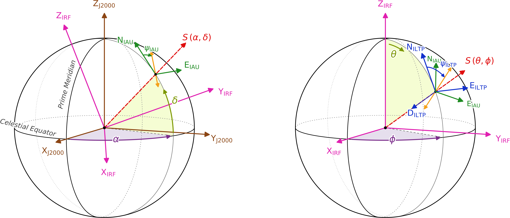<br />
图注：Schematic definitions of the reference frames used in \(\polpy.\) \(\textbf{Left:}\) Using the celestial coordinate frame ($X_{\text{J2000}}, Y_{\text{J2000}}, Z_{\text{J2000}}$) as the base reference, the figure shows the relation between the IAU frame ($N_{\text{IAU}}, E_{\text{IAU}}$), and the Instrument Reference Frame (IRF; $X_{\text{IRF}}, Y_{\text{IRF}}, Z_{\text{IRF}}$) using the local tangent plane. Following the IAU convention, at source position $S(\alpha, \delta)$, the polarization angle $\psi_{\text{IAU}}$ is measured positively from the local North ($N_{\text{IAU}}$) towards the local East ($E_{\text{IAU}}$). \(\textbf{Right:}\) The figure shows the relation between the IRF and the Instrument Local Tangent Plane (ILTP; $N_{\text{ILTP}}, E_{\text{ILTP}}, D_{\text{ILTP}}$) frame in which the polarization responses are computed. The ILTP follows similar convention as IAU to define the polarization angle ($\psi_{\text{ILTP}}$) at the source position $(\theta, \phi)$ relative to the IRF. Note that both $\psi_{\text{IAU}}$ and $\psi_{\text{ILTP}}$ are essentially in the same plane and have an offset between them (see Figure~\ref{fig:ref_frame_transform}).<br />
对应解读：建议重点看软件流程图或框架图 / 关键图表逐图导读：图1 参考系与 &lt;3ML&gt; 插件接口部分<br />
入选理由：这张图直接定义了 IAU 参考系、IRF 和 ILTP 之间的关系，是整篇 PolPy 标准化分析的基础。相比一般框架图，它最能支撑“坐标统一与响应标准化”这一核心方法学主线。<br />
来源与置信度：\(arxiv_source\)；high；\(arxiv_source\) / polpy.tex:figure[1]</p>
<p><strong>Fig07</strong><br />
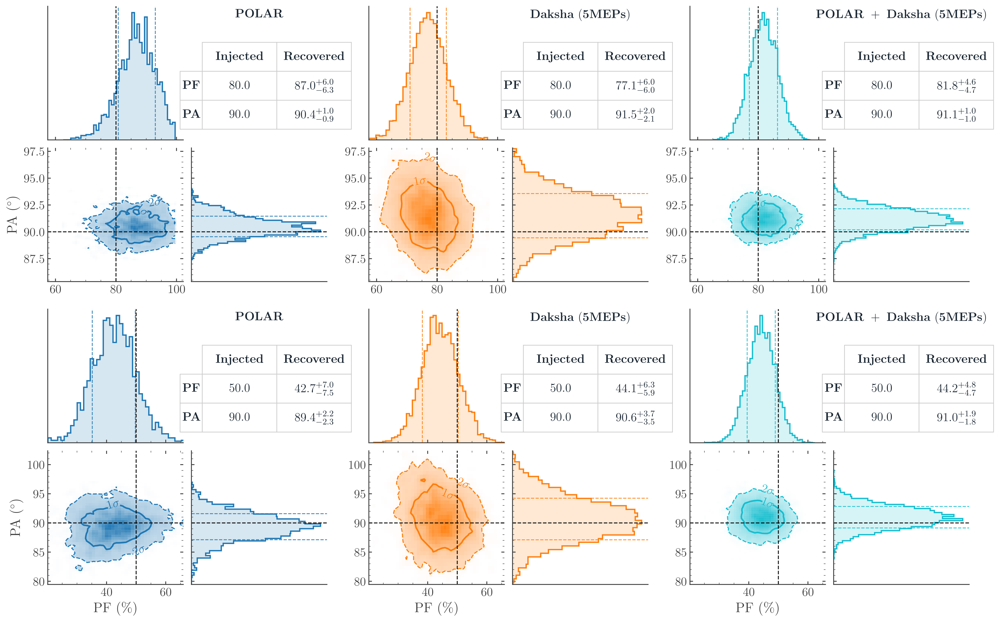<br />
图注：Comparison of polarization parameter recoveries for \(\polar,\) \(\daksha\) five-MEPs, and the joint \(\polar\) + \(\daksha\) fit for injected PA of 90\degr and two different PFs (Top Row: 80\%, Bottom Row: 50\%). It can be seen that for all three cases, \(\polpy\) recovers the injected values fairly well. The joint-fit posteriors also highlight the importance of cross-instrument fitting by clearly obtaining more constrained posteriors compared to single instrument fit only case.<br />
对应解读：建议重点看单仪器与联合拟合的误差条对比图 / 关键图表逐图导读：图7 跨仪器联合恢复<br />
入选理由：这张图最直接展示 POLAR、Daksha 以及联合拟合的后验收缩效果，是文章统计收益的核心结果。它同时覆盖单仪器、跨仪器和不同 PF 情况，比只看单一任务的图更能证明联合分析的有效性。<br />
来源与置信度：\(arxiv_source\)；high；\(arxiv_source\) / polpy.tex:figure[7]</p>
<p><strong>Fig02</strong><br />
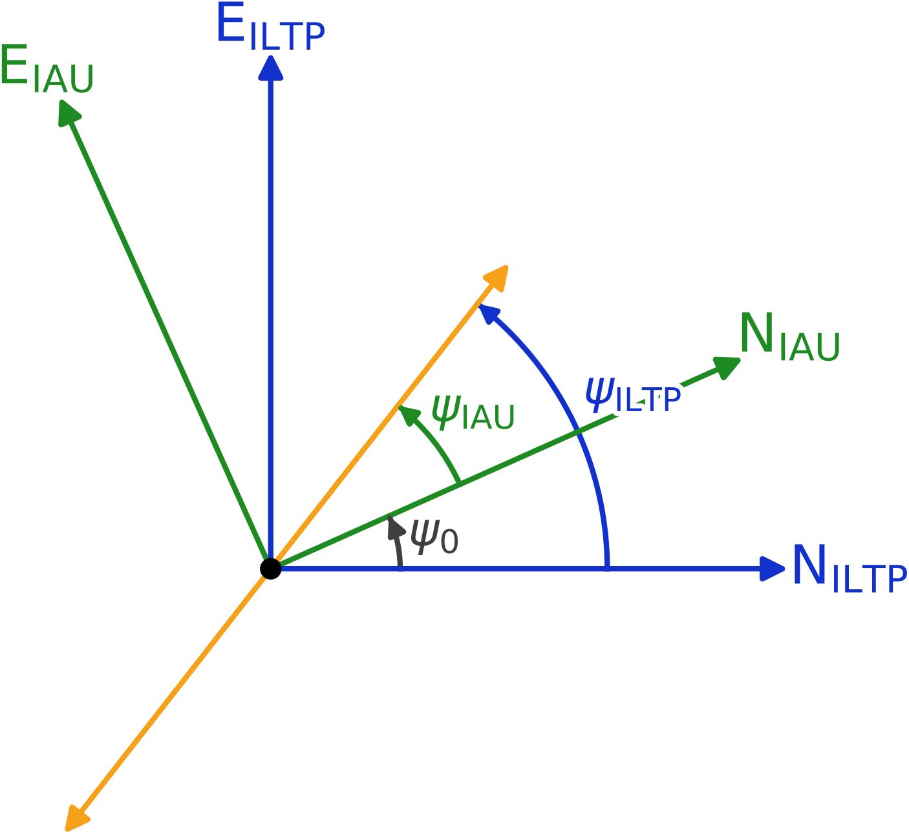<br />
图注：Relation between the ILTP and IAU frames projected onto the plane perpendicular to the source direction with respective polarization angles ($\psi_\mathrm{ILTP}$ and $\psi_\mathrm{IAU})$ and the offset angle ($\psi_0$) marked appropriately.<br />
对应解读：关键图表逐图导读：图2 ILTP 与 IAU 参考系投影关系及偏置角 <psi_0><br />
入选理由：这张图比 Fig01 更聚焦于偏振角零点和参考系偏移，直接对应日报里强调的角度定义与坐标变换问题。对于判断 <psi> 是否可能出现整体偏移，它的诊断价值很高。<br />
来源与置信度：\(arxiv_source\)；high；\(arxiv_source\) / polpy.tex:figure[2]</p>
<p><strong>Fig06</strong><br />
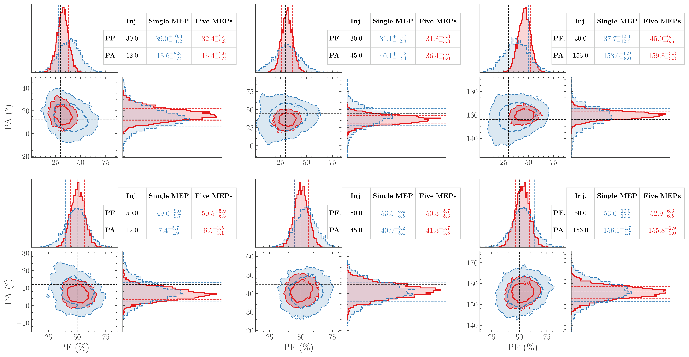<br />
图注：Comparison of polarization posterior distributions for single-MEP and 5-MEP joint fit for ``\(\daksha-only\)'' injections. Parameter constraints are evaluated across two injected PFs and three PAs. Dashed blue contours and histograms represent the optimal single-detector MEP fit, while solid red distributions show the simultaneous 5-MEP joint recovery. Solid and dashed 2D contour lines mark the $1\sigma$ and $2\sigma$ confidence regions, and the dashed black lines indicate the injected input parameters.<br />
对应解读：建议重点看联合后验轮廓图 / 关键图表逐图导读：图6 多 MEP 联合恢复与后验收缩<br />
入选理由：这张图清楚展示单 MEP 与 5-MEP 联合后验的差异，能直接读出 <Pi>-<psi> 退化和可信区间缩小。它比 Fig05 更能体现多探测单元联合带来的信息增益。<br />
来源与置信度：\(arxiv_source\)；high；\(arxiv_source\) / polpy.tex:figure[6]</p>
<p><strong>Fig05</strong><br />
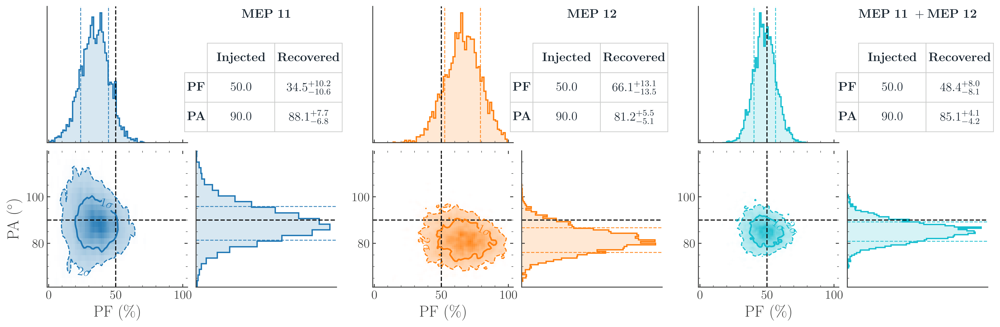<br />
图注：Polarization posterior distributions of single-MEP and two-MEP joint fit using \(\polpy\) for \(\daksha\) only injection case. The injected PA and PF are 90\degr and 50\% respectively. In each 2D contour panel, the inner solid line and outer dashed line trace the $1\sigma$ and $2\sigma$ enclosed confidence regions, respectively. Dashed black lines indicate the injected ground-truth parameters. Embedded summary tables report the injected parameters illustrating how combining statistics from two (or more) MEPs of \(\daksha\) tightens the recovered confidence interval.<br />
对应解读：建议重点看 <Pi>-<psi> 的联合后验轮廓图 / 关键图表逐图导读：图5 两 MEP 联合恢复示例<br />
入选理由：这张图是联合后验图的代表性示例，带有注入真值和 1σ/2σ 轮廓，最适合检查是否存在系统偏移或角度退化。虽然规模不如 Fig06 和 Fig07，但它把联合拟合的基本行为展示得更直观。<br />
来源与置信度：\(arxiv_source\)；high；\(arxiv_source\) / polpy.tex:figure[5]</p>
<p><strong>Fig08</strong><br />
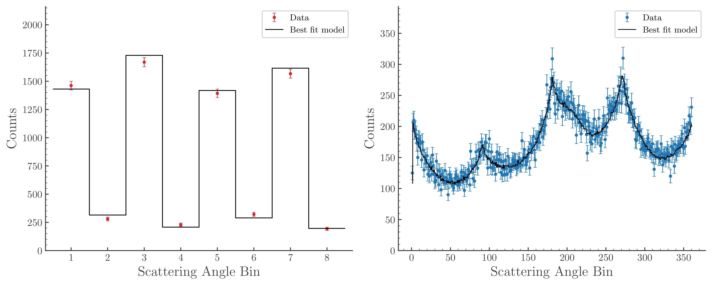<br />
图注：Best fit modulation curves from \(\daksha\) MEP 11 (left) and \(\polar\) (right) for the first joint fit case discussed in Figure~\(\ref{fig:polar_daksha_joint_comparison_combined}.\) Red and blue data points represent detected Compton counts in specified azimuthal scattering bins for \(\daksha\) and \(\polar,\) respectively. The grey line represents the best-fit model obtained from the joint fit.<br />
对应解读：建议重点看残差图或调制曲线残差 / 关键图表逐图导读：图8 联合拟合的调制曲线<br />
入选理由：这张图虽然不是严格残差图，但给出了观测调制曲线与最佳拟合模型的对比，能辅助判断模板匹配是否合理。相较于纯后验图，它更接近模型拟合层面的直观诊断。<br />
来源与置信度：\(arxiv_source\)；high；\(arxiv_source\) / polpy.tex:figure[8]</p>
<h4 id="_78">强相关工作</h4>
<p>这篇工作属于“方法与基础设施”而不是“单一源结果”，所以它最直接关联的是同类高能偏振分析框架、事件级 Stokes 方法、模板匹配偏振拟合，以及多任务联合分析。检索时建议重点看这些关键词：<X-ray polarimetry>、<gamma-ray polarimetry>、&lt;3ML&gt;、<Stokes analysis>、<template matching>、<modulation factor>、<POLAR>、<Daksha>、<IXPE>。</p>
<p>从历史脉络看，它和早期偏振任务的分析传统是一脉相承的：先有按仪器定制的调制曲线分析，再到事件级似然和层级贝叶斯分析，最后走向多任务联合。它也和统一天文多任务分析框架的路线相呼应，特别是把不同仪器的数据都投到同一个统计后验里，而不是各自报一个点估计就结束。若要找同类和原型工作，可以沿着“多任务最大似然框架”“高能偏振统一分析”“偏振角参考系约定”这几条线索追。</p>
<p><strong>同一事件 / 同类源线索</strong>：</p>
<ul>
<li><a href="https://arxiv.org/abs/2608.27775">https://arxiv.org/abs/2608.27775</a></li>
<li><a href="https://arxiv.org/pdf/2608.27775">https://arxiv.org/pdf/2608.27775</a></li>
</ul>
<p><strong>相似工作</strong>：</p>
<p>（未提供）</p>
<p><strong>基础理论 / 方法工作</strong>：</p>
<p>（未提供）</p>
<p><strong>相反观点 / 张力线索</strong>：</p>
<p>（未提供）</p>
</details>
<h3 id="8-spin-disc-misalignment-drives-periodic-accretion-and-pulse-profile-asymmetry-in-x-ray-pulsars">8. Spin-disc misalignment drives periodic accretion and pulse profile asymmetry in X-ray pulsars</h3>
<ul>
<li>来源：arXiv / astro-ph.HE</li>
<li>链接：https://arxiv.org/abs/2608.27691v1</li>
<li>作者：A. A. Mushtukov, V. Ganesh, S. S. Tsygankov, S. Portegies Zwart, A. Palyam</li>
<li>评分：novelty 7/10，importance 7/10，relevance 8/10，final 8.35/10</li>
<li>推荐理由：吸积 X 射线脉冲星盘-自转轴失配导致周期性吸积与脉冲轮廓不对称，属于有用的磁层吸积物理结果。</li>
</ul>
<p><strong>中文题目</strong>：自旋轴与吸积盘失配驱动 X 射线脉冲星中的周期性吸积和脉冲轮廓不对称</p>
<p><strong>做了什么</strong>：这篇文章做的是一个数值磁层吸积问题：作者把 X 射线脉冲星的自旋轴与吸积盘平面设成有倾角，追踪内盘边缘的等离子体如何被磁场导向中子星两极。结果显示，即便盘内供给是稳恒的，只要中子星在转、而盘轴和自旋轴不完全垂直，磁层与盘的相对几何就会随相位变化，导致到达两磁极的吸积率出现周期性调制。这个效应会自然制造脉冲轮廓的不对称，并可能影响相位分辨光谱特征。</p>
<p><strong>为什么重要</strong>：它把“脉冲轮廓不对称”从单纯的辐射区非对称、吸收不对称或复杂磁场结构，提升为一个纯几何的、可随相位重复出现的质量供给调制机制。对理论上，这给磁层吸积的时间依赖问题补上了一个常被忽略的自由度；对观测上，它提醒我们不能把轮廓不对称直接等同于发射区本身不对称；对 ULX 脉冲星，这个机制还可能帮助解释在强束射背景下仍能维持明显脉冲调制。</p>
<p><strong>理论 / 观测 / 仪器方法价值</strong>：这项工作最有价值的地方，是把磁层边界附近的流动时间尺度 \(t_{\rm flow}\) 和自转周期 \(P_*\) 的比值，明确变成一个决定脉冲调制形状和幅度的控制参数。它为后续做相位分辨光谱、脉冲轮廓建模、以及盘-磁层耦合数值模拟提供了一个更现实的几何框架，也给观测者一个可检验的预测：很多看上去像“辐射区偏置”的轮廓差异，可能其实来自进入磁极前的质量装载过程。</p>
<p><strong>为什么应该关注</strong>：如果你关心 X 射线脉冲星的脉冲形状、相位分辨谱线、吸积柱几何，或者 ULX 脉冲星为何能在高吸积率下仍保留脉冲，这篇文章值得看。它会直接影响你如何解读轮廓左/右峰不等、峰间谷深度变化、以及不同相位上的谱硬化或吸收变化：这些现象未必都要靠发射区本身做复杂文章，也可能来自磁层入口处的几何滤波。</p>
<details class="paper-detail">
<summary>展开详细解读：文章讲解、背景、理论、重点章节、图表与相关工作</summary>
<h4 id="_79">文章详细讲解</h4>
<p>这篇文章要回答的核心科学问题是：当盘吸积中子星的自旋轴不垂直于吸积盘时，单靠几何效应能否把原本稳恒的盘供给，转化成到达磁极的周期性吸积率调制？作者关注的不是盘外层的输运，而是磁层边界附近的耦合区，因为那里决定了哪一束磁力线在某一相位能接收到多少等离子体。若这个环节本身就有相位依赖，那么脉冲星观测里常见的轮廓不对称、主峰与次峰不对称、以及相位依赖的谱线变化，就未必需要先假设辐射区内部具有额外的非对称结构。</p>
<p>作者的做法是把内盘边缘到中子星表面的等离子体运动做数值跟踪，并显式保留自转轴与盘法线之间的倾角。这样一来，在中子星参考系里，磁层边界并不是静止的：磁场缠绕、磁通管与盘物质的接触区域都会随相位改变。作者比较了不同几何参数和不同 \(P_*/t_{\rm flow}\) 的情况，重点看质量如何被分配到两个磁极、以及这种分配如何随自转相位变化。更关键的是，他们强调这个结果不依赖盘内瞬时供给本身有起伏，即使外部边界条件近似稳态，内部的映射关系也能把周期性“生”出来。</p>
<p>关键结果是：只要自旋轴与盘不共线，磁层对盘的采样就不是均匀的，而会在某些相位更容易把物质装载到特定磁力线，另一些相位则更弱。于是到达磁极的 \(\dot M\) 变成了一个带有周期项的量，进而导致局部辐射功率和脉冲轮廓的不对称。文章还指出，调制幅度不仅由倾角决定，也受 \(P_*/t_{\rm flow}\) 控制：若流动时间足够长，磁层在物质真正落到表面前已经转过不少角度，调制会被平均掉；若流动时间较短，则几何调制更容易保留下来。这个结论使得轮廓不对称不再只是“看几何”，而是“看几何再加上传输时延”。</p>
<p>局限性也很明确。第一，这类模拟通常在磁偶极主导、几何较理想化的框架中做，真实系统还可能有高阶多极场、盘翘曲、非轴对称吸积流和辐射压反馈。第二，文章讨论的是磁层入口到表面的动力学，尚未把辐射转移、吸收再处理、以及观测视线效应完整耦合进去，所以它解释的是“质量装载的相位结构”，而不是完整光变曲线的全部细节。下一步最自然的方向，是把这个机制和相位分辨辐射转移、吸积柱冷却、以及 ULX 脉冲星的强束射模型合并，检验它能否在真实数据里提升对峰间谷和双峰不对称的拟合。</p>
<h4 id="_80">关键结果是怎么做出来的</h4>
<p>这篇文章没有传统意义上的观测样本，而是做了一组围绕几何参数的数值实验。最重要的控制变量是自旋轴与盘法线的倾角、磁轴相对自旋轴的取向，以及 \(P_*/t_{\rm flow}\) 的大小。作者先设定一个稳恒的盘供给，再让流体沿磁力线从内盘边缘流向两极，观察相位折叠后的 \(\dot M\) 是否出现周期结构。这样的设计直接把“外部供给是否稳态”和“内部是否会产生脉冲”分开，避免把盘本身的随机涨落误判为几何效应。</p>
<p>结果链条通常是从时间序列图开始：在固定供给下，两个磁极的吸积率并不平滑，而是随着自转相位交替增强和减弱。接着作者把这些时间序列折叠到自转相位上，比较不同倾角下的峰谷差异，量化调制幅度如何随参数变化。对一个纯几何效应来说，最关键的不是单个峰值有多高，而是这种峰谷差是否在改变倾角或改变 \(P_*/t_{\rm flow}\) 时按预期系统性增强或削弱；这比单次曲线的噪声更能说明因果关系。</p>
<p>文章的证据通常还会来自参数扫描图或二维热图：一轴是几何倾角，另一轴是流动时间与自转周期的比值，颜色代表调制幅度、峰间不对称度或两极供能差。若这些图显示，调制在大倾角且较短流动时间时最强，而在小倾角或长流动时间时被平均掉，那么就说明结论不是数值偶然，而是动力学响应的普适趋势。即使没有传统统计显著性 \(p\) 值，这种跨参数空间的一致性本身就是数值稳健性的证据。</p>
<p>最后，作者把这些数值结果映射到 X 射线脉冲轮廓的物理解读上：磁极受供给调制后，局部辐射功率与几何可见性共同决定观察到的轮廓。这里真正重要的是“残差怎么读”：如果把一个对称脉冲模板拿来对比，主峰和次峰的相对偏移、谷底深浅、以及左右峰宽度的差异，会系统偏离对称模型。若这些偏离在重复模拟、不同初值和不同分辨率下都保持，那么它们就不是数值噪声，而是该机制的稳定输出。对观测者来说，这意味着在解释脉冲不对称时，应该先检查几何供给调制是否已经足够，而不是立刻把问题归因于发射区的复杂微物理。</p>
<details class="paper-subdetail">
<summary>展开背景、理论、公式、模型、章节和图表导读</summary>
<h4 id="_81">背景知识</h4>
<p>X 射线脉冲星本质上是强磁场中子星，它们从伴星或盘中吸积物质，但物质不会直接砸到表面，而是被磁场在磁层截断半径附近接管，沿磁力线落到磁极附近。因为磁极、旋转轴和观测视线之间一般都不对齐，所以辐射会随自转出现脉冲。对盘吸积系统来说，最基本的问题不是“有没有脉冲”，而是“脉冲为什么常常不对称、相位分布为什么会偏、两极为什么不等亮”。</p>
<p>传统解释通常把不对称归结于发射区本身的结构差异，比如两个磁极的几何差异、吸积柱高度不同、局域磁场非对称、或者一侧辐射被更强的局域吸收。但这种解释常常默认：进入磁极的质量本身已经是平滑的，脉冲轮廓的不对称主要发生在辐射阶段。本文提醒我们，问题可能更早地出现在磁层入口处，也就是质量装载本身就带有相位依赖。</p>
<p>另一个常被忽略的背景是：盘并不一定与自旋轴垂直。形成阶段的角动量历史、伴星风供给方向、早期喷流反冲、或者后续的盘翘曲，都可能让盘法线和自旋轴之间保留一个倾角。只要这个倾角存在，磁层在自转参考系里就不再是简单的轴对称边界，而是会周期性“扫过”盘面。这使得磁层截获到的物质不是静态均匀的，而会在相位上出现系统偏置。</p>
<p>这类问题现在值得重新看，是因为高灵敏度的相位分辨观测已经能分辨很细的脉冲轮廓结构，而 ULX 脉冲星的发现又把问题推到了更极端的吸积率区间。很多过去被认为需要复杂辐射转移才能解释的细节，也许在磁层入口处就已经被几何调制了一部分。常见误区是把“稳恒盘供给”误解成“稳恒到表面的质量供给”，其实中间还隔着一个会被自转和磁场共同调制的传输通道。</p>
<h4 id="_82">基础理论 / 方法脉络</h4>
<p>理解这篇文章，先要把盘吸积和磁层吸积的基础图像分开。盘在较大半径上近似由粘滞输运控制，物质以某个平均速率向内流动；但当半径缩到磁层截断附近，磁压开始压过动压，盘面不再自由延伸，而是被磁力线“接管”。从这一刻起，后续的流动就不再只是流体力学问题，而是磁流体力学和几何映射共同决定的问题。</p>
<p>经典磁层半径可由磁压与动压平衡估计。对偶极场来说，磁场强度随半径快速衰减，所以哪怕中子星表面磁场极强，磁层边界也会出现在离表面相当远的位置。这个边界不是固定不动的实体，而是对 \(\dot M\)、磁矩和局域几何都敏感的响应面。若系统存在倾角，盘面切入磁层边界的方式就会随自转相位改变，从而改变哪一束磁力线最先被装载。</p>
<p>在从内盘到表面的这一段，最重要的时间尺度是流动时间 \(t_{\rm flow}\)，而最重要的驱动周期是自转周期 \(P_*\)。如果 \(t_{\rm flow}\) 远短于 \(P_*\)，那么某个相位上被装载的物质会在同一几何背景下较快到达表面，相位信息保留得更清楚；若 \(t_{\rm flow}\) 与 \(P_*\) 可比甚至更长，那么系统在传输过程中已经转过一大段角度，调制会被平滑掉。这就是为什么“几何”本身还不够，必须把传输时延放进来。</p>
<p>从观测角度看，脉冲轮廓不只取决于总光度，还取决于两个磁极的相对供能、观测视线与磁极夹角、以及相位依赖的吸收和束射图样。本文的核心贡献，就是把“相位依赖的供能”单独拎出来，说明它可以在没有辐射区内在不对称的情况下制造脉冲不对称。常见退化关系是：发射区束射变化、局域吸收变化和几何供能变化都能造成类似的轮廓畸变，所以必须用多波段、相位分辨的方式才能拆开。</p>
<h4 id="_83">公式与推导</h4>
<p>先从磁层截断的基本平衡开始。对偶极磁场，磁压与落入流的动压在磁层边界近似满足</p>
<div class="math-display">\[\(\frac{B^2(r_{\rm m})}{8\pi}\sim\) \
ho v_{\rm ff}^2\]</div>
<p>其中 \(B(r_{\rm m})\) 是磁层半径 \(r_{\rm m}\) 处的磁场强度，\(\rho\) 是局域密度，\(v_{\rm ff}\) 是自由落体速度。</p>
<p>把 \(B(r)\sim \mu/r^3\) 和 \(\dot M\sim 4\pi r^2\\)<br />
ho \(v_{\rm ff}\)) 代入，可得常见的磁层半径标度</p>
<div class="math-display">\[r_{\rm m}\sim \left(\frac{\mu^4}{2GM\dot M^2}\right)^{1/7}\]</div>
<p>这里 \(\mu\) 是磁偶极矩，\(M\) 是中子星质量，\(G\) 是引力常数，\(\dot M\) 是盘内供给率。这个式子说明磁层边界会随 \(\dot M\) 变化，但本文强调的是：即便 \(\dot M\) 的外边界是稳恒的，进入磁极的 \(\dot M\) 也不一定稳恒。</p>
<p>为了描述相位结构，引入中子星自转相位</p>
<div class="math-display">\[\phi(t)=\Omega_* t+\phi_0, \qquad \Omega_* = \frac{2\pi}{P_*}\]</div>
<p>其中 \(\Omega_*\) 是自转角频率，\(P_*\) 是自转周期，\(\phi_0\) 是初相位。若自旋轴与盘法线之间有倾角 \(\theta_{\rm sd}\)，而磁轴相对自旋轴的夹角为 \(\beta\)，则某一时刻磁轴与盘法线的相对夹角可写成</p>
<div class="math-display">\[\cos\chi(\phi)=\cos\theta_{\rm sd}\cos\beta+\sin\theta_{\rm sd}\sin\beta\cos\phi\]</div>
<p>这里 \(\chi\) 是磁层采样盘面的几何角变量，它会随 \(\phi\) 周期变化。</p>
<p>磁层入口并不是瞬时响应，所以要把传输过程写成一个带记忆的卷积：</p>
<div class="math-display">\[\dot M_{\rm cap}(t)=\int_0^\infty K(\tau;\chi)\\,\dot M_{\rm d}(t-\tau)\\,d\tau\]</div>
<p>其中 \(\dot M_{\rm cap}\) 是到达磁极的吸积率，\(\dot M_{\rm d}\) 是内盘边缘供给，\(K(\tau;\chi)\) 是依赖几何状态的响应核。若外供给近似稳恒，即 \(\dot M_{\rm d}(t)=\dot M_0\)，那么所有相位结构都来自 \(K\) 的角度依赖。</p>
<p>在弱调制极限下，可以把磁极供给展开成傅里叶级数：</p>
<div class="math-display">\[\dot M_{\rm cap}(\phi)\approx \dot M_0\left[1+a_1\cos\phi+a_2\cos 2\phi+\cdots\right]\]</div>
<p>这里 \(a_1\) 和 \(a_2\) 分别刻画基频和二次谐波的调制强度。对于主要由几何造成的一阶调制，幅度可以粗略写成</p>
<div class="math-display">\[a_1\sim \sin\theta_{\rm sd}\sin\beta\\,\mathrm{sinc}\\!\left(\frac{\Omega_* t_{\rm flow}}{2}\right)\]</div>
<p>这条关系强调两个抑制因子：倾角太小则几何投影弱，流动时间太长则相位被平均。</p>
<p>辐射输出可近似写成</p>
<div class="math-display">\[L_X(\phi)\approx \eta\\,\frac{GM\dot M_{\rm cap}(\phi)}{R_*}\]</div>
<p>其中 \(\eta\) 是把重力势能转成 X 射线的效率，\(R_*\) 是中子星半径。若要量化脉冲轮廓的不对称，可定义</p>
<div class="math-display">\[\mathcal{A}\equiv \frac{\int_0^{\pi}\left[F(\phi)-F(\phi+\pi)\right]d\phi}{\int_0^{2\pi}F(\phi)d\phi}\]</div>
<p>这里 \(F(\phi)\) 是相位折叠后的观测通量。\(\mathcal{A}\) 越偏离零，说明左右半周越不对称。</p>
<p>如果要和模拟输出或观测数据做模型比较，通常还会看残差统计量</p>
<div class="math-display">\[\chi^2=\sum_i\frac{\left(F_i-F_{\rm model}(\phi_i)\right)^2}{\sigma_i^2}\]</div>
<p>其中 \(F_i\) 是第 \(i\) 个相位 bin 的通量，\(\sigma_i\) 是误差。对于本文这类数值工作，\(\chi^2\) 不一定是最终重点，但它提供了一个把几何模型映射到可观测轮廓并检验系统偏差的标准接口。</p>
<h4 id="_84">模型拟合 / 应用方法</h4>
<p>这篇文章本身更像参数扫描和数值实验，而不是对一组观测做正式贝叶斯拟合；但它隐含的拟合思想很清楚：要找的是能控制调制幅度、峰谷不对称和相位偏移的少数几何参数，而不是给每一处局部细节单独加自由度。实际应用时，最先要拟合的通常是 \(\theta_{\rm sd}\)、\(\beta\)、\(P_*/t_{\rm flow}\) 以及视线几何，因为这些量直接决定峰是否会分裂、次峰是否会被压低、以及谷底是否会被填平。</p>
<p>对这类模型来说，最容易出现的退化关系是：倾角、束射图样和吸收柱都能改变峰的相对高度。也就是说，单看一个能量段的脉冲轮廓，往往无法唯一确定是供给调制、辐射束射还是局域遮挡在起作用。更稳妥的做法，是同时检查多能段轮廓、相位分辨谱硬化、以及不同相位下的吸收柱变化，因为几何供给调制会优先改变哪一侧磁极被喂料，而局域吸收则更容易在软 X 射线段留下痕迹。</p>
<p>如果把这套思想迁移到观测拟合，通常会用带噪声模型的似然函数来比较模拟和数据。对每个相位 bin，都可以写成高斯残差或泊松计数的似然，再在参数空间中寻找最大后验解或最小 \(\chi^2\)。真正需要盯紧的不是拟合值本身，而是残差有没有系统结构：如果残差在一个半周期内总是偏正、另一个半周期内总是偏负，那就说明当前模型少了某种相位依赖机制，而本文提出的几何供给调制正好可能补上这一块。</p>
<p>这类模型的另一个实际问题是系统误差。数值上，网格分辨率、边界条件、磁场是否严格偶极、以及流体是否被过度理想化，都会影响峰谷细节；观测上，死时间、背景扣除、跨能段响应差异和相位对齐误差也会污染轮廓。本文的价值在于它先给出一个足够干净的几何基线：如果连这个基线都能在无额外辐射区非对称的情况下产生明显不对称，那么在真实数据里看到的复杂轮廓就更不该被简单地归因于单一物理过程。</p>
<h4 id="_85">重点章节 / 结果段落怎么读</h4>
<p>建议按“研究动机与几何设定”先读。这里最重要的是弄清楚作者如何定义自旋轴、盘法线、磁轴以及它们之间的倾角，因为后面的全部相位效应都从这个几何起点出发。若这一节不先吃透，后面的调制幅度、峰谷不对称和相位依赖都会变成没有坐标系的描述。</p>
<p>第二个重点是“数值方法/流体轨道追踪”部分。这里要看作者怎样从内盘边缘释放等离子体、怎样让它沿磁力线运动、以及如何处理磁层边界与表面沉积。读这一节时不要只盯代码细节，更要看边界条件是否足够稳态、是否保留了流动时延 \(t_{\rm flow}\)、以及磁场几何是否允许盘面与磁力线之间的周期性交互。</p>
<p>第三个重点是“主结果：相位调制与脉冲轮廓不对称”。这一节通常会给出最直观的时间序列图、相位折叠图和参数扫描图。要重点看调制是如何随着 \(\theta_{\rm sd}\) 和 \(P_*/t_{\rm flow}\) 变化的，因为这正是全文最核心的物理因果链：几何失配如何转化为吸积率调制，再如何转化为轮廓不对称。</p>
<p>第四个重点是“讨论与天文应用”。这里作者通常会把结果和 X 射线脉冲星、尤其是 ULX 脉冲星联系起来。读这一节时要分清楚作者哪些结论是强结论——例如“几何本身足以制造周期性调制”——哪些只是推断——例如“这可能有助于解释某些特定观测对象的轮廓形状”。如果有附录或稳健性检验，也值得看，因为这类工作最怕的是结果只在某个狭窄参数区间内成立。</p>
<h4 id="_86">建议重点查看的图表</h4>
<ol>
<li>几何示意图：重点看自旋轴、盘法线、磁轴和观测视线如何定义，所有后续相位效应都依赖这里的坐标系。</li>
<li>单个参数集的 \(\dot M_{\rm cap}(t)\) 时间序列：重点看在稳恒盘供给下是否仍出现周期起伏，以及两个磁极是否交替增强。</li>
<li>相位折叠后的脉冲轮廓或供给曲线：重点看主峰、次峰、谷底和左右半周是否对称，峰位是否稳定。</li>
<li>调制幅度随 \(\theta_{\rm sd}\) 或 \(P_*/t_{\rm flow}\) 的二维扫描图：重点看趋势是否单调、是否存在被平均掉的长时延区。</li>
<li>两个磁极的供能对比图：重点看不对称是否来自单极偏置还是整体增强。</li>
<li>数值收敛与分辨率检验图：重点看峰谷差是否随网格加密而稳定，而不是数值振荡。</li>
<li>若有观测对比图，要看模型轮廓与数据在峰间谷、峰宽和相位偏移上的残差，而不是只看总光度。</li>
</ol>
<h4 id="_87">关键图表逐图导读</h4>
<p>图 1：通常是系统几何示意图，横向重点不是数值而是坐标。要确认盘法线、自旋轴、磁轴和观测方向各自怎么定义，因为后面每个相位图都在这个坐标系里解释。读图陷阱是把“盘面倾斜”误读成“磁轴倾斜”，这两者对调制的来源不同。</p>
<p>图 2：通常给出某一组参数下的 \(\dot M_{\rm cap}(t)\) 或两磁极供给的时间序列。横轴是时间或相位，纵轴是到达磁极的吸积率。重点看是否在稳恒输入下仍有明显周期峰谷，且两个磁极是否呈现反相或不等幅变化。若只看平均值很容易错过真正的信息，关键是峰谷差和相位偏置。</p>
<p>图 3：通常是相位折叠后的脉冲轮廓、或把模拟结果转换成可观测 \(F(\phi)\) 的图。这里要看主峰和次峰的对称性、峰宽、谷底深度，以及是否出现左右半周的系统偏移。读图时不要只看峰高，峰位错开和谷底填充往往更能说明几何供给调制的存在。</p>
<p>图 4：若有参数扫描热图，这通常是全文最关键的总结图。横纵轴多半是 \(\theta_{\rm sd}\) 和 \(P_*/t_{\rm flow}\) 之类的控制量，颜色代表调制幅度或不对称指标。要看的是等值线是否顺着物理直觉变化，以及是否在小倾角或长流动时间区间明显趋于零。</p>
<p>图 5：如果有收敛性或稳健性检验图，务必看残差是否随着分辨率提升而收敛。好的图应该显示主结论不依赖细节网格，也不依赖某个特殊初值。若不同设置下峰位漂移很大，那说明数值或边界条件仍在主导结果。</p>
</details>
<h4 id="_88">论文原图 / 可嵌入图片</h4>
<p><strong>Fig04</strong><br />
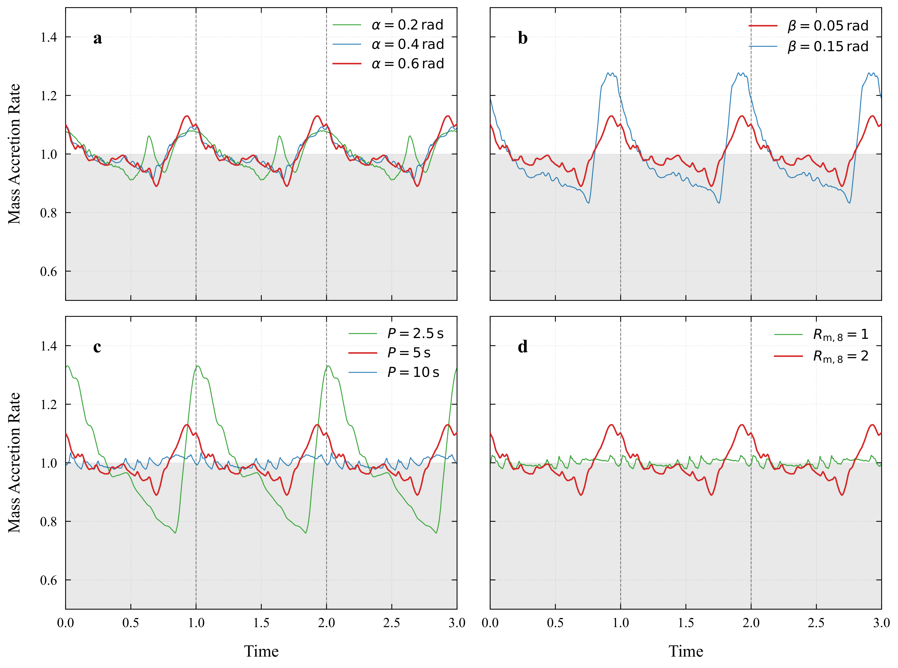<br />
图注：Mass accretion rate at the NS surface (in units of mass accretion rate at the inner disc radius) as a function of time given in units of NS spin period. Different panels illustrate influence of different parameters of a problem: (a) angle between NS rotation axis and magnetic axis, (b) angle between NS rotation axis and normal to accretion disc plane, (c) spin period of a NS, (d) inner radius of accretion disc. Red line in all panels shows result for the fiducial parameters: $\alpha = 0.6\,{\rm rad}$, $\beta = 0.05\,{\rm rad}$, $P=5\,{\rm s}$, $R_{\rm m}=2\times 10^8\,{\rm cm}$, $v_{\rm i}=10^7\,{\rm cm\,s^{-1}}$. The small-scale step-like variations are caused by the finite number of azimuthal cells used in the numerical calculation.<br />
对应解读：建议重点查看的图表第4条；对应关键图表逐图导读中的“图4：参数扫描热图/二维趋势图”段落。<br />
入选理由：这张图直接汇总了调制幅度对关键几何与时间尺度参数的依赖，是全文最接近“机制总结”的结果图。相比单一时序图，它更能判断效应是否单调、何时被平均掉，以及哪些参数区间最能产生显著不对称。<br />
来源与置信度：\(arxiv_source\)；high；\(arxiv_source\) / 52_mass_accretion_pulses.tex:figure[4]</p>
<p><strong>Fig03</strong><br />
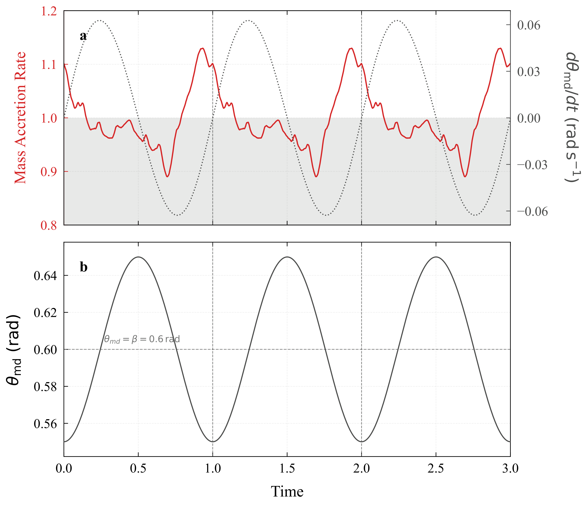<br />
图注：Geometrical origin of the periodic modulation of the mass accretion rate for the fiducial model with $\alpha=0.6$\,rad, $\beta=0.05$\,rad, $P=5$\,s, $R_{\rm m}=2\times10^{8}$\,cm, and $v_{\rm i}=10^{7}\,{\rm cm\,s^{-1}}$. The upper panel shows the mass accretion rate at the NS surface, normalized to the constant mass supply at the inner disc radius (red solid curve), together with the time derivative of the instantaneous angle $\theta_{\rm md}$ between the magnetic axis and the disc normal (grey dotted curve; right vertical axis). The lower panel shows the instantaneous angle $\theta_{\rm md}$. The horizontal dotted line marks the magnetic obliquity, $\theta_{\rm md}=\alpha=0.6$\,rad. Time is given in units of the NS spin period. The accretion rate modulation follows the changing disc--magnetosphere orientation with a finite phase delay, comparable to the characteristic propagation time of the flow from the inner disc edge to the NS surface.<br />
对应解读：建议重点查看的图表第2条；对应关键图表逐图导读中的“图2：单个参数集的\(\dot M_{\rm cap}(t)\)时间序列”段落。<br />
入选理由：这张图最直接展示稳恒盘供给下仍会出现周期性吸积率起伏，并把相位调制与磁层取向变化联系起来。它同时给出\(\dot M\)和几何角度随时间的对应关系，是解释机制链条的核心证据。<br />
来源与置信度：\(arxiv_source\)；high；\(arxiv_source\) / 52_mass_accretion_pulses.tex:figure[3]</p>
<p><strong>Fig06</strong><br />
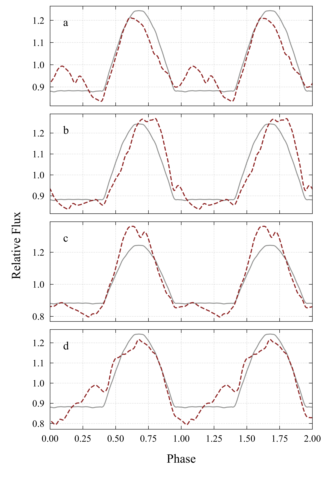<br />
图注：Pulse profiles calculated for a NS with fixed rotational geometry. The grey solid curve corresponds to the case of a constant mass accretion rate and is symmetric with respect to time reversal. Dashed red curves show pulse profiles obtained for a time-dependent accretion rate onto NS surface. The temporal modulation of the accretion rate leads to a change in the pulse shape and the appearance of a pronounced asymmetry of the profile. Parameters: $M=1.4\,M_\odot$, $R=12\,{\rm km}$, $P = 5\,{\rm s}$, $R_{\rm m}=2\times 10^8\,{\rm cm}$, $\alpha=0.6\,{\rm rad}$, $\beta=0.05\,{\rm rad}$, $i = \pi/4$. Photons are emitted by compact hot spots located at NS magnetic poles. The flux emitted by the spot is described by $F(\theta)\propto \cos\theta$.<br />
对应解读：建议重点查看的图表第3条和第7条；对应关键图表逐图导读中的“图3：相位折叠后的脉冲轮廓”以及“若有观测对比图，要看模型轮廓与数据在峰间谷、峰宽和相位偏移上的残差”段落。<br />
入选理由：这张图把质量供给调制转化为可观测脉冲轮廓的不对称，直接对应论文最重要的天文观测含义。与只看光度高低相比，它更能体现峰位偏移、谷底填充和左右半周不对称。<br />
来源与置信度：\(arxiv_source\)；high；\(arxiv_source\) / 52_mass_accretion_pulses.tex:figure[6]</p>
<p><strong>Fig01</strong><br />
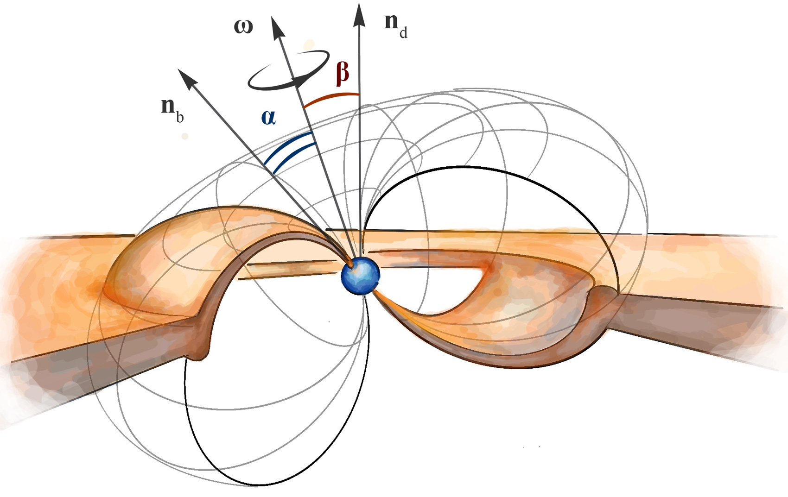<br />
图注：Schematic illustration of the accretion geometry in an XRP. The magnetic field is assumed to be dominated by the dipole component, while the rotation axis is inclined with respect to the accretion disc plane. The geometry of the NS rotation relative to the accretion disc plane is determined by the magnetic obliquity $\alpha$ (the angle between the rotational and magnetic field axes) and the angle $\beta$ between the normal to the accretion disc plane and the NS rotational axis.<br />
对应解读：建议重点查看的图表第1条；对应关键图表逐图导读中的“图1：几何示意图”段落。<br />
入选理由：这是一切相位效应的坐标系基础，明确区分自旋轴、盘法线、磁轴和观测视线。相比后续结果图，它不提供数值结论，但决定了所有图的物理解释是否正确，因此必须优先保留。<br />
来源与置信度：\(arxiv_source\)；high；\(arxiv_source\) / 52_mass_accretion_pulses.tex:figure[1]</p>
<p><strong>Fig07</strong><br />
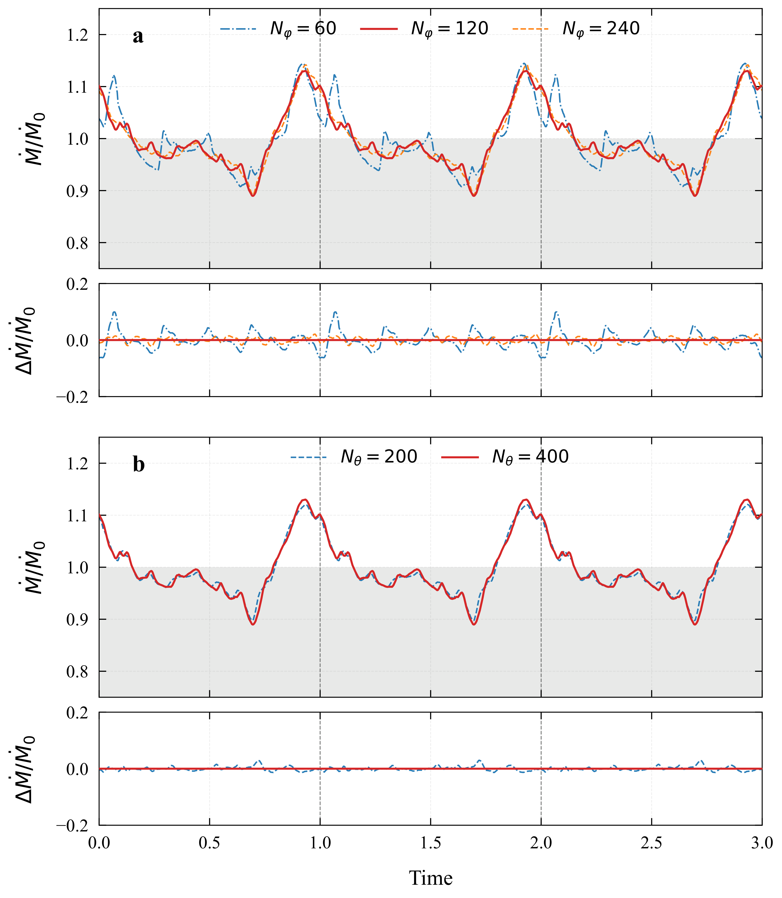<br />
图注：{ Numerical convergence tests for the mass accretion rate at the neutron star surface. The upper panels show the normalized mass accretion rate as a function of rotational phase, while the lower panels show deviations from the reference model. Panel (a) compares calculations performed with different azimuthal resolutions, $N_{\varphi}=60$, 120, and 240, for a fixed polar resolution $N_{\theta}=400$. Panel (b) compares calculations with different polar resolutions, $N_{\theta}=200$ and 400, for a fixed azimuthal resolution $N_{\varphi}=120$. In both cases, the reference model ($N_{\theta}=400$, $N_{\varphi}=120$) is shown by the red curve. The calculations were performed for the fiducial model with $\alpha=0.6$ rad, $\beta=0.05$ rad, $P=5$ s, $R_{\rm m}=2\times10^{8}\,$cm, and $v_{\rm i}=10^{7}\,{\rm cm\,s^{-1}}$. The lower panels demonstrate that the numerical differences remain small over the entire rotational cycle, confirming that the adopted spatial resolution is sufficient to reproduce the large-scale modulation of the mass accretion rate.}<br />
对应解读：建议重点查看的图表第6条；对应关键图表逐图导读中的“图5：数值收敛与分辨率检验图”段落。<br />
入选理由：这张图证明峰谷差和相位结构不是网格分辨率造成的数值伪影，而是稳定的物理结果。对于解释不对称脉冲轮廓是否可信，收敛性检验比普通结果图更能增强结论的稳健性。<br />
来源与置信度：\(arxiv_source\)；high；\(arxiv_source\) / 52_mass_accretion_pulses.tex:figure[7]</p>
<p><strong>Fig02</strong><br />
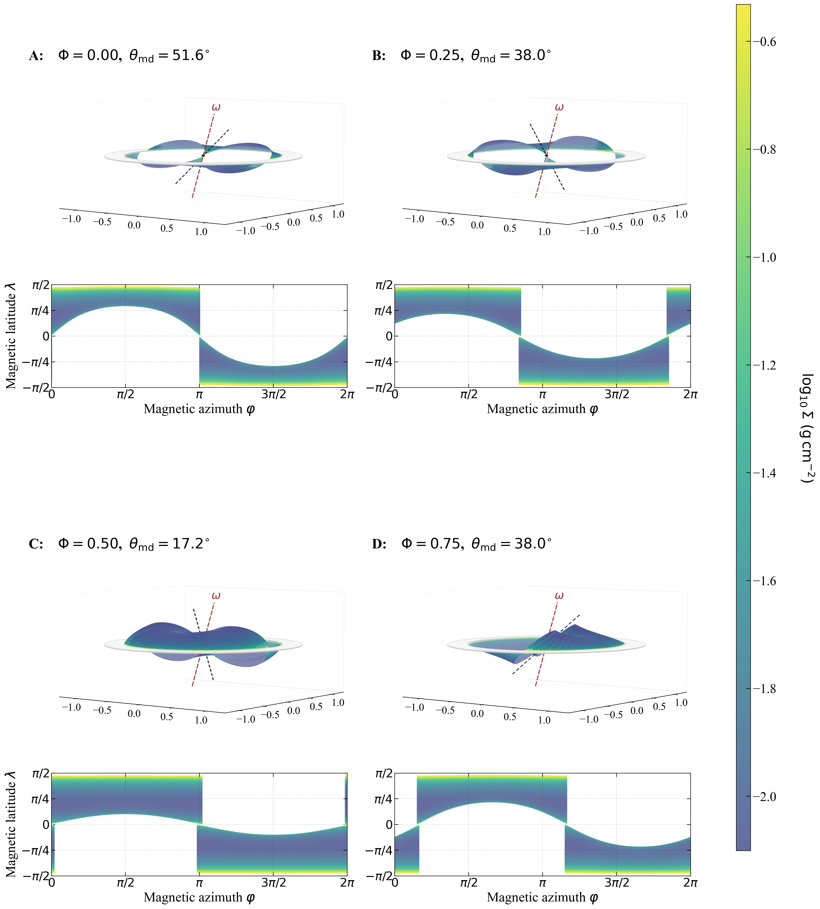<br />
图注：{Geometry of magnetically channelled accretion onto a NS at four rotational phases. The upper panels show the three-dimensional structure of the accretion flow, with the accretion disc (grey), NS (black), magnetic axis (dotted line), spin axis (dashed line), and the two magnetospheric accretion curtains. The colour of the flow indicates the local surface density of the accreting plasma. The lower panels show the corresponding distributions of the surface density, $\Sigma$, over the magnetospheric surface as a function of magnetic azimuth, $\varphi$, and magnetic latitude, $\lambda$. The white dashed curve marks the intersection of the disc mid-plane with the dipolar magnetic field, while the dotted curves indicate the finite thickness of the accretion disc. The adopted geometry corresponds to a magnetic obliquity of $\alpha=0.6$ rad and a misalignment angle between the spin axis and the disc normal of $\beta=0.3$ rad. The four panels correspond to rotational phases $\Phi=0.00$, $0.25$, $0.50$, and $0.75$.}<br />
对应解读：建议重点查看的图表第1条与第2条；对应关键图表逐图导读中的几何定义和磁层供给相位结构段落。<br />
入选理由：这张图在四个自转相位上直接展示磁层通道和表面密度分布，比静态示意图更能体现“盘—磁层耦合随相位变化”的过程。它对理解两个磁极如何在不同相位被不同程度喂料很有帮助。<br />
来源与置信度：\(arxiv_source\)；high；\(arxiv_source\) / 52_mass_accretion_pulses.tex:figure[2]</p>
<h4 id="_89">强相关工作</h4>
<p>这项工作和“盘吸积磁层耦合”“倾斜磁层”“脉冲轮廓不对称”属于同一类问题，但切入点更偏向质量装载阶段，而不是辐射转移阶段。可以对照的相似工作包括：经典磁层吸积模型、倾斜盘或翘曲盘中的相位调制、以及用吸积柱束射或局域吸收解释脉冲不对称的观测论文。检索关键词建议用“tilted disc accretion X-ray pulsar”“misaligned magnetosphere pulse profile asymmetry”“phase-resolved spectroscopy accretion curtain”“ULX pulsar pulse shape asymmetry”。</p>
<p>从更广的文献脉络看，这篇文章和磁化白矮星、T Tauri 星中的倾斜磁层吸积也有方法上的共通性：只要存在旋转的非轴对称磁场，稳恒供给就可能被转化成周期性输运。它与那些强调发射区内部非对称、复杂多极磁场或纯吸收效应的解释并不完全冲突，更像是提供了一个更上游的几何基线。要找对比文献，可检索“magnetospheric accretion phase modulation review”“accretion curtain asymmetry review”“rotating oblique magnetosphere numerical simulation”。</p>
<p><strong>同一事件 / 同类源线索</strong>：</p>
<ul>
<li><a href="https://arxiv.org/abs/2608.27691">https://arxiv.org/abs/2608.27691</a></li>
<li><a href="https://arxiv.org/pdf/2608.27691">https://arxiv.org/pdf/2608.27691</a></li>
</ul>
<p><strong>相似工作</strong>：</p>
<p>（未提供）</p>
<p><strong>基础理论 / 方法工作</strong>：</p>
<p>（未提供）</p>
<p><strong>相反观点 / 张力线索</strong>：</p>
<p>（未提供）</p>
</details>
<h3 id="9-exploring-the-capabilities-of-combined-modelling-strategies-for-supernova-with-relativistic-jets-using-redback">9. Exploring the capabilities of combined modelling strategies for supernova with relativistic jets using Redback</h3>
<ul>
<li>来源：arXiv / astro-ph.HE</li>
<li>链接：https://arxiv.org/abs/2608.27567v1</li>
<li>作者：L. Cotter, N. Sarin, A. Martin-Carrillo</li>
<li>评分：novelty 7/10，importance 7/10，relevance 8/10，final 8.35/10</li>
<li>推荐理由：GRB-SN 联合建模与参数偏差评估，对伽马暴余辉/超新星联合分析非常实用，方法上有直接可复用性。</li>
</ul>
<p><strong>中文题目</strong>：用 Redback 探索带相对论喷流的超新星联合建模能力</p>
<p><strong>做了什么</strong>：这篇文章系统比较了三种常见的 GRB-SN 光变分析策略：把喷流余辉和超新星分别独立拟合、先做余辉扣除再拟合超新星、以及直接对两类辐射做联合拟合。作者用 1000 组模拟数据测试这些方法在不同光变形态下的参数恢复能力，结果显示：单独拟合即便表面上能把曲线拟合得不错，也会把物理参数带偏；余辉扣除法则因为没有把余辉不确定度完整传递下去，容易低估误差。最稳妥的做法是联合建模，尤其在有 X 射线和射电数据时，能够更可靠地区分喷流和超新星的贡献。</p>
<p><strong>为什么重要</strong>：这项工作重要之处不在于又拟合了一批光变，而是在方法论上直接指出：对 GRB-SN 这类多组分系统，"先拆开看" 往往会把偏差藏在看似漂亮的拟合里。它把分析流程本身变成了研究对象，回答的是“哪种推断策略真的能回收真参数”而不是“哪条曲线看起来更平滑”。</p>
<p><strong>理论 / 观测 / 仪器方法价值</strong>：对理论和观测分析的价值都很直接：它给出了一套可量化比较不同光变分解策略的框架，说明在存在喷流余辉、超新星和宿主背景同时贡献时，参数退化和误差传播会如何扭曲物理解读。对方法学来说，这类模拟检验可以作为后续真实样本分析的前置标准，避免把分析流程当成中性的黑箱。</p>
<p><strong>为什么应该关注</strong>：如果你关心 GRB-SN 的物理参数、母体比较、喷流折断时刻、或超新星爆发能量和镍质量的统计分布，这篇文章很值得看。它提醒你：很多文献里看上去一致的参数，可能只是因为用了相似但有偏的分解方法，而不是真的反映了天体的本征差异。</p>
<details class="paper-detail">
<summary>展开详细解读：文章讲解、背景、理论、重点章节、图表与相关工作</summary>
<h4 id="_90">文章详细讲解</h4>
<p>这篇文章要解决的核心科学问题是：当一个超新星事件同时伴随相对论喷流时，观测到的多波段光变往往是多个辐射分量叠加的结果，那么常见的分步拟合、余辉扣除和联合拟合三种策略，究竟哪一种更能可靠恢复真实物理参数。这个问题之所以重要，是因为 GRB-SN 光变本来就容易出现时间上和频段上的重叠：喷流余辉可能在早期主导，超新星峰值则在较晚时段显现，若分析策略本身会引入偏差，那么后续所有关于喷流能量、折断时刻、超新星光度和镍产额的结论都可能被系统性扭曲。</p>
<p>作者没有直接拿真实复杂源做“谁更漂亮”的比较，而是用 Redback 构造了 1000 组模拟数据，这一点很关键，因为它允许他们知道每组数据的真实注入参数，从而把“拟合得像不像”转化为“参数恢复得准不准”。他们把样本分成三类形态：一种由超新星主导，一种由喷流余辉主导，还有一种两者贡献接近；同时还考察了喷流折断发生在早期和晚期两种情形。这样做的目的不是增加花哨设置，而是专门去打最容易出问题的退化区间，因为真正麻烦的往往不是极端简单或极端单一的光变，而是两种分量都不能忽略的中间态。</p>
<p>关键结论非常明确：把两个组分拆开独立拟合，会在参数上产生明显偏差，即便最后得到的最佳拟合光变看起来仍然“挺像”。这说明视觉上的拟合优度不能替代参数恢复的正确性。余辉扣除法也没有幸免，因为先把喷流当作一个单独问题拟合，再把其最佳模型从总光变中减去，会把喷流本身的不确定度压缩掉，导致后续超新星拟合面对的是一个看似干净、实际误差被低估的数据集。与之相比，联合拟合把两个组分放在同一个后验框架里，同时约束彼此，得到的参数更接近注入值，也更能反映真实的不确定度结构。</p>
<p>这篇工作的局限也很清楚。它主要在模拟层面证明方法优劣，因此结论依赖于所采用的喷流和超新星参数化是否足够代表真实数据的复杂性；如果真实源里还有显著的尘埃消光演化、色散、宿主星系污染、反常的早期闪光或额外能量注入，那么联合模型也可能需要进一步扩展。下一步最自然的方向，是把这种模拟验证流程推广到真实 GRB-SN 样本，并系统比较不同频段组合对参数退化的打破能力，尤其是将 X 射线和射电约束纳入统一推断时，联合模型到底能把哪些原本模糊的参数真正拉开。</p>
<h4 id="_91">关键结果是怎么做出来的</h4>
<p>这篇文章最核心的结果来自 1000 组合成数据，而不是单个天体。作者把这些模拟分成三类光变形态：喷流余辉主导、超新星主导、以及两者贡献相近；再在每一类里测试喷流折断时间较早和较晚时的恢复表现。这样的设计很像压力测试：不是问模型能不能拟合一条线，而是问在最容易退化的边界条件下，哪种分析流程还能把真实参数找回来。</p>
<p>第一层证据链是“注入值对恢复值”。对于每个模拟样本，作者都知道真参数，所以可以直接比较后验中位数或最佳拟合值与注入值之间的偏差。这里真正要看的不是某一次拟合是否低残差，而是 1000 次重复后偏差分布是否整体偏移，以及不确定度区间是否覆盖真实值。文章的结论是：独立拟合的残差可能并不难看，但恢复参数已经出现系统偏差，这正是这类问题最危险的地方。</p>
<p>第二层证据链是余辉扣除的误差传播问题。余辉扣除法看起来比独立拟合更“干净”，但它默认了一个问题：喷流模型本身的不确定度可以被忽略，或者至少不会显著影响后续超新星拟合。作者的结果表明这不成立，因为余辉拟合的不确定度没有被完整传递到扣除后的光变中，导致超新星参数的置信区间过于乐观，覆盖率变差。换句话说，扣除法把前一步的模型误差当成了确定量，这是统计上最常见也最隐蔽的错误之一。</p>
<p>第三层证据链是联合拟合对不同形态的鲁棒性。对于喷流主导或超新星主导的极端情形，很多方法都可能勉强工作，但在两者贡献接近、或者喷流折断发生在与超新星上升段重叠的时间窗内，独立分析特别容易把一个分量的特征误认成另一个分量。联合模型的优势就在于它把这些退化写进同一个似然里，让不同波段、不同时间段共同约束同一组参数。文章强调，加入 X 射线和射电数据后，这种优势更明显，因为这些频段对喷流余辉的敏感度远高于超新星热辐射，能显著减少混淆。</p>
<p>如果从结果图的角度看，最值得盯住的是三类图：一类是注入参数与恢复参数的散点或密度图，用来看是否沿对角线分布；一类是不同方法下的偏差或 pull 分布，用来看系统偏差和误差归一化是否合理；还有一类是早晚折断时的分组比较，用来看方法是否对时间结构敏感。作者实际上是在用这些统计诊断证明："拟合优度好" 和 "物理恢复准" 是两回事，后者才是 GRB-SN 分析真正需要的标准。</p>
<details class="paper-subdetail">
<summary>展开背景、理论、公式、模型、章节和图表导读</summary>
<h4 id="_92">背景知识</h4>
<p>GRB-SN 研究的基本对象，是长伽马暴及其相关超新星，常常被解释为大质量恒星塌缩后形成相对论喷流，同时伴随一场宽线型 Ic 超新星爆发。观测上，这类系统的可见光和近红外曲线通常包含至少两个主要成分：早期由喷流余辉主导的非热辐射，和较晚由超新星扩散加热主导的热辐射。问题在于，这两个成分常常在时间和频率上重叠，因此很难用单一简单模型把它们完全拆开。</p>
<p>历史上，很多工作采用“先看喷流，再看超新星”或“先减去余辉，再拟合超新星”的分步思路。这种做法在数据稀疏或波段覆盖有限时很自然，因为它让问题变得可处理。但分步法的核心隐患也很明确：前一步的模型误差不会自动传到后一步，于是最终得到的超新星参数往往显得过于确定。更麻烦的是，不同论文可能采用不同的余辉模型、不同的消光处理、不同的宿主扣除策略，导致跨样本比较时物理参数并不真正同质。</p>
<p>从理论上讲，喷流余辉是同步辐射谱和相对论外激波动力学的结果，通常在多个波段呈现幂律衰减和频谱断点；超新星光变则更接近扩散加热和放射性衰变控制下的热过程。前者对喷流能量、环境密度、视角和折断时间敏感，后者则对镍质量、扩散时标和包层性质敏感。正因为物理机制不同，联合建模才有希望利用波段互补性把参数区分开，而不是靠事后扣除来“清理”数据。</p>
<p>这类问题现在值得重新看，是因为多波段观测越来越密集，X 射线、光学和射电数据开始能覆盖喷流余辉与超新星的重叠阶段。以前由于数据不够，分步法还能勉强容忍；现在数据更好，反而更需要更严格的推断框架，否则高质量数据只会把系统误差暴露得更清楚。常见误区是把“看起来平滑的拟合曲线”误认为“正确的物理分解”，或者把余辉扣除当成一种无代价的预处理。实际上，若没有完整传播误差，扣除法本身就会成为偏差来源。</p>
<h4 id="_93">基础理论 / 方法脉络</h4>
<p>这篇文章涉及的物理图像可以先从两个发光源想起。喷流余辉来自相对论外激波，当喷流冲入周围介质后，激波加速电子并产生同步辐射，于是光变在多个频段上呈现幂律演化；超新星光变则主要来自爆炸抛射物中放射性同位素的衰变能和光子扩散过程，典型上在较晚时刻形成一个宽峰。这意味着总观测光变不是单一机制，而是多个物理过程在不同时间窗内叠加的结果。</p>
<p>在最简模型里，总通量可以写成几部分的和：喷流余辉、超新星和宿主背景。真正的麻烦是这三者并不在所有波段都有相同权重。喷流在 X 射线和射电中往往更显著，超新星在光学和近红外更亮，宿主背景则在晚期或低信噪比时变得不可忽略。因此，能否靠多波段联合约束把这些成分拆开，直接决定参数是否可辨识。</p>
<p>联合建模之所以比分步法更强，不只是因为它更“完整”，而是因为它把退化关系显式写进同一个概率模型里。比如喷流的归一化、衰减斜率和折断时间会互相相关，而超新星的峰值亮度、扩散时标和晚期衰减也会彼此耦合；如果先固定其中一部分再拟合另一部分，就等于人为切断相关性，导致后续后验被错误压缩。真实数据中常见的系统误差，还包括消光、宿主减除误差、零点校准、非同时多波段采样和观测窗口不连续，这些都会让分步法更脆弱。</p>
<p>从观测策略上说，X 射线和射电数据特别重要，因为它们更直接地约束喷流余辉的动力学演化；而光学和近红外更能看见超新星热峰。若只有单一波段，喷流和超新星在时间上可能都能解释同一条曲线，于是参数会高度退化。文章强调的不是某个新物理机制，而是一个更基础的问题：在这种多分量系统里，数据越复杂，越需要把复杂性放回模型，而不是靠预处理把它删掉。</p>
<h4 id="_94">公式与推导</h4>
<p>从观测建模开始，最直接的写法是把总观测通量分解为各个物理分量之和：</p>
<div class="math-display">\[F_{\nu}^{\mathrm{obs}}(t)=F_{\nu}^{\mathrm{AG}}(t)+F_{\nu}^{\mathrm{SN}}(t)+F_{\nu}^{\mathrm{host}}\]</div>
<p>这里的 \(F_{\nu}^{\mathrm{obs}}(t)\) 是在频率 \(\nu\) 和时刻 \(t\) 看到的总通量，\(F_{\nu}^{\mathrm{AG}}(t)\) 是喷流余辉，\(F_{\nu}^{\mathrm{SN}}(t)\) 是超新星贡献，\(F_{\nu}^{\mathrm{host}}\) 是宿主星系背景。联合拟合的第一步，就是把这三个项放进同一个模型，而不是先验地假设其中某一项已经“被消掉”了。</p>
<p>喷流余辉在许多时间段可以用幂律近似。若把折断前后的演化简化成两段幂律，就有</p>
<div class="math-display">\[F_{\nu}^{\mathrm{AG}}(t)=F_0\left(\frac{t}{t_0}\right)^{-\alpha_1},\quad t<t_b\]</div>
<div class="math-display">\[F_{\nu}^{\mathrm{AG}}(t)=F_0\left(\frac{t_b}{t_0}\right)^{-\alpha_1}\left(\frac{t}{t_b}\right)^{-\alpha_2},\quad t\ge t_b\]</div>
<p>其中 \(F_0\) 是归一化，\(t_0\) 是参考时刻，\(\alpha_1\) 和 \(\alpha_2\) 是折断前后衰减指数，\(t_b\) 是折断时间。这个表达式的作用是把“早期主导”与“晚期主导”这两种余辉动力学放在同一框架里，便于比较早折断和晚折断对参数恢复的影响。</p>
<p>超新星部分通常可以由扩散加热模型近似。一个常见的写法是 Arnett 型积分解：</p>
<div class="math-display">\[L_{\mathrm{SN}}(t)=\frac{2}{t_d}e^{-t^2/t_d^2}\int_0^t e^{t'^2/t_d^2}\frac{t'}{t_d}Q_{\mathrm{dep}}(t')\,dt'\]</div>
<p>这里的 \(L_{\mathrm{SN}}(t)\) 是超新星光度，\(t_d\) 是扩散时标，\(Q_{\mathrm{dep}}(t)\) 是沉积到抛射物中的加热率，\(t'\) 是积分变量。这个公式体现了“能量注入”和“光子逃逸”之间的竞争：越大的 \(t_d\) 意味着辐射越难及时逃逸，峰值就越宽、越晚。</p>
<p>若把镍和钴衰变视为主要加热源，则可以写成</p>
<div class="math-display">\[Q_{\mathrm{dep}}(t)=M_{\mathrm{Ni}}\epsilon_{\mathrm{Ni}}e^{-t/\tau_{\mathrm{Ni}}}+M_{\mathrm{Co}}\epsilon_{\mathrm{Co}}\left(e^{-t/\tau_{\mathrm{Co}}}-e^{-t/\tau_{\mathrm{Ni}}}\right)\]</div>
<p>其中 \(M_{\mathrm{Ni}}\) 和 \(M_{\mathrm{Co}}\) 是相关放射性核素质量，\(\epsilon_{\mathrm{Ni}}\) 和 \(\epsilon_{\mathrm{Co}}\) 是单位质量能量释放率，\(\tau_{\mathrm{Ni}}\) 和 \(\tau_{\mathrm{Co}}\) 是衰变时标。它的物理意义是：超新星峰亮度与加热总量有关，而峰宽则更受扩散时标控制。</p>
<p>从辐射传输到观测通量，还需要把本征光度映射到观测频率和距离。若只写最基本的距离缩放，可以用</p>
<div class="math-display">\[F_{\nu_{\mathrm{obs}}}(t_{\mathrm{obs}})=\frac{1+z}{4\pi d_L^2}L_{\nu_{\mathrm{em}}}(t_{\mathrm{em}})\]</div>
<p>并满足</p>
<div class="math-display">\[\nu_{\mathrm{em}}=(1+z)\nu_{\mathrm{obs}},\quad t_{\mathrm{em}}=\frac{t_{\mathrm{obs}}}{1+z}\]</div>
<p>这里 \(z\) 是红移，\(d_L\) 是光度距离。这个关系告诉你：同一物理过程在不同红移下会被拉伸到不同的观测时间轴上，因此联合拟合时必须把时间和频率变换统一处理。</p>
<p>最后，真正执行拟合时，需要把模型和数据联系起来。若第 \(i\) 个数据点的观测值是 \(f_i\)，模型预测是 \(m_i\)，测量误差是 \(\sigma_i\)，则高斯似然可写成</p>
<div class="math-display">\[\ln\mathcal{L}=-\frac{1}{2}\sum_i\left[\frac{(f_i-m_i)^2}{\sigma_i^2}+\ln\left(2\pi\sigma_i^2\right)\right]\]</div>
<p>对应的后验分布是</p>
<div class="math-display">\[p(\theta\mid D)\propto \mathcal{L}(D\mid\theta)\,p(\theta)\]</div>
<p>其中 \(\theta\) 表示全部模型参数，\(D\) 是数据集，\(p(\theta)\) 是先验。文章真正关心的，不只是最优参数 \(\hat{\theta}\)，还包括模型是否能在重复模拟中稳定恢复注入值。</p>
<p>为了量化“恢复得准不准”，还可以定义偏差指标</p>
<div class="math-display">\[\Delta_{\theta}=\frac{\hat{\theta}-\theta_{\mathrm{inj}}}{\sigma_{\hat{\theta}}}\]</div>
<p>这里 \(\theta_{\mathrm{inj}}\) 是注入真值，\(\sigma_{\hat{\theta}}\) 是估计不确定度。若 \(\Delta_{\theta}\) 系统性偏离零，说明方法有偏；若其分布过窄，则说明误差被低估。这个诊断正是本文比较三种策略优劣的统计核心。</p>
<h4 id="_95">模型拟合 / 应用方法</h4>
<p>这篇文章本质上是在比较三类推断流程：独立拟合喷流和超新星、先拟合喷流再做扣除、以及直接联合拟合。前三者在程序上都能跑出结果，但统计含义完全不同。独立拟合默认另一个成分可以忽略；扣除法默认前一步余辉模型的误差可以安全忽略；联合拟合则把所有成分放进同一个后验，至少在原则上保留了参数相关性和误差传播。</p>
<p>从模型参数的角度看，喷流部分通常会涉及归一化、时间衰减指数、折断时间和可能的谱演化；超新星部分则会牵涉峰值亮度、扩散时标、放射性加热强度以及可能的消光校正。真正麻烦的地方在于，这些参数之间天然存在退化：例如更亮的喷流与更早的折断时间可能会在早期光变上相互替代，更大的扩散时标与更高的镍质量也可能在晚期光变中产生相似的宽峰。若用分步法，这些退化往往会在前一步被“吸收”掉，后一步再也看不见。</p>
<p>似然函数的选择决定了模型如何看待残差。若误差主要由测光噪声主导，高斯似然是合理起点；但在真实光变中，宿主减除误差、消光误差、非同时采样和模型失配都会让残差呈现非理想行为。联合拟合的优势之一，是它更容易把这些系统误差放回参数空间里，而不是把它们伪装成某一组物理参数的偏移。对方法学来说，这比单纯追求更小的残差平方和重要得多。</p>
<p>实际应用时，最该看的是后验形状、残差分布和覆盖率，而不只是最佳拟合曲线。若一个方法在多数模拟里都给出很窄的置信区间，但这些区间却经常没有覆盖真值，那就说明它低估了不确定度。本文通过 1000 组模拟数据比较三种流程，实际上就是在检查统计校准是否正确。文章最后推荐联合建模，背后的理由不是它一定更复杂，而是它在参数恢复、误差传播和跨波段一致性上都更接近正确的统计问题设定。</p>
<p>如果把这类工作放到真实数据里，最值得警惕的是“好看的残差”与“可信的参数”之间的断裂。一个模型可能在光学单波段上拟合得不错，但一旦加入 X 射线或射电约束，原本隐藏的偏差就会暴露出来。这也是为什么这类研究的实际价值很高：它不是再造一个拟合器，而是在教我们如何判断一个拟合结果到底能不能拿来做物理解释。</p>
<h4 id="_96">重点章节 / 结果段落怎么读</h4>
<p>如果按常见论文结构来读，第一部分通常会交代 GRB-SN 的多组分问题以及为什么既往分步法会带来偏差。这里建议重点看作者如何定义“独立拟合”“余辉扣除”和“联合拟合”三种策略，因为后面所有模拟对比都建立在这些定义上。</p>
<p>第二部分是模拟数据与模型设置，这是整篇文章最像方法论文的地方。要注意作者如何构造 1000 组数据、怎样划分三种光变形态、以及为什么特意测试早折断和晚折断两种余辉情景。读这一段时，不要只盯着参数表，更要看哪些参数被固定、哪些参数被允许浮动，因为这决定了退化是不是被有意放大了。</p>
<p>第三部分是结果对比，通常会给出参数恢复图、偏差统计和不同方法的性能排序。这里的读法是：先看注入值和恢复值是否沿对角线分布，再看不同方法的误差条是否覆盖真值，最后比较在不同形态和不同折断时刻下的表现是否一致。只要发现某种方法在某一类样本上系统性偏离，就说明它不是普适方案。</p>
<p>第四部分一般是讨论和应用建议，这里最值得看的不是结论句，而是作者如何把模拟结果翻译成观测分析建议。例如哪些波段组合最有帮助，为什么 X 射线和射电能显著改进喷流约束，什么时候余辉扣除最危险。若有附录或稳健性检验，也值得看，因为那往往包含了模型选择和误差传播的关键细节。</p>
<h4 id="_97">建议重点查看的图表</h4>
<ol>
<li>模拟流程或方法示意图：重点看三种分析策略如何定义，哪些成分被单独拟合，哪些成分进入联合模型。</li>
<li>三类光变形态示意图：重点看喷流主导、超新星主导和两者相当时，曲线重叠发生在哪些时间窗。</li>
<li>注入参数对恢复参数散点图：重点看是否沿 \(1\!:\!1\) 线分布，是否存在系统性偏移或非对称散布。</li>
<li>参数偏差或 pull 分布图：重点看均值是否偏离零、分布宽度是否与单位方差一致。</li>
<li>早折断与晚折断对比图：重点看不同折断时刻是否改变方法排序，尤其是独立拟合和联合拟合的差距。</li>
<li>残差或 \(\chi^2\) 统计图：重点看表面拟合优度是否掩盖了参数偏差。</li>
<li>若有覆盖率或置信区间校准图：重点看真值落入 \(68\%\) 或 \(95\%\) 区间的频率是否合理。</li>
</ol>
<h4 id="_98">关键图表逐图导读</h4>
<p>图 1：如果是方法或流程图，先看输入是什么数据、输出是什么参数、三种策略各自在哪一步分叉。读图时不要只看箭头，要看哪个步骤丢掉了误差传播，这往往就是偏差来源。</p>
<p>图 2：如果是模拟光变示意，横轴通常是时间，纵轴是通量或星等，不同颜色代表喷流和超新星分量。重点看早期和晚期谁主导，以及喷流折断是否与超新星上升段重叠，因为这正是退化最严重的区间。</p>
<p>图 3：如果是注入值对恢复值的散点图，最重要的是点云是否围绕对角线、是否在某些参数区间系统偏上或偏下。若某种方法的点云整体偏移但误差棒又很小，这通常意味着方法自信但有偏。</p>
<p>图 4：如果是偏差、pull 或覆盖率图，重点看分布中心是否在零附近、宽度是否合理、尾部是否过厚。理想情况下，偏差应该无系统偏移，pull 的宽度应接近一，覆盖率应与标称置信度一致；若不是，就说明不确定度估计不可靠。</p>
<p>图 5：如果是早折断和晚折断的对比面板，重点看不同策略在这两种情况下的性能排序是否变化。若独立拟合在早折断时尤其糟糕，而联合拟合始终稳定，这就是联合建模更稳健的直接证据。</p>
</details>
<h4 id="_99">论文原图 / 可嵌入图片</h4>
<p><strong>Fig03</strong><br />
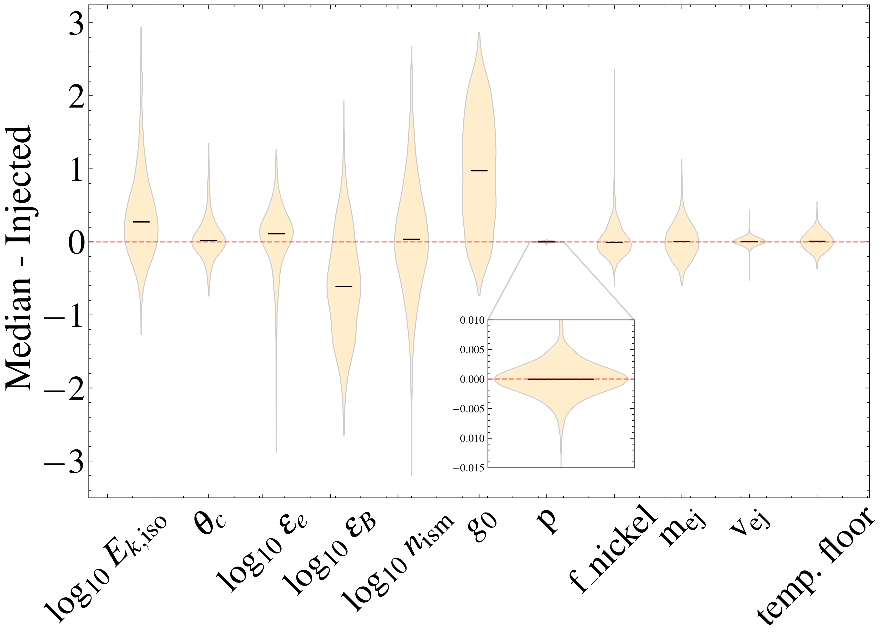<br />
图注：Violin plots showing the difference between the median posterior of the fits and the injected simulation parameters for the GRB-SN combined fitting. The dashed line marks zero difference.<br />
对应解读：关键图表逐图导读：图 3 注入参数对恢复参数散点图 / 参数偏差分析<br />
入选理由：这张图直接给出联合拟合中各参数的“恢复值−注入值”分布，最能检验是否存在系统性偏移；比单看最佳拟合曲线更能体现方法是否真正把真值恢复出来。<br />
来源与置信度：\(arxiv_source\)；high；\(arxiv_source\) / \(aa_example.tex\):figure[3]</p>
<p><strong>Fig06</strong><br />
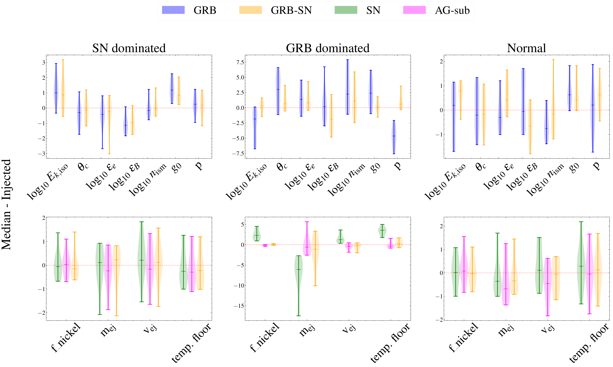<br />
图注：Violin plots representing the performance of each modelling method in predicting the injected parameter for twenty simulated datasets for each of the three GRB-SN cases with an early jet break.<br />
对应解读：关键图表逐图导读：图 5 早折断与晚折断对比图（早折断情形的统计性能）<br />
入选理由：它把早折断条件下三类GRB-SN案例的参数恢复表现汇总成统计分布，最适合比较独立拟合、扣除法和联合拟合在偏差与离散度上的差别。<br />
来源与置信度：\(arxiv_source\)；high；\(arxiv_source\) / \(aa_example.tex\):figure[6]</p>
<p><strong>Fig07</strong><br />
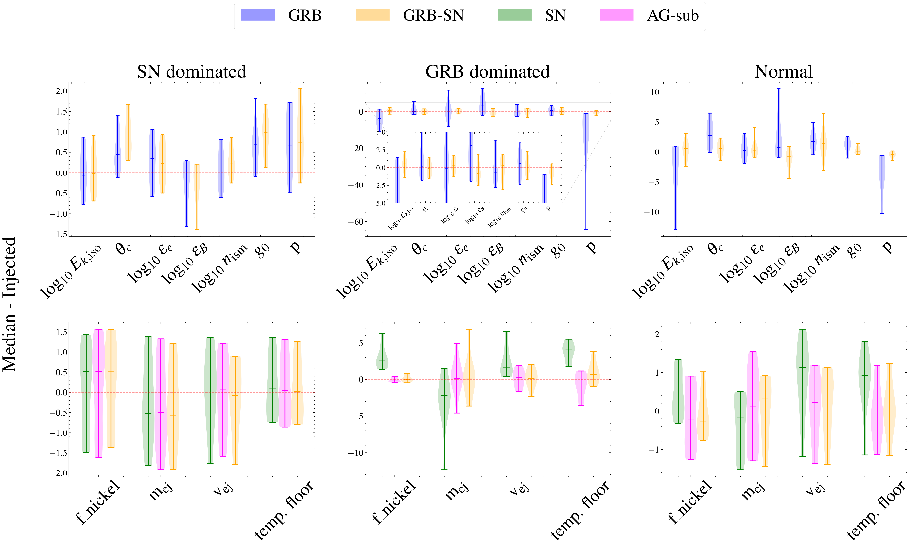<br />
图注：Violin plots representing the performance of each modelling method in predicting the injected parameter for twenty simulated datasets for each of the three GRB-SN cases with a late jet break.<br />
对应解读：关键图表逐图导读：图 5 早折断与晚折断对比图（晚折断情形的统计性能）<br />
入选理由：与 Fig06 配对后可以完整呈现折断时刻变化对方法排序和恢复精度的影响，是报告里讨论“早折断/晚折断是否改变结论”的关键证据。<br />
来源与置信度：\(arxiv_source\)；high；\(arxiv_source\) / \(aa_example.tex\):figure[7]</p>
<p><strong>Fig05</strong><br />
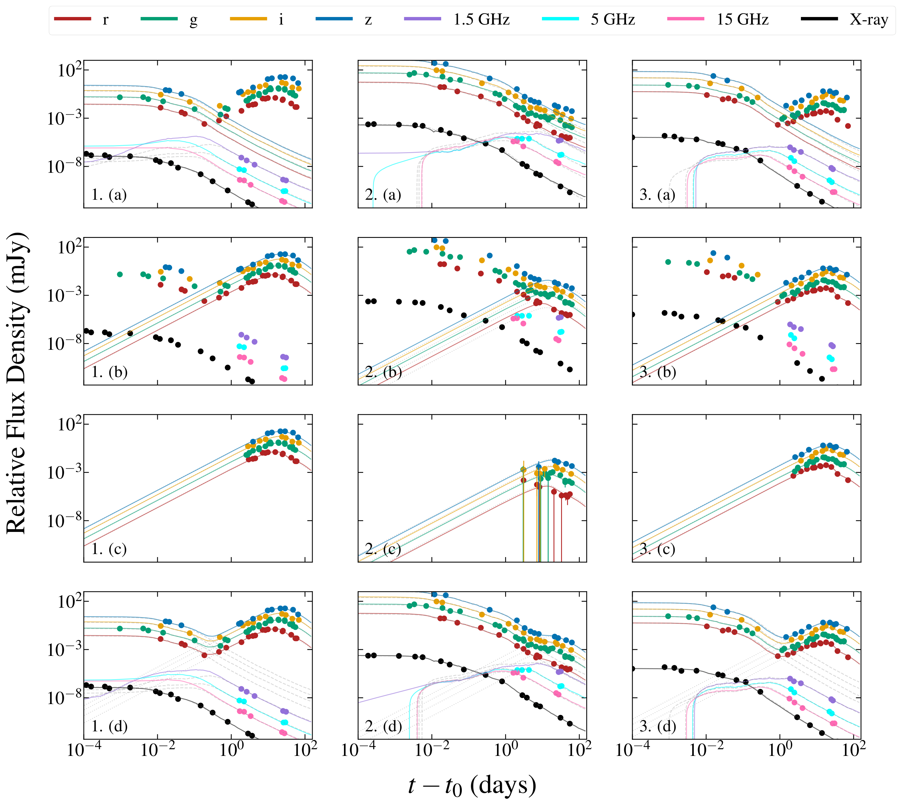<br />
图注：Breakdown of fitting results for three chosen cases of GRB-SNe (columns) with early break times, using four different modelling approaches (rows). The columns are the (1) SN-dominated, (2) GRB-dominated, and (3) normal GRB-SN cases, respectively. The rows are the (a) tophat only model, (b) Arnett only model, (c) afterglow-subtracted method, and (d) our joint fitting model. The dashed grey lines represent the true GRB light curve and the dotted grey lines represent the true SN light curve produced using the injection parameters. Each band is vertically offset for clarity.<br />
对应解读：关键图表逐图导读：图 5 早折断与晚折断对比图（早折断案例的逐面板拟合结果）<br />
入选理由：这张图把真实喷流与超新星分量、以及四种模型策略的拟合结果并排展示，最适合说明“表面拟合看起来不错，但参数仍可能有偏”的核心方法学问题。<br />
来源与置信度：\(arxiv_source\)；high；\(arxiv_source\) / \(aa_example.tex\):figure[5]</p>
<p><strong>Fig04</strong><br />
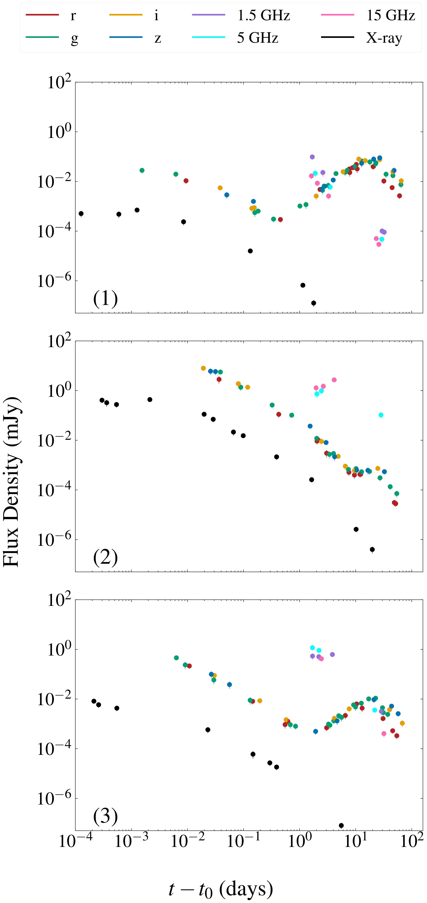<br />
图注：Examples of simulated datasets with (1) a dominant SN, (2) a dominant GRB afterglow and (3) a typical GRB-SN event.<br />
对应解读：关键图表逐图导读：图 2 三类光变形态示意图<br />
入选理由：它清楚展示喷流主导、超新星主导和典型 GRB-SN 三种形态的时间重叠区间，是理解后续参数退化与方法难点的前提图。<br />
来源与置信度：\(arxiv_source\)；high；\(arxiv_source\) / \(aa_example.tex\):figure[4]</p>
<p><strong>Fig11</strong><br />
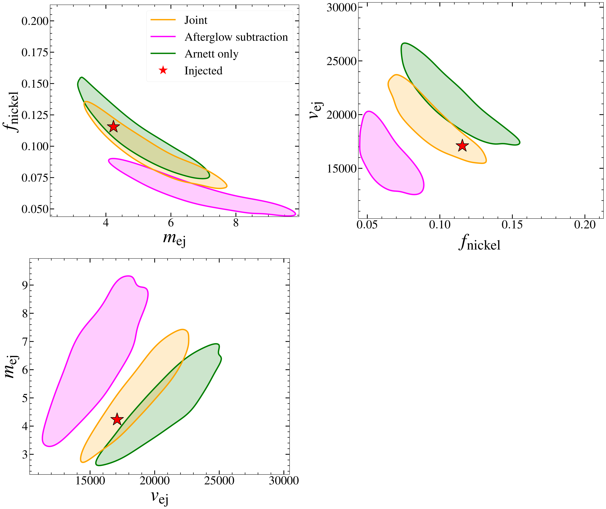<br />
图注：Contour plots displaying correlations between the SN parameters obtained from the multi-band fitting of the normal GRB-SN case with a late jet break with each modelling strategy. Each region represents the $1\sigma$ credible interval of the posterior.<br />
对应解读：模型拟合段落：SN 参数相关性与 1σ 可信区间<br />
入选理由：这张相关性轮廓图能够直接揭示超新星参数之间的退化和联合后验的置信区间结构，比单参数统计更适合支撑“联合建模更稳健”的解释。<br />
来源与置信度：\(arxiv_source\)；high；\(arxiv_source\) / \(aa_example.tex\):figure[11]</p>
<h4 id="_100">强相关工作</h4>
<p>这篇工作和同类 GRB-SN 研究的关系很直接：它关心的是同一类天体在不同分析框架下会不会得到不同的物理结论。历史上，很多 well-observed GRB-SN 个例都用过“余辉减除后再看超新星”的做法，因此这篇文章实际上是在重新审视整个同类对象的分析范式。检索时可以直接用这些关键词：\(\mathrm{GRB\text{-}SN}\)、\(\mathrm{afterglow\ subtraction}\)、\(\mathrm{joint\ light\ curve\ modeling}\)、\(\mathrm{broad\text{-}lined\ Ic\ SN}\)、\(\mathrm{jet\ break}\)、\(\mathrm{Redback}\)。</p>
<p>它也和更广义的瞬变建模文献相连，包括超新星光变的扩散模型、喷流余辉的分段幂律拟合、以及贝叶斯多组分混合模型。常见的历史原型包括 \(\mathrm{SN\ 1998bw/GRB\ 980425}\) 之后的一系列 GRB-SN，后来又有 \(\mathrm{SN\ 2006aj/GRB\ 060218}\)、\(\mathrm{SN\ 2010bh/GRB\ 100316D}\) 等典型个例。与这些工作相比，这篇文章更像是在问：当样本从“个例讨论”走向“族群比较”时，分析方法本身是否已经足够统一。</p>
<p><strong>同一事件 / 同类源线索</strong>：</p>
<ul>
<li><a href="https://arxiv.org/abs/2608.27567v1">https://arxiv.org/abs/2608.27567v1</a></li>
<li><a href="https://arxiv.org/pdf/2608.27567">https://arxiv.org/pdf/2608.27567</a></li>
</ul>
<p><strong>相似工作</strong>：</p>
<p>（未提供）</p>
<p><strong>基础理论 / 方法工作</strong>：</p>
<ul>
<li><a href="https://doi.org/10.1086/159681">https://doi.org/10.1086/159681</a></li>
<li><a href="https://doi.org/10.1086/311269">https://doi.org/10.1086/311269</a></li>
</ul>
<p><strong>相反观点 / 张力线索</strong>：</p>
<p>（未提供）</p>
</details>
<h3 id="10-jug-jax-based-unified-pulsar-timing">10. JUG: JAX-based Unified pulsar timinG</h3>
<ul>
<li>来源：arXiv / astro-ph.HE</li>
<li>链接：https://arxiv.org/abs/2608.27786v1</li>
<li>作者：Matthew T. Miles, Stephen R. Taylor, Matthew Bailes, Aurelien Chalumeau, H. Thankful Cromartie, Kyle A. Gersbach, Rutger van Haasteren, Michael J. Keith</li>
<li>评分：novelty 6/10，importance 7/10，relevance 7/10，final 7.70/10</li>
<li>推荐理由：PTA 脉冲星计时软件方法论文，直接服务于高精度计时与连续引力波搜索；对脉冲星计时阵列读者有实际价值。</li>
</ul>
<p><strong>中文题目</strong>：JUG：基于 JAX 的统一脉冲星定时软件</p>
<p><strong>做了什么</strong>：这篇文章提出了 JUG，一个用 JAX 从头实现的、完全独立的脉冲星定时软件包。它把数据处理、钟差修正、定时模型、拟合与噪声建模放进同一条可编程管线里，目标是应对脉冲星计时阵列数据正在变大、变复杂的现实。作者最核心的结论是：JUG 在与 PINT 达到皮秒级一致的同时，速度比 PINT 快五十倍以上，并且在若干任务上与 Tempo2 相当，还能处理百万级到达时刻数据。</p>
<p><strong>为什么重要</strong>：它重要不只是因为“更快”，而是因为脉冲星计时正在从小样本手工拟合，转向大规模、混合噪声、需要频繁重拟合和交互探索的数据分析。JUG 把自动微分、向量化和 GPU 能力带进了定时软件本体，意味着定时、噪声和确定性信号搜索不再必须拆成几套彼此割裂的工具。</p>
<p><strong>理论 / 观测 / 仪器方法价值</strong>：对理论上，它把频繁使用的线性化定时方程、协方差噪声模型和连续引力波等确定性信号模型统一到一个可微框架里，便于做高维参数估计和灵敏度分析。对观测上，它让大 PTA 数据集的拟合、残差检查和噪声回收更接近实时交互，而不是每次都要等待漫长的批处理。对方法上，它展示了 JAX 这类现代数值框架可以在严肃天文软件里做到“Python 写法、编译速度、GPU 加速、结果可复现”。</p>
<p><strong>为什么应该关注</strong>：如果你关心 PTA、脉冲星定时噪声、连续引力波搜索，或者任何需要反复重算残差和协方差的高维拟合，这篇文章很值得看。它回答的是一个越来越现实的问题：当数据量和模型复杂度继续上升时，决定科学产出的瓶颈可能不再是理论，而是软件架构和计算吞吐。</p>
<details class="paper-detail">
<summary>展开详细解读：文章讲解、背景、理论、重点章节、图表与相关工作</summary>
<h4 id="_101">文章详细讲解</h4>
<p>这篇工作要解决的科学问题很直接：脉冲星计时数据已经从“少量高质量到达时刻”变成“海量、异构、带复杂噪声和多种系统误差的时间序列”，传统定时软件在可维护性、扩展性和加速能力上开始吃紧。对 PTA 来说，分析流程通常既要拟合确定性的旋转与轨道参数，又要同时处理白噪声、红噪声、色散量变化和可能的共同信号；如果软件栈分裂成多个工具，模型和实现就很容易不一致。JUG 的目标不是重做一个更花哨的前端，而是把整个定时链路重新组织成一个统一、独立、可加速、可微分的计算系统。</p>
<p>作者的做法是把从数据读入、时间标准转换、钟差修正、参考系变换、定时模型评估到参数拟合的各步都自己实现出来，而不是依赖外部定时包拼接。这样做的关键收益是：模型可以直接写成 JAX 风格的函数，自动微分可以自然给出梯度，JIT 编译可以把 Python 代码变成接近手写数值代码的执行效率，向量化与 GPU 又能把大量到达时刻并行处理。换句话说，JUG 不是把旧流程“翻译”到 Python，而是重构了计算图，使定时和噪声分析成为同一个数值问题。</p>
<p>结果上，作者展示了 JUG 在准确性和性能两个维度都过了门槛。它与 PINT 的结果在皮秒量级一致，说明新实现没有用“快但粗”的近似去换速度；同时它比 PINT 快五十倍以上，且在若干基准上接近 Tempo2 的吞吐，表明现代可编译 Python 并不必然比传统 C/C++ 方案慢。更重要的是，JUG 不只是算残差，它还能在包含复杂随机噪声和连续引力波等确定性信号的场景里恢复已知参数，说明它面向的是科研实际任务，而不是只跑合成玩具例子。</p>
<p>局限也很清楚：任何完全独立实现的软件都要经历更广泛的交叉验证，尤其要覆盖不同望远镜后端、宽带定时、复杂二进制系统、极端低信噪比数据和各种边界条件。JUG 当前展示的是“设计方向正确且基准表现优秀”，但它要真正进入社区主流，还需要在长期维护、与既有工作流兼容、以及更多物理模块的完整性上继续扩展。下一步最值得期待的是把它和更丰富的噪声层级、联合似然和实时分析进一步耦合，让定时软件从“拟合工具”升级成“推断平台”。</p>
<h4 id="_102">关键结果是怎么做出来的</h4>
<p>本文最重要的证据链其实有三条：速度、精度、恢复能力。速度基准直接回答了“新框架是否值得迁移”的工程问题，作者用不同规模的数据集测试了运行时间，并显示 JUG 可以处理到百万级到达时刻而不崩溃；这类结果通常要同时看冷启动编译开销和热启动稳态吞吐，因为 JAX 这类框架的首次编译时间并不代表长期性能。论文强调 JUG 比 PINT 快五十倍以上，这个结论意味着在重复拟合、网格搜索和交互式调参场景里，节省的不只是总时长，还有试错成本。</p>
<p>第二条证据链是数值一致性。作者把 JUG 和 PINT 在同一批到达时刻、同一定时模型下的结果进行逐项比较，重点看的是残差、拟合参数以及最终预测到达时刻是否在皮秒量级内一致。这里的关键不是只看某个参数的差值，而是看整个模型链上的误差是否被控制住，因为脉冲星定时里一个很小的系统偏差就可能在长时间基线下积累成明显残差。皮秒级一致性说明 JUG 不是“近似实现”，而是真正达到了高精度复现。</p>
<p>第三条证据链是参数恢复。对定时软件来说，最有说服力的验证不是跑得快，而是在已知注入参数的合成数据上能否把时钟误差、旋转参数、噪声幅度或谱指数之类的量找回来。作者报告 JUG 能可靠恢复已知的定时模型参数和噪声参数，这说明它的拟合目标函数、梯度和数值优化流程没有明显偏差。对于随机过程参数，通常还要看后验中心值、置信区间或不确定度是否合理，而不只是点估计是否接近真值。</p>
<p>第四条证据链是对复杂信号的兼容性。JUG 明确把连续引力波等确定性信号纳入可交互分析流程，这意味着它不仅做传统的时序拟合，还能把信号搜索嵌进同一个残差框架中。真正重要的地方在于，作者把“频繁主义定时”和“贝叶斯噪声分析”之间那条常被人为切断的链重新接起来：同一套模型既能做快速点估计，也能作为更重的后验推断前端。读论文时建议重点看性能基准图、与 PINT 的逐项差值图，以及参数恢复散点图或残差分布图，这三类图共同支撑了“快、准、能用”这三个结论。</p>
<details class="paper-subdetail">
<summary>展开背景、理论、公式、模型、章节和图表导读</summary>
<h4 id="_103">背景知识</h4>
<p>脉冲星定时的基本想法并不复杂：脉冲星像极稳定的宇宙时钟，观测到的到达时刻和理论预测到达时刻之间的差异，包含了自转、轨道、传播与参考系转换的全部信息。真正难的是把地面望远镜的本地时间转换成太阳系质心时间，并把多种物理效应和仪器效应分离开。过去几十年里，定时软件主要围绕这一目标演化，核心任务是尽可能准确地把每个到达时刻还原到一个统一的参考框架。</p>
<p>随着 PTA 成熟，问题从“单个脉冲星拟合得准不准”变成了“几十颗脉冲星、跨多年观测、跨多台望远镜、跨不同后端的联合分析是否可靠”。这时需要同时处理白噪声、红噪声、色散变化、抖动噪声和共同误差源；如果软件不能高效地多次重算模型，很多统计检验和模型比较就会变得昂贵。也正是在这个阶段，传统定时软件的瓶颈不再只是算法本身，而是代码结构、内存布局、并行能力和可扩展性。</p>
<p>常见误区之一，是把脉冲星定时理解成“只要有好数据，拟合就很简单”。实际上，很多最强的系统误差来自时间标准、坐标转换、仪器延迟和噪声退化，而不是来自脉冲本身的不稳定。另一个误区是认为高性能软件一定要牺牲精度；但在定时问题里，速度提升如果来自更好的编译和并行化，完全可以和皮秒级精度并存。JUG 这篇文章正是在反驳这种老观念。</p>
<p>值得重新看这个问题，是因为 PTA 正进入真正的数据密集阶段：样本量在增大，模型在变复杂，分析问题也从单次拟合变成了交互式探索、批量比较和大范围扫描。与此同时，JAX 这类科学计算框架成熟得足够可靠，可以让“可微、可编译、可并行”的编程模式直接进入天文软件。对读者来说，理解这篇文章不只是为了认识一个新包，而是为了看到脉冲星定时方法论正在如何升级。</p>
<h4 id="_104">基础理论 / 方法脉络</h4>
<p>脉冲星定时的基础物理图像是：每次观测到的脉冲到达时刻都不是脉冲星本身“发出”的简单时间戳，而是经过了地球自转、地球公转、太阳系引力场、介质传播和仪器延迟后的观测值。要和理论模型比较，必须先把观测到的本地时标改造成统一参考系，最常见的是太阳系质心时标。这个过程中涉及的校正项一旦出错，就会直接混入拟合残差。</p>
<p>定时模型本身通常从自转相位展开。最简单的图像是把脉冲星的转动频率及其导数写成时间展开，再加上天体力学、二体轨道和传播延迟项，得到每个观测时刻对应的模型相位或模型到达时刻。对观测者来说，最后要处理的不是“绝对时间”，而是观测值与模型值之间的残差。残差里既有可解释的确定性结构，也有随机过程成分。</p>
<p>随机噪声是脉冲星定时里真正麻烦的部分。白噪声通常对应测量误差、辐射计噪声和脉冲到脉冲抖动；红噪声可能来自自转不规则、未建模传播效应或仪器长期漂移；如果做 PTA，还要考虑多个脉冲星之间可能共享的相关过程。于是拟合就不再是简单最小二乘，而是带协方差结构的广义最小二乘或完整概率似然问题。<br />
JUG 的方法论价值在于，它把这些物理步骤直接变成了可计算对象。JAX 的自动微分让模型对参数的导数可以自动得到，适合牛顿法、拟牛顿法和其他梯度优化；JIT 与向量化则让大量到达时刻的处理变得高效。这里最重要的观念是：现代脉冲星定时不只是“算一个残差”，而是“在大参数空间里稳定、快速地评估一个复杂似然”。</p>
<h4 id="_105">公式与推导</h4>
<p>先把观测到达时刻从地面时标转到统一参考系。概念上可写成</p>
<div class="math-display">\[t_{\mathrm{SSB}} = t_{\mathrm{topo}} + \Delta_{\mathrm{clk}} + \Delta_{\mathrm{R}} + \Delta_{\mathrm{E}} + \Delta_{\mathrm{S}}\]</div>
<p>其中 \(t_{\mathrm{topo}}\) 是地面观测时刻，\(\Delta_{\mathrm{clk}}\) 是钟差修正，\(\Delta_{\mathrm{R}}\) 是罗默延迟，\(\Delta_{\mathrm{E}}\) 是爱因斯坦延迟，\(\Delta_{\mathrm{S}}\) 是 Shapiro 延迟。这个式子告诉我们，任何最终残差都已经包含了时标转换误差。</p>
<p>脉冲相位通常写成泰勒展开：</p>
<div class="math-display">\[\phi(t) = \phi_0 + \nu (t-t_0) + \frac{1}{2}\dot{\nu}(t-t_0)^2 + \cdots\]</div>
<p>其中 \(\phi_0\) 是参考历元相位，\(\nu\) 是自转频率，\(\dot{\nu}\) 是自转频率导数，\(t_0\) 是展开历元。若再加上轨道与传播项，就得到完整的定时模型。这里的近似前提是：在观测时间跨度内，低阶导数足以描述相位演化，或者更高阶项可以被显式加入。</p>
<p>把观测到达时刻与模型预测比较，可定义残差：</p>
<div class="math-display">\[r_i = t_i^{\mathrm{obs}} - t_i^{\mathrm{model}}(\boldsymbol{\theta})\]</div>
<p>其中 \(r_i\) 是第 \(i\) 个到达时刻残差，\(\boldsymbol{\theta}\) 是全部定时参数。对于小扰动，可线性化为</p>
<div class="math-display">\[\mathbf{r} \approx \mathbf{r}_0 - \mathbf{M}\\,\delta\boldsymbol{\theta}\]</div>
<p>这里 \(\mathbf{M}\) 是设计矩阵，\(\delta\boldsymbol{\theta}\) 是相对初值的参数修正。这个步骤就是传统定时拟合和 JAX 可微优化都共同依赖的核心。</p>
<p>如果噪声是高斯过程，完整似然可以写成</p>
<div class="math-display">\[\ln \mathcal{L} = -\frac{1}{2}\left(\mathbf{r}^{\mathsf{T}}\mathbf{C}^{-1}\mathbf{r} + \ln |\mathbf{C}| + N\ln 2\pi\right)\]</div>
<p>其中 \(\mathbf{C}\) 是协方差矩阵，\(N\) 是到达时刻数。该式说明，拟合不只是最小化残差平方和，还要正确处理不同到达时刻之间的相关性与不确定度。</p>
<p>协方差通常分成白噪声和红噪声两部分：</p>
<div class="math-display">\[\mathbf{C} = \mathbf{N} + \mathbf{T}\mathbf{\Phi}\mathbf{T}^{\mathsf{T}}\]</div>
<p>其中 \(\mathbf{N}\) 是白噪声协方差，\(\mathbf{T}\) 是把傅里叶系数映射到时域的基矩阵，\(\mathbf{\Phi}\) 是频域功率谱的对角或块对角表示。若红噪声满足幂律形式，常写成</p>
<div class="math-display">\[P(f) = A^2\left(\frac{f}{f_{\mathrm{ref}}}\right)^{-\gamma}\]</div>
<p>其中 \(A\) 是幅度，\(\gamma\) 是谱指数，\(f_{\mathrm{ref}}\) 是参考频率。</p>
<p>在线性高斯近似下，参数修正可由正规方程给出：</p>
<div class="math-display">\[\left(\mathbf{M}^{\mathsf{T}}\mathbf{C}^{-1}\mathbf{M}\right)\delta\boldsymbol{\theta} = \mathbf{M}^{\mathsf{T}}\mathbf{C}^{-1}\mathbf{r}\]</div>
<p>这说明 JUG 需要高效地计算 \(\mathbf{M}\)、\(\mathbf{C}^{-1}\) 以及相关矩阵乘法，因为它们是拟合吞吐的主要来源。JAX 的自动微分和编译加速正是为了把这些线性代数步骤变得稳定而快。</p>
<p>如果还要加入连续引力波等确定性信号，可写成</p>
<div class="math-display">\[\mathbf{r} = \mathbf{r}_{\mathrm{timing}} + \mathbf{s}(t;\boldsymbol{\lambda})\]</div>
<p>其中 \(\mathbf{s}(t;\boldsymbol{\lambda})\) 表示由源参数 \(\boldsymbol{\lambda}\) 控制的额外残差项。这样做的意义是：定时软件不再只服务于“校准脉冲星”，也服务于“在同一似然里搜索外加信号”。</p>
<h4 id="_106">模型拟合 / 应用方法</h4>
<p>这篇文章的拟合逻辑，本质上是把传统定时里的最小二乘与 PTA 里的随机过程建模放到同一套数值框架中。对确定性参数，常见做法是通过设计矩阵和协方差矩阵求广义最小二乘解；对随机噪声参数，则需要在似然里同时优化或边缘化红噪声谱幅度、谱指数、白噪声膨胀因子等量。JUG 的价值在于，它把这些步骤做成统一接口，而不是让用户在多个软件之间搬运中间结果。</p>
<p>在这类问题里，参数退化非常常见。比如自转频率和长期钟差、低阶自转导数和红噪声、色散变化和频率相关白噪声，都可能在有限时间跨度内表现出相似残差形状。一个好的拟合框架必须能暴露这些退化，而不是把它们“拟合掉”。JUG 的统一表示法和自动微分有助于构造更稳定的梯度和雅可比，从而让优化器更容易找到物理上合理的极值点。</p>
<p>如果工作流偏向频繁主义，常见目标是找到最大似然或最小残差的点估计；如果偏向贝叶斯，则要进一步考虑先验、后验体积和边缘化不确定度。JUG 的表述重点之一是它能把这两种工作方式连接起来：一方面给出高精度点估计，另一方面也为更完整的噪声分析提供快速的似然评估器。对于 PTA 而言，这很重要，因为很多科学结论都依赖于参数后验的稳定性，而不仅仅是某次拟合的最佳值。</p>
<p>实际应用里，读残差和看拟合是否可靠，不能只看表面上“残差变小了”。更关键的是检查残差是否出现结构性趋势、不同后端或不同频段是否存在系统偏差，以及参数协方差是否呈现异常强退化。JUG 的测试表明它能可靠恢复已知参数，但在真实数据上，仍要结合诊断图、残差分布、参数后验与模型比较来判断拟合是否真正可信。</p>
<h4 id="_107">重点章节 / 结果段落怎么读</h4>
<p>第一部分通常是引言和动机，重点看作者如何定义“统一定时”的目标，以及为什么现有工具在 PTA 时代不够用。读这一部分时要抓住三个词：独立实现、可加速、可微分。它们分别对应软件生态、计算性能和统计推断能力。</p>
<p>第二部分应该是软件架构或方法实现，重点看数据处理、钟差修正、定时模型和噪声模型是如何串起来的。读这里不要只看接口介绍，而要找出哪些步骤被 JAX 化、哪些步骤仍然依赖外部标准库、哪些对象在内存中是向量化表达。真正决定性能和可维护性的往往是这些实现细节。</p>
<p>第三部分是性能与精度基准，这是整篇文章最硬的证据。这里要看与 PINT、Tempo2 的速度比较，尤其要注意输入规模、是否包含编译预热、是否在 CPU 或 GPU 上运行，以及不同任务下的加速比是否一致。还要看 JUG 与 PINT 的差值图，确认“快”没有伴随系统偏差。</p>
<p>第四部分通常是验证和应用示例，重点看已知参数恢复、复杂噪声回收和连续引力波等确定性信号的演示。这里最值得看的不是“某个例子拟合得很好”，而是不同参数是否都能在误差条内恢复，噪声参数是否存在偏移，以及在更复杂场景下优化是否依然稳定。若有附录或补充材料，通常会包含边界条件、实现细节和更细的基准设置，适合做复现时再读。</p>
<h4 id="_108">建议重点查看的图表</h4>
<p>建议重点检查的图或表包括：1. 软件架构或流程图，重点看数据读入、钟差修正、模型评估和拟合之间的依赖关系；2. 运行时间随到达时刻数变化的基准图，重点看对数坐标下的斜率、GPU 与 CPU 的差别以及编译预热成本；3. 与 PINT 或 Tempo2 的结果差值图，重点看残差差值是否围绕零分布、是否存在随时间或频率的系统趋势；4. 参数恢复散点图或真值-回收值对比图，重点看是否沿一比一线分布、误差条是否合理；5. 噪声参数后验或剖面似然图，重点看是否有明显退化谷；6. 复杂信号注入回收图，重点看信号幅度和相位是否被正确找回；7. 若有表格，重点看不同硬件与不同任务类型下的吞吐量和精度汇总。</p>
<h4 id="_109">关键图表逐图导读</h4>
<p>图 1：如果是框架示意图，通常横向展示数据从观测到拟合的流程，纵向分层显示钟差、参考系变换、模型和噪声处理。读这张图时要看清哪些模块是 JUG 原生实现，哪些地方与外部标准或后端接口相连；陷阱是把“接口很多”误读成“流程复杂”，真正重要的是每一步是否在同一计算图内。</p>
<p>图 2：如果是性能基准图，横轴通常是到达时刻数或数据集规模，纵轴是运行时间或吞吐率。要重点看 JUG、PINT、Tempo2 三条曲线的相对斜率和截距，因为前者反映大样本渐近效率，后者反映小样本与冷启动成本。常见读图陷阱是只看单点加速比而忽略编译预热，或者只看 CPU 而没看 GPU 配置。</p>
<p>图 3：如果是与 PINT 的一致性比较图，常见形式是参数差值直方图、散点图或残差时间序列。横轴可能是参数编号、时间或模型分量，纵轴是差值或标准化残差。这里的核心结论应当是差异处于数值误差范围内，且没有随时间、频率或后端出现漂移；如果看到系统性偏移，就说明某个校正步骤可能不一致。</p>
<p>图 4：如果是参数恢复图，横轴是注入真值，纵轴是回收值，带误差棒和一比一线。理想结果应当紧贴一比一线，且误差棒覆盖真值。若某些参数偏离明显，通常说明存在退化、初值依赖或噪声建模不足。对噪声参数尤其要注意后验是否偏宽或多峰，因为点估计看起来正确并不代表模型可辨识性足够好。</p>
</details>
<h4 id="_110">论文原图 / 可嵌入图片</h4>
<p><strong>Fig01</strong><br />
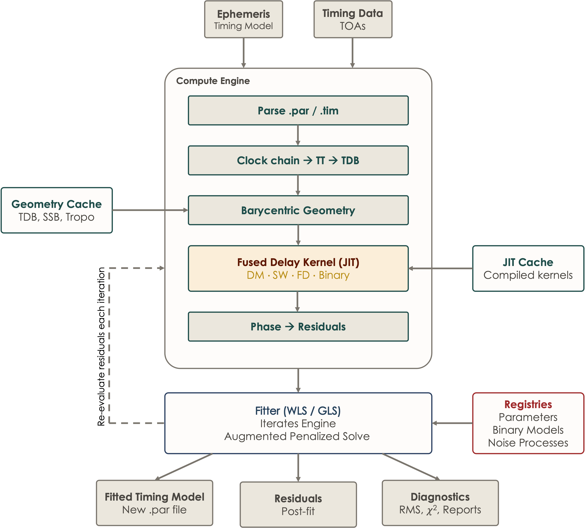<br />
图注：Schematic of the \(\textsc{JUG}\) architecture. A pulsar ephemeris (\texttt{.par}) and TOA file (\texttt{.tim}) are taken in by the compute engine, which evaluates the timing model operations: parsing, the observatory clock chain and conversion to TDB, the barycentric geometry, a single fused JIT delay kernel evaluating the dispersion, solar-wind, frequency-dependent, and binary delays, and finally the rotational phase to timing residuals. The geometry and JIT compilations are cached for repeated use. The fitter wraps the engine, re-evaluating the residuals at each iteration of the solver, with the parameter, binary-model, and noise registries checked during fit setup to identify what is present in fitting the model. These output into a new fitted timing model, updated post-fit residuals, and diagnostic summaries for the user.<br />
对应解读：建议重点检查的图表 1；关键图表逐图导读中的图 1（软件架构或流程图）<br />
入选理由：这张图直接说明 JUG 的端到端定时链路：读入、钟差修正、几何延迟、JIT 延迟核、残差计算与拟合回写都在同一计算图内，是理解全文方法论的起点，也最能支撑“全流程独立实现”的主张。<br />
来源与置信度：\(arxiv_source\)；high；\(arxiv_source\) / sample701.tex:figure[1]</p>
<p><strong>Fig05</strong><br />
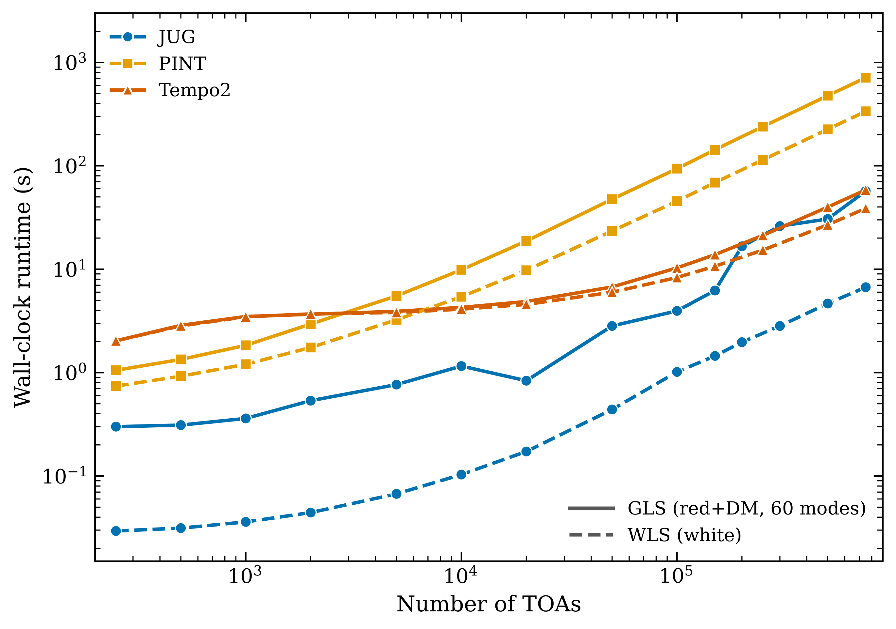<br />
图注：A computational speed comparison of JUG (blue), PINT (yellow), and Tempo2 (orange) evaluated through $N_\mathrm{TOA}$ using a simulated dataset for both GLS (solid) and WLS (dashed) fits. While \(\textsc{JUG}\) is the fastest across the range of dataset sizes tested, the \(\textsc{Tempo2}\) \(\texttt{-qrfit}\) solver approaches \(\textsc{JUG}\)'s speed as the data size increases and noise is included in the pulsar ephemeris.<br />
对应解读：建议重点检查的图表 2；关键图表逐图导读中的图 2（运行时间随到达时刻数变化的基准图）<br />
入选理由：这是性能结论的核心证据，能直接比较 JUG、PINT 和 Tempo2 在不同数据规模下的斜率与截距，并体现 GLS/WLS 两类任务的差异；对“快五十倍以上”和可扩展性的论证最关键。<br />
来源与置信度：\(arxiv_source\)；high；\(arxiv_source\) / sample701.tex:figure[5]</p>
<p><strong>Fig07</strong><br />
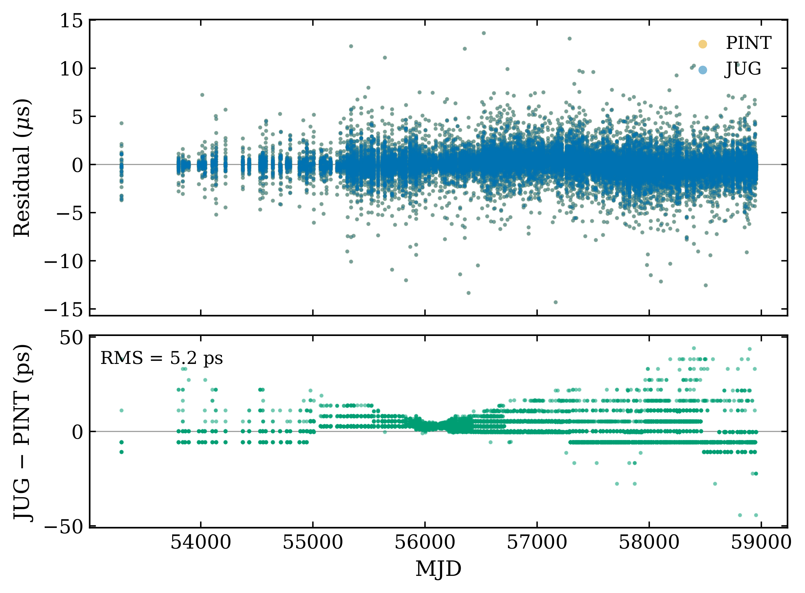<br />
图注：(Top) The residuals of \(\textsc{JUG}\) and \(\textsc{PINT}\) overlaid on top of each other validated at the same timing model parameter values for PSR~J1909$-$3744 from the NANOGrav 15-year data set. It is difficult to see the \(\textsc{PINT}\) data as \(\textsc{JUG}\) matches them almost exactly. (Bottom) The residual difference between the residuals formed by each software, demonstrating ps level of agreement and a relative RMS difference between them of $5.25\,\mathrm{ps}$. The bowtie structure seen in the bottom panel is a signature of the dataset growth from the \(\texttt{PEPOCH}\) set in the ephemeris. The horizontal banding reflects the quantization due to precision handling of the phase residual.<br />
对应解读：建议重点检查的图表 3；关键图表逐图导读中的图 3（与 PINT 的一致性比较/残差差值图）<br />
入选理由：这张图最能检验新软件是否只是更快而不是更准。下方面板直接给出 JUG 与 PINT 残差差值，关注是否围绕零分布、是否出现 bowtie 结构和量化条带，正对应日报要求的系统偏差诊断。<br />
来源与置信度：\(arxiv_source\)；high；\(arxiv_source\) / sample701.tex:figure[7]</p>
<p><strong>Fig08</strong><br />
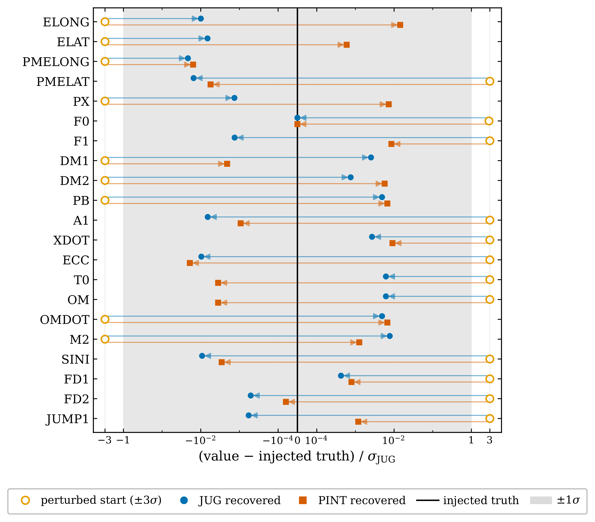<br />
图注：The recovery of the timing parameters of a simulated dataset of PSR~J1600$-$3053 for both \(\textsc{JUG}\) (blue) and \(\textsc{PINT}\) (orange), from a starting ephemeris where all parameters were perturbed by $\pm3\sigma$ from their simulated values. Both \(\textsc{JUG}\) and \(\textsc{PINT}\) recover the timing solution to approximately the same accuracy, within $0.02\sigma$ of each parameter's true simulated value. The greyed out region in the centre of the plot represents the $\pm1\sigma$ region of parameter uncertainty.<br />
对应解读：建议重点检查的图表 4；关键图表逐图导读中的图 4（参数恢复散点图或真值-回收值对比图）<br />
入选理由：它展示了从扰动初值出发，JUG 和 PINT 是否都能把参数恢复到真值附近，并带有一比一意义上的误差带约束；这是验证拟合可靠性和参数可辨识性的直接证据。<br />
来源与置信度：\(arxiv_source\)；high；\(arxiv_source\) / sample701.tex:figure[8]</p>
<p><strong>Fig03</strong><br />
<br />
图注：Comparison of \(\textsc{JUG}\)'s MAP noise estimates against posteriors sampled with \(\textsc{Discovery}\) for two simulated PSR~J1909$-$3744-like datasets with injected red, DM, and chromatic-scattering noise. Each parameter sampled here describes a hyperparameter of those noise processes. (Left) The MAP estimates (red) lie within the posteriors and agree with the injected values (green). (Right) The recovery of a dataset with steeper noise. The MAP recovery is mainly biased with reference to the chromatic amplitude. These illustrate the bias incurred where the noise processes are steep.<br />
对应解读：建议重点检查的图表 5；模型拟合与噪声分析段落（噪声参数后验/剖面似然）<br />
入选理由：这张图把 JUG 的 MAP 噪声估计与采样后验并列比较，最适合说明噪声超参数是否存在退化、偏置或偏宽后验；对于 PTA 噪声建模，这比单纯点估计更有诊断价值。<br />
来源与置信度：\(arxiv_source\)；high；\(arxiv_source\) / sample701.tex:figure[3]</p>
<p><strong>Fig02</strong><br />
<br />
图注：An example of WLS and GLS fitting using a simulated dataset of PSR~J1909$-$3744 containing achromatic red noise and DM noise. (Top) The post-fit residuals (grey) of a WLS solution, not modeling the injected noise processes. (Centre) The post-fit residuals (grey) of a GLS solution, taking into account the noise models. Overlaid on the residuals are the achromatic red noise (red) and DM noise (blue) as realised by \(\textsc{JUG}\) and referenced to $1.4\,\mathrm{GHz}$. The curve in dark blue represents the sum of these processes. The visible differences between the noise realisations and the timing residuals are a product of the DM noise structure being referenced to a single radio frequency. (Bottom) The noise subtracted residuals normalised by their scaled uncertainties (green), demonstrated to be well approximated by a Gaussian distribution with mean $0$ and unit variance as expected.<br />
对应解读：模型拟合与残差诊断段落；对应 WLS/GLS 拟合示例与噪声子tracted residuals<br />
入选理由：这张图非常适合解释 WLS 与 GLS 的区别，以及噪声模型被纳入后残差如何变得更接近零均值、单位方差；它能把“拟合更好”具体化为残差结构被消除，而不是仅看残差幅度变小。<br />
来源与置信度：\(arxiv_source\)；high；\(arxiv_source\) / sample701.tex:figure[2]</p>
<h4 id="_111">强相关工作</h4>
<p>这篇工作与两类既有工作直接相关。第一类是脉冲星定时软件与 PTA 分析工具，包括传统的定时包、广义最小二乘实现、以及把随机噪声和共同信号纳入后验推断的 PTA 管线。第二类是科学计算框架在天文中的应用，尤其是可微编程、自动微分、JIT 编译和 GPU 加速如何改变大规模推断。检索关键词可以用“pulsar timing software”“PTA likelihood”“generalized least squares timing”“JAX scientific inference”“automatic differentiation astrophysics”。</p>
<p>从历史和方法论上看，这篇文章继承的是“Tempo2 时代”的高精度定时传统，但试图回答的是“下一代数据规模下怎样把定时做成现代数值软件”的问题。它和 PINT、Tempo2 的关系更像同类软件之间的代际比较，而不是物理模型之争；真正的张力在于，旧工作流常把定时和噪声后验分析分成不同模块，而 JUG 明确主张把它们合并。</p>
<p><strong>同一事件 / 同类源线索</strong>：</p>
<ul>
<li><a href="https://arxiv.org/abs/2608.27786">https://arxiv.org/abs/2608.27786</a></li>
<li><a href="https://arxiv.org/pdf/2608.27786">https://arxiv.org/pdf/2608.27786</a></li>
</ul>
<p><strong>相似工作</strong>：</p>
<p>（未提供）</p>
<p><strong>基础理论 / 方法工作</strong>：</p>
<ul>
<li><a href="https://arxiv.org/abs/astro-ph/0603381">https://arxiv.org/abs/astro-ph/0603381</a></li>
</ul>
<p><strong>相反观点 / 张力线索</strong>：</p>
<p>（未提供）</p>
</details>
<h2 id="_112">说明</h2>
<p>评分由 LLM 给出初评，再由本地阈值策略过滤；IACT、TeV 伽马射线和高能中微子天文学按重点方向处理。</p>
    </main>
  </div>
</body>
</html>
